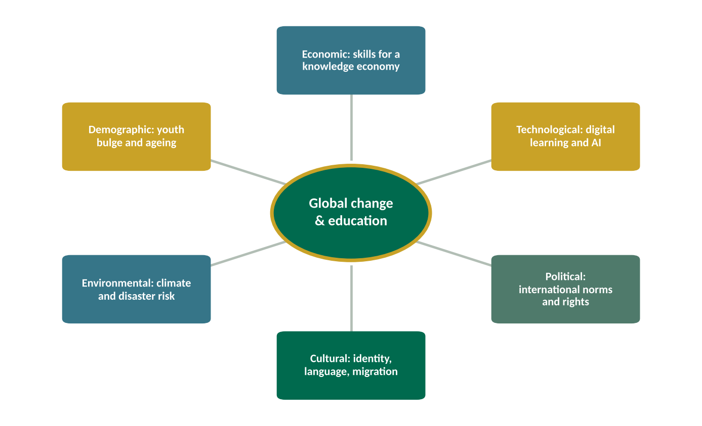
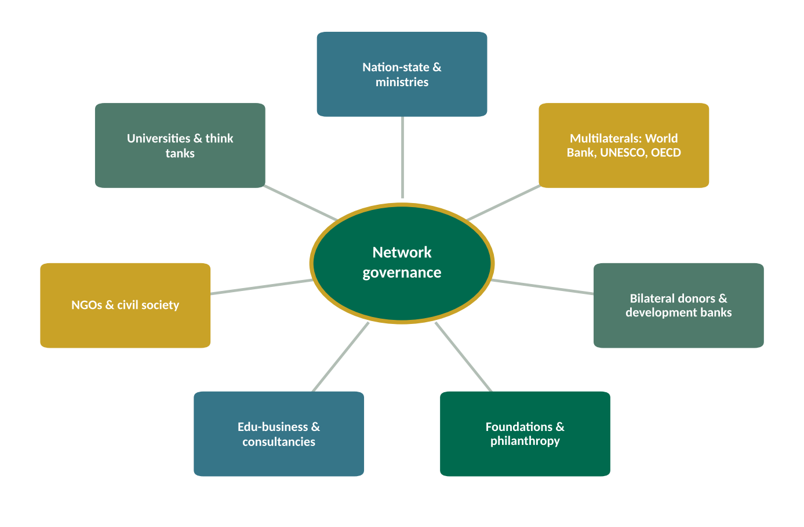
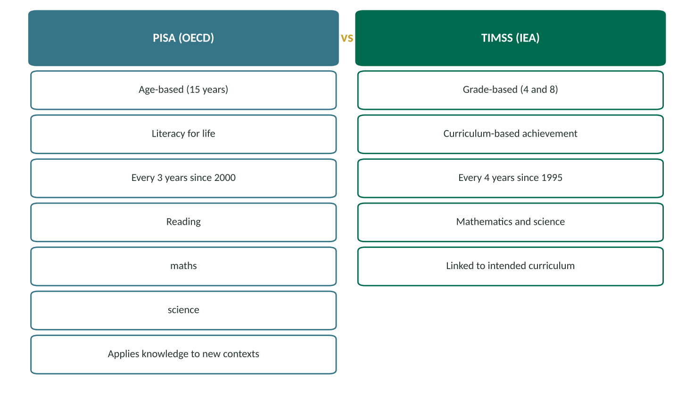
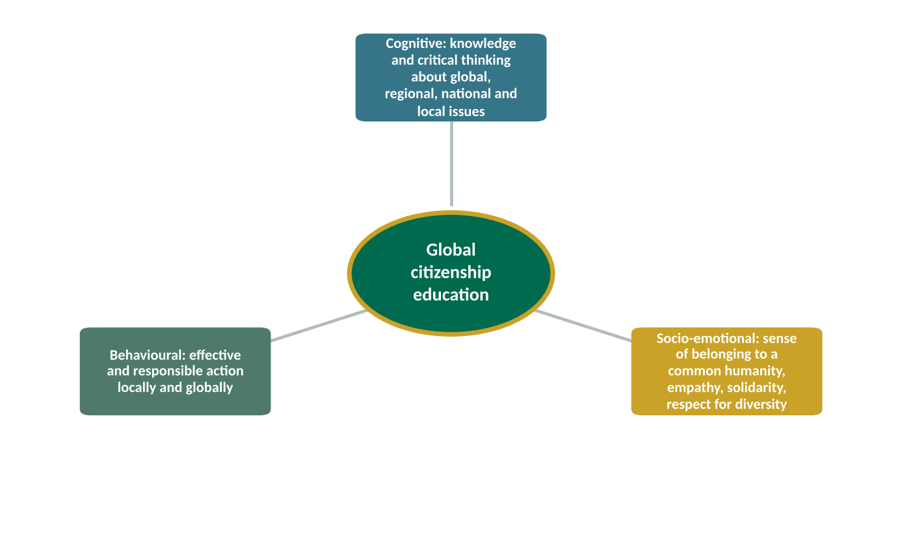
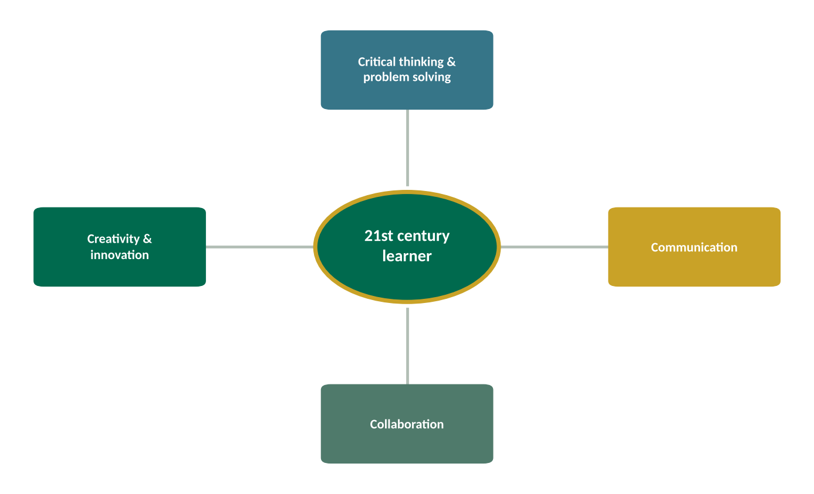
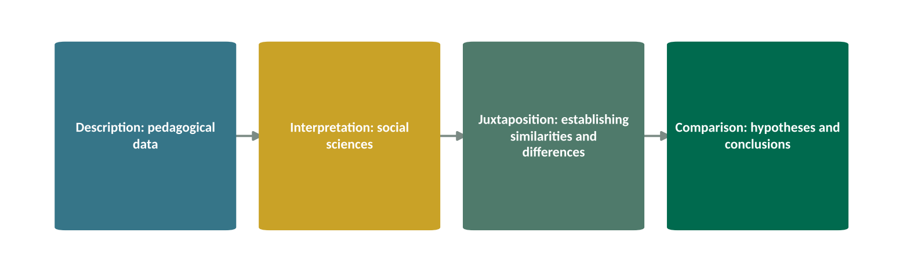
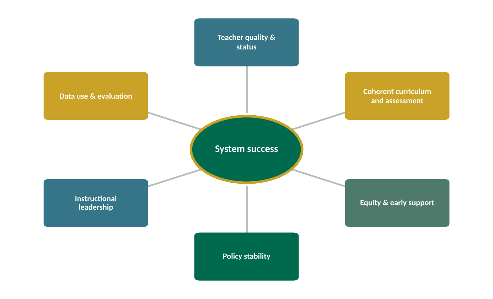

ED 501 বৈশ্বিক প্রেক্ষাপটে শিক্ষা
বিশ্বায়ন, আন্তর্জাতিক অঙ্গীকার, অগ্রগতির সূচক, দৃষ্টান্ত পরিবর্তন, বৈশ্বিক সংস্থা, বিভিন্ন দেশের শিক্ষাব্যবস্থা ও একাডেমিক নেটওয়ার্কিং, বাংলাদেশের দৃষ্টিকোণ থেকে
এটি ইংরেজি পাঠ নোটের বাংলা সংস্করণ। পাঠতালিকা ও তথ্যসূত্রের বইয়ের নাম মূল ভাষায় রাখা হয়েছে, যাতে লাইব্রেরিতে সহজে খুঁজে পান।
সূচিপত্র
- ইউনিট ১: বৈশ্বিক প্রেক্ষাপটে শিক্ষাগত পরিবর্তনের ধারণায়ন
- ইউনিট ২: বৈশ্বিক ঘোষণা ও জাতীয় অঙ্গীকার
- ইউনিট ৩: শিক্ষায় বৈশ্বিক ও জাতীয় অগ্রগতি
- ইউনিট ৪: শিক্ষা অনুশীলনে প্যারাডাইম শিফট
- ইউনিট ৫: বৈশ্বিক শিক্ষায় সাংগঠনিক দৃষ্টিভঙ্গি
- ইউনিট ৬: নির্বাচিত দেশসমূহের সফল শিক্ষা অনুশীলন
- ইউনিট ৭: শিক্ষায় বৈশ্বিক সংযোগ
- পাঠতালিকা
- পরীক্ষা প্রস্তুতি প্রশ্নব্যাংক
- তথ্যসূত্র
এই কোর্স সম্পর্কে
শিক্ষা আর কেবল জাতীয় সীমানার ভেতরে বিকশিত হয় না। শিক্ষাক্রম, মূল্যায়ন ব্যবস্থা, শিক্ষকমান এবং এমনকি সংস্কারের পরিভাষাও (যোগ্যতা, শিখনফল, মান, জবাবদিহি) এখন আন্তর্জাতিক সংস্থা, দাতা-প্রকল্প, র্যাংকিং তালিকা (league tables) এবং একাডেমিক নেটওয়ার্কের মাধ্যমে এক দেশ থেকে আরেক দেশে ছড়িয়ে পড়ে। ED 501 কোর্সটি M.Ed শিক্ষার্থী এবং ভবিষ্যৎ বিশ্ববিদ্যালয় শিক্ষককে এই বৈশ্বিক প্রবাহগুলো সমালোচনামূলকভাবে বিশ্লেষণ করতে এবং বাংলাদেশ কী যুক্তিসংগতভাবে গ্রহণ, অভিযোজন বা প্রতিরোধ করতে পারে তা বিচার করতে সক্ষম করে।
কোর্সটি বৈশ্বিক শিক্ষাগত পরিবর্তনের ঐতিহাসিক ধারণায়ন (ইউনিট ১) থেকে শুরু করে নীতিনির্ধারণে প্রভাব বিস্তারকারী আন্তর্জাতিক ঘোষণা ও জাতীয় অঙ্গীকার (ইউনিট ২) হয়ে অগ্রগতি পরিমাপে ব্যবহৃত সূচক ও প্রতিবেদন (ইউনিট ৩) পর্যন্ত অগ্রসর হয়। এরপর এটি শিক্ষণপদ্ধতি, মান ও জরুরি পরিস্থিতিতে প্যারাডাইম শিফট (ইউনিট ৪), আন্তর্জাতিক সংস্থাসমূহের কার্যপদ্ধতি (ইউনিট ৫), নির্বাচিত দেশসমূহের সফল অনুশীলন (ইউনিট ৬) এবং সবশেষে একজন পেশাদার শিক্ষাবিদের প্রয়োজনীয় বৈশ্বিক একাডেমিক সংযোগ, বৃত্তি ও নেটওয়ার্ক (ইউনিট ৭) পর্যালোচনা করে।
কোর্সের উদ্দেশ্য
বিশ্বব্যাপী সমকালীন শিক্ষাগত ঘটনা, প্রবণতা, সংস্কার ও উদ্ভাবন এবং সেগুলোর তাত্ত্বিক ভিত্তি ব্যাখ্যা করা।
বিশ্বের বিভিন্ন অঞ্চলে শিক্ষাগত উন্নয়ন ও চ্যালেঞ্জের বৈচিত্র্য শনাক্ত করা।
প্রেক্ষাপট সম্পর্কে সমালোচনামূলক সচেতনতা বজায় রেখে শিক্ষণপদ্ধতি, বয়স্ক শিক্ষণবিজ্ঞান (andragogy), ব্যবস্থাপনা, শিক্ষাক্রম ও মূল্যায়নের সফল অনুশীলনসমূহ বাংলাদেশের উপযোগী করে অভিযোজন করা।
নির্বাচিত জাতীয় ও আন্তর্জাতিক সংস্থাসমূহের শিক্ষা কার্যক্রম ও কার্যপদ্ধতি বর্ণনা করা।
স্বীকৃত তুলনামূলক কাঠামো ব্যবহার করে নির্বাচিত দেশসমূহের শিক্ষাব্যবস্থার তুলনামূলক বিশ্লেষণ সম্পাদন করা।
তথ্য সংগ্রহ ও সংকলন করা, প্রতিবেদন প্রস্তুত করা এবং সমালোচনাহীন নীতি ধার (policy borrowing) এড়িয়ে অন্যান্য শিক্ষাব্যবস্থা থেকে শিক্ষা গ্রহণ করা।
প্রতিটি ইউনিট এম.এড-এর অফিশিয়াল পাঠ্যসূচির ক্রম অনুসরণ করে। প্রথমে মূল আলোচনা পড়ুন, তারপর বক্সগুলো, এরপর পরীক্ষার প্রস্তুতি প্রশ্ন দিয়ে নিজেকে যাচাই করুন।
সবুজাভ নীল বক্স = সংজ্ঞা ও পড়ার কৌশল। সোনালি বক্স = অবশ্যই মনে রাখার বিষয় ও পরীক্ষার প্রস্তুতি। সবুজ বক্স = বাংলাদেশ প্রেক্ষাপট। ধূসর বক্স = মাস্টার্স পর্যায়ে প্রত্যাশিত সমালোচনামূলক দৃষ্টিভঙ্গি। হলুদাভ "ব্যবহারের আগে যাচাই করুন" বক্সে এমন নীতিগত তথ্য ও পরিসংখ্যান আছে যা বদলায়: পরীক্ষার আগে BANBEIS, শিক্ষা মন্ত্রণালয়, DPE, NCTB, UGC, UNESCO বা বিশ্বব্যাংকের সর্বশেষ তথ্যের সঙ্গে মিলিয়ে নিন।
শেষ অধ্যায়টি বিশ্ববিদ্যালয় পরীক্ষার ধরনে একটি প্রশ্নব্যাংক (উত্তরসহ MCQ, সংক্ষিপ্ত ও রচনামূলক প্রশ্ন), এরপর APA 7th রীতিতে পূর্ণ তথ্যসূত্র।
ইউনিট ১: বৈশ্বিক প্রেক্ষাপটে শিক্ষাগত পরিবর্তনের ধারণায়ন
অধ্যায়ের সারসংক্ষেপ
বৈশ্বিক পরিবর্তন (global change) বলতে অর্থনীতি, প্রযুক্তি, রাজনীতি, সংস্কৃতি ও পরিবেশে সংঘটিত বৃহৎ পরিসরের, পরস্পর-সংযুক্ত রূপান্তরকে বোঝায়, যা জাতীয় সীমানা অতিক্রম করে এবং মানুষ যে পরিস্থিতিতে বসবাস, কাজ ও শিখন সম্পন্ন করে তা পরিবর্তন করে দেয়। শিক্ষায় এই শব্দটি বাহ্যিক চালিকাশক্তি (বিশ্বায়ন, অভিবাসন, ডিজিটাল প্রযুক্তি, জলবায়ু পরিবর্তন, জনমিতিক রূপান্তর) এবং শিক্ষাব্যবস্থার অভ্যন্তরীণ প্রতিক্রিয়া (সংস্কার…
এই অধ্যায়ে আলোচিত বিষয়: বৈশ্বিক পরিবর্তন কী?; বৈশ্বিক শিক্ষার কালানুক্রমিক বিকাশ; বৈশ্বিক পরিবর্তন ও শিক্ষার সম্পর্ক; বিশ্বায়ন ও নব্য উদারতাবাদ।
মূল পরিভাষা:
- বিশ্বায়ন (Giddens, 1990): "বিশ্বব্যাপী সামাজিক সম্পর্কের এমন তীব্রতা বৃদ্ধি, যা দূরবর্তী স্থানগুলোকে এমনভাবে যুক্ত করে যে স্থানীয় ঘটনাবলি বহু মাইল দূরে সংঘটিত ঘটনার দ্বারা প্রভাবিত হয় এবং এর বিপরীতটিও ঘটে।"
- বিশ্বায়ন ও শিক্ষা (Carnoy, 1999): বিশ্বায়ন হলো এমন এক অর্থনীতি, যার কৌশলগত মূল কার্যক্রমসমূহ, যেমন উদ্ভাবন, অর্থায়ন ও করপোরেট ব্যবস্থাপনা, প্রায় তাৎক্ষণিক সময়ে বিশ্বজুড়ে একক ইউনিট হিসেবে কাজ করে।
- নব্য উদারতাবাদ (Harvey, 2005): "রাজনৈতিক-অর্থনৈতিক অনুশীলনের এমন একটি তত্ত্ব, যা প্রস্তাব করে যে শক্তিশালী ব্যক্তিগত সম্পত্তি অধিকার, মুক্ত বাজার ও মুক্ত বাণিজ্য দ্বারা চিহ্নিত একটি প্রাতিষ্ঠানিক কাঠামোর মধ্যে ব্যক্তির উদ্যোক্তা-স্বাধীনতা ও দক্ষতাকে মুক্ত করার মাধ্যমেই মানবকল্যাণ সর্বোত্তমভাবে এগিয়ে নেওয়া যায়।"
মনে রাখার মূল বিষয়:
- নীতিগত আলোচনার (policy talk) স্তরে বৈশ্বিক অভিসরণ (সবাই যোগ্যতা, মান ও জবাবদিহির কথা বলে) প্রায়ই শ্রেণিকক্ষ অনুশীলনের স্তরে ভিন্নতার সঙ্গে সহাবস্থান করে।
শিক্ষাক্রমে যা বলা হয়েছেইউনিট ১: বৈশ্বিক প্রেক্ষাপটে শিক্ষাগত পরিবর্তনের ধারণায়ন · ৫ সংযোগ ঘণ্টা
এই ইউনিট শেষে শিক্ষার্থীরা যা পারবে
- বৈশ্বিক পরিবর্তনের ধারণা বর্ণনা করা
- বৈশ্বিক পরিবর্তন ও শিক্ষার মধ্যকার সম্পর্ক ব্যাখ্যা করা
- শিক্ষায় বৈশ্বিক পরিবর্তনের সাম্প্রতিক প্রবণতাসমূহের প্রভাব বিশ্লেষণ করা
- বৈশ্বিক শিক্ষার কালানুক্রমিক বিকাশ (প্রাক-আধুনিক, আধুনিকতাবাদ, ঔপনিবেশিকতাবাদ,
- বৈশ্বিক পরিবর্তন ও শিক্ষার মধ্যকার সম্পর্ক
- বিশ্বায়ন ও নব্য উদারতাবাদ: নেটওয়ার্ক শাসন ও বৈশ্বিক শিক্ষা, আন্তর্জাতিক শিক্ষা
১.১ বৈশ্বিক পরিবর্তন কী?
বৈশ্বিক পরিবর্তন (global change) বলতে অর্থনীতি, প্রযুক্তি, রাজনীতি, সংস্কৃতি ও পরিবেশে সংঘটিত বৃহৎ পরিসরের, পরস্পর-সংযুক্ত রূপান্তরকে বোঝায়, যা জাতীয় সীমানা অতিক্রম করে এবং মানুষ যে পরিস্থিতিতে বসবাস, কাজ ও শিখন সম্পন্ন করে তা পরিবর্তন করে দেয়। শিক্ষায় এই শব্দটি বাহ্যিক চালিকাশক্তি (বিশ্বায়ন, অভিবাসন, ডিজিটাল প্রযুক্তি, জলবায়ু পরিবর্তন, জনমিতিক রূপান্তর) এবং শিক্ষাব্যবস্থার অভ্যন্তরীণ প্রতিক্রিয়া (শিক্ষাক্রম, মূল্যায়ন, শাসনব্যবস্থা ও শিক্ষক শিক্ষায় সংস্কার) উভয়কেই অন্তর্ভুক্ত করে।
বিশ্বায়ন (Globalisation) (Giddens, 1990): "বিশ্বব্যাপী সামাজিক সম্পর্কের এমন তীব্রতা বৃদ্ধি, যা দূরবর্তী স্থানগুলোকে এমনভাবে যুক্ত করে যে স্থানীয় ঘটনাবলি বহু মাইল দূরে সংঘটিত ঘটনার দ্বারা প্রভাবিত হয় এবং এর বিপরীতটিও ঘটে।"
বিশ্বায়ন ও শিক্ষা (Carnoy, 1999): বিশ্বায়ন হলো এমন এক অর্থনীতি, যার কৌশলগত মূল কার্যক্রমসমূহ, যেমন উদ্ভাবন, অর্থায়ন ও করপোরেট ব্যবস্থাপনা, প্রায় তাৎক্ষণিক সময়ে বিশ্বজুড়ে একক ইউনিট হিসেবে কাজ করে। শিক্ষার ওপর এর প্রভাব তিনটি পথে আসে: অর্থায়ন-চালিত সংস্কার, প্রতিযোগিতা-চালিত সংস্কার এবং ন্যায্যতা-চালিত সংস্কার।
বাংলাদেশের মতো উন্নয়নশীল দেশে সংস্কার বিশ্লেষণের জন্য মার্টিন কার্নয়ের (Martin Carnoy) (1999) শ্রেণিবিন্যাস এখনো সবচেয়ে স্পষ্ট দৃষ্টিকোণগুলোর একটি:
| সংস্কারের ধরন | চালিকা যুক্তি | সাধারণ পদক্ষেপসমূহ | বাংলাদেশের দৃষ্টান্ত |
|---|---|---|---|
| প্রতিযোগিতা-চালিত | বৈশ্বিক অর্থনীতির জন্য শ্রমের উৎপাদনশীলতা বৃদ্ধি | বিকেন্দ্রীকরণ, মানদণ্ড, উন্নততর ব্যবস্থাপনা, উন্নত শিক্ষক নিয়োগ, দক্ষতাভিত্তিক শিক্ষাক্রম | যোগ্যতাভিত্তিক শিক্ষাক্রম, কারিগরি ও বৃত্তিমূলক শিক্ষা ও প্রশিক্ষণ (TVET) সম্প্রসারণ, দক্ষতা উন্নয়ন প্রকল্প |
| অর্থায়ন-চালিত | সরকারি ব্যয় হ্রাস এবং ব্যয়ের ভার স্থানান্তর | ব্যয় পুনরুদ্ধার, উচ্চশিক্ষা থেকে মৌলিক শিক্ষায় ব্যয় স্থানান্তর, বেসরকারীকরণ, বড় আকারের শ্রেণি | বেসরকারি বিশ্ববিদ্যালয় আইন ১৯৯২-এর পর বেসরকারি বিশ্ববিদ্যালয়ের বিস্তার; ফি-নির্ভর বেসরকারি বিদ্যালয় ও কোচিং |
| ন্যায্যতা-চালিত | সুযোগের সমতা বৃদ্ধি | নিম্ন আয়ের, গ্রামীণ, মেয়ে ও প্রতিবন্ধী শিক্ষার্থীদের জন্য লক্ষ্যভিত্তিক কর্মসূচি | মাধ্যমিক বিদ্যালয়ে ছাত্রী উপবৃত্তি, প্রাথমিক উপবৃত্তি, স্কুল ফিডিং, একীভূত শিক্ষা |
সারণি ১. বিশ্বায়ন-চালিত শিক্ষা সংস্কারের তিনটি ধরন (Carnoy অনুসারে)
১.২ বৈশ্বিক শিক্ষার কালানুক্রমিক বিকাশ
শিক্ষা কীভাবে "বৈশ্বিক" হয়ে উঠল, পাঠ্যসূচি তার একটি কালানুক্রমিক পাঠ দাবি করে। নিচের পর্বগুলো বিশ্লেষণমূলক, একেবারে সুনির্দিষ্ট সীমারেখায় বিভক্ত নয়।
| সময়কাল | মূল বৈশিষ্ট্য | শিক্ষার জন্য তাৎপর্য |
|---|---|---|
| প্রাক-আধুনিক (আনু. ১৫০০ সালের আগে) | ধর্মীয় ও জ্ঞানচর্চার নেটওয়ার্ক: নালন্দা ও বিক্রমশীলা, আল-আজহার, বোলোনিয়া, প্যারিস; ভ্রাম্যমাণ পণ্ডিত; পাণ্ডুলিপি | শিক্ষা ছিল অভিজাতকেন্দ্রিক, ধর্মীয়, মৌখিক ও পাঠনির্ভর; জ্ঞান বাণিজ্য ও তীর্থযাত্রার পথ ধরে ছড়িয়ে পড়ত (যেমন, হিউয়েন সাঙের (Xuanzang) নালন্দা সফর) |
| আধুনিকতাবাদ (আনু. ১৫০০ থেকে ১৯৪৫) | আলোকায়ন (Enlightenment), মুদ্রণ, জাতিরাষ্ট্র, শিল্পায়ন | গণ-বাধ্যতামূলক বিদ্যালয় শিক্ষা (প্রুশিয়া, ১৭৬৩ থেকে; ইংল্যান্ড ১৮৭০, ১৮৮০), রাষ্ট্রীয় শিক্ষাক্রম, শিক্ষকদের জন্য নর্মাল স্কুল; জাতিগঠনের উপায় হিসেবে বিদ্যালয় শিক্ষা |
| ঔপনিবেশিকতাবাদ (১৬শ শতক থেকে বিংশ শতকের মধ্যভাগ) | ইউরোপীয় সাম্রাজ্যসমূহ কর্তৃক প্রতিষ্ঠান রপ্তানি | মেকলের মিনিট (Macaulay's Minute) (১৮৩৫), উডের ডেসপ্যাচ (Wood's Despatch) (১৮৫৪), কলকাতা বিশ্ববিদ্যালয় (১৮৫৭), ঢাকা বিশ্ববিদ্যালয় (১৯২১); ইংরেজি মাধ্যমের অভিজাত শ্রেণি, মাতৃভাষানির্ভর জনসাধারণ; দ্বৈত ব্যবস্থা আজও বিদ্যমান |
| উত্তর-ঔপনিবেশিক ও উন্নয়ন যুগ (১৯৪৫ থেকে ১৯৮০-এর দশক) | জাতিসংঘ ব্যবস্থা, মানবপুঁজি তত্ত্ব, বৈদেশিক সাহায্য | সর্বজনীন মানবাধিকার ঘোষণা (১৯৪৮), UNESCO (১৯৪৫), ১৯৬২ থেকে শিক্ষাখাতে বিশ্বব্যাংকের ঋণদান; জনশক্তি পরিকল্পনা; প্রাথমিক বিদ্যালয় শিক্ষার সম্প্রসারণ |
| উত্তর-আধুনিকতাবাদ (বিংশ শতকের শেষভাগ) | মহাআখ্যান (grand narratives), পরিচয় ও বহুমাত্রিক জ্ঞান নিয়ে প্রশ্ন উত্থাপন | বহুসাংস্কৃতিক ও সমালোচনামূলক শিক্ষণবিজ্ঞান, আদিবাসী জ্ঞানের স্বীকৃতি, শিক্ষার্থীকেন্দ্রিক ও গঠনবাদী উপাগম |
| বিশ্বায়ন (১৯৯০-এর দশক থেকে) | তথ্য ও যোগাযোগ প্রযুক্তি (ICT), উদারীকৃত বাণিজ্য, নব্য উদারতাবাদী শাসন, আন্তর্জাতিক অভীক্ষা | EFA (১৯৯০), GATS ও শিক্ষাসেবার বাণিজ্য (১৯৯৫), PISA (২০০০), MDGs (২০০০), SDGs (২০১৫); বৈশ্বিক মানদণ্ড নির্ধারণ (benchmarking) ও নীতি ধার |
সারণি ২. বৈশ্বিক শিক্ষার বিকাশের পর্বসমূহ

চিত্র ১. প্রাক-আধুনিক থেকে বিশ্বায়িত যুগ পর্যন্ত বৈশ্বিক শিক্ষার কালানুক্রম
ভারতীয় উপমহাদেশে প্রতিটি পর্বেরই দৃষ্টান্ত পাওয়া যায়। বর্তমান বাংলাদেশের পাহাড়পুর (সোমপুর মহাবিহার) ও ময়নামতির প্রাচীন বৌদ্ধ বিহারসমূহ একটি প্রাক-আধুনিক আন্তর্জাতিক শিখন নেটওয়ার্কের অংশ ছিল। ঔপনিবেশিক শাসন ইংরেজি মাধ্যম ও পরীক্ষাকেন্দ্রিক যে ব্যবস্থা তৈরি করেছিল, তার উত্তরাধিকার আজও পাবলিক পরীক্ষা, বাংলা-ইংরেজি-মাদ্রাসা ত্রিধারা এবং ইংরেজির মর্যাদার মধ্যে দৃশ্যমান। ১৯৭১-পরবর্তী বাংলাদেশ কুদরাত-এ-খুদা শিক্ষা কমিশন ও দাতাদের ব্যাপক সম্পৃক্ততার মধ্য দিয়ে উন্নয়ন যুগে প্রবেশ করে এবং ১৯৯০ সাল থেকে EFA, MDGs ও SDGs দ্বারা গভীরভাবে প্রভাবিত হয়েছে।
১.৩ বৈশ্বিক পরিবর্তন ও শিক্ষার মধ্যকার সম্পর্ক
এই সম্পর্ক দ্বিমুখী। বৈশ্বিক পরিবর্তন শিক্ষাকে রূপ দেয় (নতুন দক্ষতা, নতুন প্রযুক্তি, অভিবাসন, জলবায়ু ঝুঁকির চাহিদা) এবং শিক্ষাও বৈশ্বিক পরিবর্তনকে রূপ দেয় (মানবপুঁজি, উদ্ভাবন, নাগরিকত্ব, টেকসইতা)।

চিত্র ২. যেসব পথে বৈশ্বিক পরিবর্তন শিক্ষায় পৌঁছায়
মাস্টার্স পর্যায়ে এই সম্পর্ক ব্যাখ্যায় চারটি তাত্ত্বিক দৃষ্টিকোণ সহায়ক:
| তত্ত্ব | প্রধান চিন্তাবিদ | মূল দাবি | সমালোচনা |
|---|---|---|---|
| মানবপুঁজি তত্ত্ব (human capital theory) | Schultz (1961); Becker (1964) | শিক্ষা একটি বিনিয়োগ, যা উৎপাদনশীলতা ও আয় বৃদ্ধি করে; সরকারি ব্যয়ের যৌক্তিকতা প্রতিষ্ঠা করে | শিক্ষাকে অর্থনৈতিক মূল্যে সীমিত করে; সংকেতায়ন (signalling) ও সনদবাদ (credentialism) উপেক্ষা করে |
| বিশ্বসংস্কৃতি / বিশ্বরাষ্ট্রব্যবস্থা তত্ত্ব (world culture / world polity theory) | Meyer, Ramirez, Boli | জাতিরাষ্ট্রগুলো আধুনিক বিদ্যালয় শিক্ষার বৈশ্বিক রূপরেখা (global scripts) গ্রহণ করে বলে শিক্ষাব্যবস্থাগুলো অভিসৃত হয় | সমরূপতা (isomorphism) ব্যাখ্যা করে, কিন্তু স্থানীয় কর্তৃত্ব (agency) ও ক্ষমতাকে উপেক্ষা করে |
| বিশ্বব্যবস্থা ও নির্ভরশীলতা তত্ত্ব (world-systems and dependency theory) | Wallerstein; Carnoy (1974); Altbach | কেন্দ্রীয় দেশগুলো জ্ঞান, ভাষা ও সাহায্যের মাধ্যমে প্রান্তীয় দেশগুলোর ওপর আধিপত্য বিস্তার করে; শিক্ষা নির্ভরশীলতাকে পুনরুৎপাদন করে | নিয়তিবাদী হয়ে পড়তে পারে; দক্ষিণের দেশগুলোর প্রকৃত অর্জনকে খাটো করে দেখে |
| সংস্কৃতিবাদী / সমালোচনামূলক তত্ত্ব (culturalist / critical theory) | Anderson-Levitt; Steiner-Khamsi; Appadurai | বৈশ্বিক ধারণাগুলো স্থানীয়ভাবে পুনর্ব্যাখ্যাত হয়; "স্থানীয়কৃত বিশ্বায়ন" (vernacular globalisation) | সাধারণীকরণ কঠিন; নৃতাত্ত্বিক (ethnographic) সাক্ষ্যের প্রয়োজন হয় |
সারণি ৩. শিক্ষা ও বৈশ্বিক পরিবর্তন সংক্রান্ত তত্ত্বসমূহ
নীতিগত আলোচনার স্তরে বৈশ্বিক অভিসরণ (সবাই যোগ্যতা, মান ও জবাবদিহির কথা বলে) প্রায়ই শ্রেণিকক্ষ অনুশীলনের স্তরে ভিন্নতার সঙ্গে সহাবস্থান করে। "আলোচনা" (talk), "কর্ম" (action) ও "অনুশীলন" (practice)-এর এই পার্থক্য তুলনামূলক শিক্ষার কেন্দ্রীয় বিষয় (Steiner-Khamsi, 2004)।
১.৪ বিশ্বায়ন ও নব্য উদারতাবাদ
নব্য উদারতাবাদ (neoliberalism) একটি রাজনৈতিক-অর্থনৈতিক দর্শন, যা মুক্ত বাজার, বেসরকারীকরণ, নিয়ন্ত্রণমুক্তকরণ, প্রতিযোগিতা ও ক্ষুদ্রতর রাষ্ট্রের পক্ষপাতী। শিক্ষায় এটি বিদ্যালয় বাছাইয়ের স্বাধীনতা, ভাউচার, কর্মদক্ষতাভিত্তিক বেতন, প্রমিত অভীক্ষা, র্যাংকিং তালিকা, সরকারি-বেসরকারি অংশীদারত্ব এবং শিক্ষাকে বাণিজ্যযোগ্য সেবা হিসেবে গণ্য করার মধ্য দিয়ে প্রকাশ পায়।
নব্য উদারতাবাদ (Harvey, 2005): "রাজনৈতিক-অর্থনৈতিক অনুশীলনের এমন একটি তত্ত্ব, যা প্রস্তাব করে যে শক্তিশালী ব্যক্তিগত সম্পত্তি অধিকার, মুক্ত বাজার ও মুক্ত বাণিজ্য দ্বারা চিহ্নিত একটি প্রাতিষ্ঠানিক কাঠামোর মধ্যে ব্যক্তির উদ্যোক্তা-স্বাধীনতা ও দক্ষতাকে মুক্ত করার মাধ্যমেই মানবকল্যাণ সর্বোত্তমভাবে এগিয়ে নেওয়া যায়।"
পাসি সালবার্গ (Pasi Sahlberg) (2011, 2021) এর ফলে সৃষ্ট বৈশ্বিক সংস্কার-প্যাকেজের নাম দিয়েছেন বৈশ্বিক শিক্ষা সংস্কার আন্দোলন (Global Educational Reform Movement, GERM): শিখন-শেখানোর প্রমিতকরণ, মূল বিষয়ের (সাক্ষরতা, গণনদক্ষতা) ওপর গুরুত্বারোপ, অভীক্ষাভিত্তিক জবাবদিহি, বাজারধর্মী বিদ্যালয় বাছাই এবং করপোরেট ব্যবস্থাপনা মডেল। তিনি GERM-কে ফিনল্যান্ডের আস্থা, সহযোগিতা, ন্যায্যতা ও শিক্ষক পেশাদারত্বের ওপর গুরুত্বারোপের সঙ্গে তুলনা করেন।
| GERM | বিকল্প (যেমন, ফিনল্যান্ড) |
|---|---|
| শিখন-শেখানোর প্রমিতকরণ | শিখন-শেখানোর ব্যক্তি-উপযোগীকরণ |
| সাক্ষরতা ও গণনদক্ষতায় গুরুত্বারোপ | বিস্তৃত, সৃজনশীল শিখনে গুরুত্বারোপ |
| অভীক্ষাভিত্তিক জবাবদিহি | আস্থাভিত্তিক দায়বদ্ধতা |
| প্রতিযোগিতা ও বিদ্যালয় বাছাই | সহযোগিতা ও ন্যায্যতা |
| করপোরেট ব্যবস্থাপনা মডেল | শিক্ষাবিদদের পেশাদার নেতৃত্ব |
সারণি ৪. একটি বিকল্প সংস্কার মডেলের সঙ্গে GERM-এর তুলনা (Sahlberg, 2021 অনুসারে)
নেটওয়ার্ক শাসন ও বৈশ্বিক শিক্ষা
স্টিফেন বল (Stephen Ball) (2012) এবং Ball ও Junemann (2012) সরকার (স্তরভিত্তিক, রাষ্ট্র-পরিচালিত) থেকে নেটওয়ার্ক শাসনের (network governance) দিকে একটি পরিবর্তন বর্ণনা করেন, যেখানে রাষ্ট্রীয় সংস্থা, আন্তর্জাতিক সংস্থা, জনহিতৈষী ফাউন্ডেশন, পরামর্শক প্রতিষ্ঠান, শিক্ষা-ব্যবসা প্রতিষ্ঠান ও এনজিওর জালের মধ্য দিয়ে নীতি প্রণীত হয়। নীতিজ্ঞান সম্মেলন, প্রতিবেদন, পরামর্শক এবং "সর্বোত্তম অনুশীলন" টুলকিটের মাধ্যমে ছড়িয়ে পড়ে।

চিত্র ৩. শিক্ষার বৈশ্বিক নেটওয়ার্ক শাসনের অংশীদারগণ
বাংলাদেশের শিক্ষাখাত নেটওয়ার্ক শাসনের একটি স্পষ্ট দৃষ্টান্ত। PEDP (প্রাথমিক) এবং SESIP বা SEDP (মাধ্যমিক)-এর মতো খাতভিত্তিক কর্মসূচি সরকার ও উন্নয়ন সহযোগীদের (বিশ্বব্যাংক, ADB, EU, JICA, UNICEF প্রভৃতি) যৌথ অর্থায়নে পরিচালিত হয় এবং যৌথ বার্ষিক পর্যালোচনার মাধ্যমে যৌথভাবে পরিবীক্ষণ করা হয়। উপানুষ্ঠানিক প্রাথমিক শিক্ষার বৃহত্তম এনজিও সরবরাহকারী BRAC এবং নাগরিক সমাজের জোট হিসেবে CAMPE-ও প্রভাবশালী নীতি-অংশীজন।
আন্তর্জাতিক শিক্ষা
আন্তর্জাতিক শিক্ষার (international education) কয়েকটি অর্থ রয়েছে: (a) অন্যান্য দেশ ও বৈশ্বিক বিষয় সম্পর্কে শিক্ষা (আন্তর্জাতিক সমঝোতা, শান্তি শিক্ষা); (b) শিক্ষার্থী, শিক্ষক, কার্যক্রম ও প্রতিষ্ঠানের আন্তঃসীমান্ত চলাচল; (c) আন্তর্জাতিক বিদ্যালয় ও শিক্ষাক্রম (IB, Cambridge, Edexcel); এবং (d) শিক্ষায় উন্নয়ন সহযোগিতা। UNESCO-র ১৯৭৪ সালের Recommendation concerning Education for International Understanding, Co-operation and Peace প্রথম অর্থের একটি প্রাথমিক মানদণ্ডমূলক দলিল।
সমালোচকেরা যুক্তি দেন যে শিক্ষায় বিশ্বায়ন সমরূপীকরণ (একই মডেল সবার জন্য), পণ্যায়ন (শিক্ষা একটি পণ্য), দক্ষিণের দেশগুলো থেকে মেধা পাচার এবং জ্ঞানতাত্ত্বিক অবিচার (দক্ষিণের জ্ঞানের প্রান্তিকীকরণ) সৃষ্টি করে। সমর্থকেরা প্রবেশাধিকারের দ্রুত সম্প্রসারণ, আন্তঃসীমান্ত গবেষণা সহযোগিতা এবং অধিকারভিত্তিক রীতিনীতির বিস্তারের দিকে ইঙ্গিত করেন। মাস্টার্স পর্যায়ের একটি ভারসাম্যপূর্ণ উত্তরে উভয় দিকই স্বীকার করা হয় এবং জোর দেওয়া হয় যে ফলাফল নির্ভর করে জাতীয় অংশীজনেরা বৈশ্বিক চাপকে কীভাবে মধ্যস্থতা করেন তার ওপর।
সম্ভাব্য প্রশ্ন: "বাংলাদেশের উদাহরণসহ বিশ্বায়ন-চালিত সংস্কার সম্পর্কে Carnoy-এর শ্রেণিবিন্যাস ব্যাখ্যা করুন।" "GERM কী? ফিনিশ মডেলের সঙ্গে এর সমালোচনামূলক তুলনা করুন।" "অন্তত দুটি তাত্ত্বিক দৃষ্টিকোণ ব্যবহার করে বৈশ্বিক পরিবর্তন ও শিক্ষার সম্পর্ক আলোচনা করুন।" "শিক্ষায় নেটওয়ার্ক শাসন কী?"
ইউনিট ২: বৈশ্বিক ঘোষণা ও জাতীয় অঙ্গীকার
অধ্যায়ের সারসংক্ষেপ
আন্তর্জাতিক দলিলসমূহ রীতিনীতি (সরকারগুলোর কী করা উচিত), বাধ্যবাধকতা (অনুসমর্থিত কনভেনশনের ক্ষেত্রে), লক্ষ্যমাত্রা এবং পরিবীক্ষণ ব্যবস্থা তৈরি করে। ঘোষণাসমূহ (যেমন, জমতিয়েন, ইনচন) হলো নমনীয় আইন (soft law); কনভেনশনসমূহ (যেমন, CRC, CEDAW, CRPD) হলো চুক্তি, যা অনুসমর্থনকারী রাষ্ট্রগুলোর জন্য বাধ্যতামূলক এবং এর অধীনে চুক্তি-সংস্থার কাছে প্রতিবেদন দাখিল করতে হয়।
এই অধ্যায়ে আলোচিত বিষয়: আন্তর্জাতিক ঘোষণা কেন গুরুত্বপূর্ণ; প্রধান আন্তর্জাতিক দলিলসমূহ; বাংলাদেশের জাতীয় অঙ্গীকার; নীতি স্থানান্তর ও নীতি ধার।
মনে রাখার মূল বিষয়:
- Education 2030 Framework for Action দুটি অর্থায়ন মানদণ্ড নির্ধারণ করেছে: সরকারি শিক্ষাব্যয় GDP-র অন্তত ৪ থেকে ৬% এবং/অথবা মোট সরকারি ব্যয়ের অন্তত ১৫ থেকে ২০%।
শিক্ষাক্রমে যা বলা হয়েছেইউনিট ২: বৈশ্বিক ঘোষণা ও জাতীয় অঙ্গীকার · ৫ সংযোগ ঘণ্টা
এই ইউনিট শেষে শিক্ষার্থীরা যা পারবে
- শিক্ষা বিষয়ক বিভিন্ন আন্তর্জাতিক ঘোষণা বর্ণনা করা
- বিভিন্ন বৈশ্বিক ও জাতীয় ঘোষণা পর্যালোচনা করা
- বাংলাদেশের প্রেক্ষাপটে বৈশ্বিক ও জাতীয় অঙ্গীকারসমূহের তাৎপর্য সমালোচনামূলকভাবে পরীক্ষা করা
- UN-UHRC, UN-CRC, EFA, DFA, CEDAW, সালামানকা, UNCRPD, দেলর কমিশন (Delors Commission),
- বাংলাদেশের সংবিধান, শিক্ষা কমিশনসমূহ (১৯৭২ থেকে ২০১০), পঞ্চবার্ষিক পরিকল্পনা, CPEA, খসড়া শিক্ষা আইন, NEP 2010, শিশুনীতি, জেন্ডার নীতি, প্রতিবন্ধী ব্যক্তির অধিকার ও
- নীতি স্থানান্তর (policy travelling), নীতি ধার এবং জাতীয় প্রেক্ষাপটে এর তাৎপর্যের সমালোচনামূলক পরীক্ষা
২.১ আন্তর্জাতিক ঘোষণা কেন গুরুত্বপূর্ণ
আন্তর্জাতিক দলিলসমূহ রীতিনীতি (সরকারগুলোর কী করা উচিত), বাধ্যবাধকতা (অনুসমর্থিত কনভেনশনের ক্ষেত্রে), লক্ষ্যমাত্রা এবং পরিবীক্ষণ ব্যবস্থা তৈরি করে। ঘোষণাসমূহ (যেমন, জমতিয়েন, ইনচন) হলো নমনীয় আইন (soft law); কনভেনশনসমূহ (যেমন, CRC, CEDAW, CRPD) হলো চুক্তি (treaties), যা অনুসমর্থনকারী রাষ্ট্রগুলোর জন্য বাধ্যতামূলক এবং এর অধীনে চুক্তি-সংস্থার কাছে প্রতিবেদন দাখিল করতে হয়।

চিত্র ৪. আন্তর্জাতিক রীতিনীতি থেকে শ্রেণিকক্ষ অনুশীলন পর্যন্ত
২.২ প্রধান আন্তর্জাতিক দলিলসমূহ
| দলিল | বছর | শিক্ষা বিষয়ক মূল বিধানসমূহ |
|---|---|---|
| সর্বজনীন মানবাধিকার ঘোষণা (UDHR) | 1948 | অনুচ্ছেদ ২৬: প্রত্যেকের শিক্ষার অধিকার রয়েছে; প্রারম্ভিক শিক্ষা অবৈতনিক ও বাধ্যতামূলক; শিক্ষার লক্ষ্য হবে ব্যক্তিত্বের পূর্ণ বিকাশ ও মানবাধিকারের প্রতি শ্রদ্ধা; সন্তানের শিক্ষার ধরন বেছে নেওয়ার অগ্রাধিকার পিতামাতার |
| অর্থনৈতিক, সামাজিক ও সাংস্কৃতিক অধিকার বিষয়ক আন্তর্জাতিক চুক্তি (International Covenant on Economic, Social and Cultural Rights) | 1966 | অনুচ্ছেদ ১৩ ও ১৪: অবৈতনিক বাধ্যতামূলক প্রাথমিক শিক্ষা, পর্যায়ক্রমে অবৈতনিক মাধ্যমিক ও উচ্চশিক্ষা |
| নারীর প্রতি সকল প্রকার বৈষম্য বিলোপ সনদ (CEDAW) | 1979 | অনুচ্ছেদ ১০: শিক্ষায় সমান অধিকার, একই শিক্ষাক্রম, গতানুগতিক ধারণার বিলোপ, নারী শিক্ষার্থীদের ঝরে পড়া হ্রাস |
| জাতিসংঘ শিশু অধিকার সনদ (UNCRC) | 1989 | অনুচ্ছেদ ২৮: শিক্ষার অধিকার, অবৈতনিক বাধ্যতামূলক প্রাথমিক শিক্ষা, ঝরে পড়া রোধের পদক্ষেপ, মর্যাদার সঙ্গে সংগতিপূর্ণ শৃঙ্খলা; অনুচ্ছেদ ২৯: শিক্ষার লক্ষ্য |
| সবার জন্য শিক্ষা বিষয়ক বিশ্ব ঘোষণা (EFA), জমতিয়েন | 1990 | মৌলিক শিখন চাহিদা পূরণ; মৌলিক শিক্ষার সম্প্রসারিত রূপকল্প; সর্বজনীন প্রবেশাধিকার ও ন্যায্যতা; শিখন অর্জনে গুরুত্বারোপ |
| সালামানকা বিবৃতি ও কর্মকাঠামো (Salamanca Statement and Framework for Action) | 1994 | একীভূত বিদ্যালয় হলো "বৈষম্যমূলক মনোভাব মোকাবিলার সবচেয়ে কার্যকর উপায়"; বিশেষ শিক্ষা চাহিদাসম্পন্ন শিশুদের জন্য একীভূত দৃষ্টিভঙ্গিসম্পন্ন সাধারণ বিদ্যালয় |
| দেলর কমিশনের প্রতিবেদন, Learning: The Treasure Within | 1996 | শিখনের চারটি স্তম্ভ; জীবনব্যাপী শিখন |
| ডাকার কর্মকাঠামো (Dakar Framework for Action, DFA) | 2000 | ২০১৫ সালের জন্য EFA-র ছয়টি লক্ষ্য (ECCE, UPE, যুব ও বয়স্কদের দক্ষতা, বয়স্ক সাক্ষরতায় ৫০% উন্নতি, জেন্ডার সমতা ও সাম্য, মান) |
| প্রতিবন্ধী ব্যক্তিদের অধিকার বিষয়ক জাতিসংঘ সনদ (UNCRPD) | 2006 | অনুচ্ছেদ ২৪: সকল স্তরে একীভূত শিক্ষাব্যবস্থা, যুক্তিসংগত উপযোজন (reasonable accommodation), ব্যক্তিকেন্দ্রিক সহায়তা |
| ইনচন ঘোষণা ও Education 2030 Framework for Action | 2015 | SDG 4-এর প্রতি অঙ্গীকার: সবার জন্য একীভূত, ন্যায্য ও মানসম্মত শিক্ষা এবং জীবনব্যাপী শিখন; ১২ বছরের অবৈতনিক, সরকারি অর্থায়নে প্রাথমিক ও মাধ্যমিক শিক্ষা (৯ বছর বাধ্যতামূলক); অন্তত ১ বছরের অবৈতনিক ও বাধ্যতামূলক প্রাক-প্রাথমিক শিক্ষা |
| টেকসই উন্নয়ন অভীষ্ট (SDGs) | 2015 | দশটি লক্ষ্যমাত্রাসহ SDG 4 (4.1 থেকে 4.7, 4.a থেকে 4.c) |
সারণি ৫. শিক্ষা বিষয়ক প্রধান আন্তর্জাতিক দলিলসমূহ
পাঠ্যসূচিতে "UN-UHRC" উল্লেখ আছে। সাধারণত এটিকে সর্বজনীন মানবাধিকার ঘোষণা (UDHR, ১৯৪৮) হিসেবে পড়া হয়, যদিও জাতিসংঘ মানবাধিকার পরিষদও (UNHRC, ২০০৬ সালে প্রতিষ্ঠিত) তার সর্বজনীন পর্যায়ক্রমিক পর্যালোচনার (Universal Periodic Review) মাধ্যমে রাষ্ট্রগুলোর শিক্ষা-অধিকার পর্যালোচনা করে। কোনটি বোঝানো হয়েছে তা আপনার বিভাগ থেকে নিশ্চিত হোন এবং উভয়টিই প্রস্তুত করুন।
শিখনের চারটি স্তম্ভ (Delors, 1996)

চিত্র ৫. দেলর কমিশন: শিখনের চারটি স্তম্ভ
জ্যাক দেলরের (Jacques Delors) সভাপতিত্বে গঠিত কমিশনটি সাতটি টানাপোড়েন (tensions) চিহ্নিত করেছিল, যা অতিক্রম করতে হবে: বৈশ্বিক ও স্থানীয়, সর্বজনীন ও ব্যক্তিগত, ঐতিহ্য ও আধুনিকতা, দীর্ঘমেয়াদি ও স্বল্পমেয়াদি বিবেচনা, প্রতিযোগিতা ও সুযোগের সমতা, জ্ঞানের সম্প্রসারণ ও তা আত্তীকরণে আমাদের সামর্থ্য, এবং আধ্যাত্মিক ও বস্তুগত।
SDG 4 ও এর লক্ষ্যমাত্রাসমূহ
| লক্ষ্য (Target) | মূল লক্ষ্য |
|---|---|
| 4.1 | অবৈতনিক, ন্যায্য ও মানসম্মত প্রাথমিক ও মাধ্যমিক শিক্ষা, যা প্রাসঙ্গিক ও কার্যকর শিখনফলের দিকে নিয়ে যায় |
| 4.2 | মানসম্মত প্রারম্ভিক শৈশব বিকাশ, যত্ন ও প্রাক-প্রাথমিক শিক্ষায় প্রবেশাধিকার |
| 4.3 | বিশ্ববিদ্যালয়সহ সাশ্রয়ী ও মানসম্মত TVET ও উচ্চশিক্ষায় সমান প্রবেশাধিকার |
| 4.4 | কর্মসংস্থান, শোভন কাজ ও উদ্যোক্তা হওয়ার জন্য ICT-সহ প্রাসঙ্গিক দক্ষতাসম্পন্ন যুব ও বয়স্কের সংখ্যা বৃদ্ধি |
| 4.5 | জেন্ডার বৈষম্য দূরীকরণ এবং প্রতিবন্ধী ব্যক্তি, আদিবাসী জনগোষ্ঠী ও ঝুঁকিপূর্ণ পরিস্থিতিতে থাকা শিশুসহ সুবিধাবঞ্চিতদের সমান প্রবেশাধিকার নিশ্চিতকরণ |
| 4.6 | সকল যুব এবং বয়স্কদের একটি উল্লেখযোগ্য অংশের সাক্ষরতা ও গণনদক্ষতা অর্জন |
| 4.7 | টেকসই উন্নয়ন, মানবাধিকার, জেন্ডার সমতা, শান্তির সংস্কৃতি, বৈশ্বিক নাগরিকত্ব ও সাংস্কৃতিক বৈচিত্র্যের জন্য জ্ঞান ও দক্ষতা |
| 4.a | শিশু, প্রতিবন্ধিতা ও জেন্ডার-সংবেদনশীল শিক্ষা অবকাঠামো নির্মাণ ও উন্নয়ন; নিরাপদ, সহিংসতামুক্ত ও একীভূত শিখন পরিবেশ |
| 4.b | উচ্চশিক্ষার জন্য উন্নয়নশীল দেশগুলোর জন্য বৃত্তি সম্প্রসারণ |
| 4.c | আন্তর্জাতিক সহযোগিতার মাধ্যমেসহ যোগ্য শিক্ষকের সরবরাহ বৃদ্ধি |
সারণি ৬. SDG 4-এর লক্ষ্যমাত্রাসমূহ (Education 2030)
Education 2030 Framework for Action দুটি অর্থায়ন মানদণ্ড নির্ধারণ করেছে: সরকারি শিক্ষাব্যয় GDP-র অন্তত ৪ থেকে ৬% এবং/অথবা মোট সরকারি ব্যয়ের অন্তত ১৫ থেকে ২০%। বাংলাদেশ ধারাবাহিকভাবে GDP-র প্রায় ২% বা তারও কম শিক্ষায় ব্যয় করে আসছে, যা দক্ষিণ এশিয়ার সর্বনিম্ন অনুপাতগুলোর একটি; এটি পরীক্ষায় প্রায়ই আসে।
সর্বশেষ অর্থবছরে GDP ও জাতীয় বাজেটে শিক্ষার বর্তমান অংশ যাচাই করুন (অর্থ মন্ত্রণালয়ের বাজেট দলিল; UNESCO UIS)। প্রযুক্তি-সংশ্লিষ্ট মন্ত্রণালয়ের বরাদ্দ শিক্ষার সঙ্গে যুক্ত করা হয়েছে কি না, তার ওপর ভিত্তি করে পরিসংখ্যান ভিন্ন হয়।
২.৩ বাংলাদেশের জাতীয় অঙ্গীকার
সংবিধান
| অনুচ্ছেদ | বিধান |
|---|---|
| অনুচ্ছেদ ১৫ | রাষ্ট্রের মৌলিক দায়িত্ব হিসেবে শিক্ষাসহ মৌলিক প্রয়োজনের ব্যবস্থা |
| অনুচ্ছেদ ১৭ | একই পদ্ধতির, গণমুখী ও সর্বজনীন শিক্ষাব্যবস্থা প্রতিষ্ঠা করবে রাষ্ট্র; আইনের দ্বারা নির্ধারিত স্তর পর্যন্ত সকল শিশুর জন্য অবৈতনিক ও বাধ্যতামূলক শিক্ষা; সমাজের প্রয়োজনের সঙ্গে শিক্ষাকে সংগতিপূর্ণ করা; নির্ধারিত সময়ের মধ্যে নিরক্ষরতা দূরীকরণ |
| অনুচ্ছেদ ১৯ | সকল নাগরিকের জন্য সুযোগের সমতা |
| অনুচ্ছেদ ২৩ | জাতীয় সংস্কৃতি ও ভাষার সংরক্ষণ |
| অনুচ্ছেদ ২৮ | শিক্ষাপ্রতিষ্ঠানে প্রবেশাধিকারসহ ধর্ম, গোষ্ঠী, বর্ণ, নারী-পুরুষভেদ বা জন্মস্থানের কারণে কোনো বৈষম্য নয়; নারী, শিশু ও অনগ্রসর অংশের জন্য বিশেষ বিধান প্রণয়নের অনুমতি |
| অনুচ্ছেদ ৪১ | ধর্মীয় স্বাধীনতা; কোনো শিক্ষাপ্রতিষ্ঠানে অধ্যয়নরত কাউকে অন্য ধর্মের ধর্মীয় শিক্ষা গ্রহণে বাধ্য করা যাবে না |
সারণি ৭. বাংলাদেশের সংবিধানের (১৯৭২) শিক্ষা-সংশ্লিষ্ট বিধানসমূহ
লক্ষ করুন, অনুচ্ছেদ ১৭ দ্বিতীয় ভাগে (রাষ্ট্র পরিচালনার মূলনীতি) অবস্থিত, যা আদালতের মাধ্যমে বলবৎযোগ্য নয়; অন্যদিকে অনুচ্ছেদ ২৮ একটি মৌলিক অধিকার। এই পার্থক্য প্রায়ই পরীক্ষায় জিজ্ঞাসা করা হয়।
শিক্ষা কমিশন ও নীতিসমূহ, ১৯৭২ থেকে ২০১০
| কমিশন / নীতি | বছর | প্রধান সুপারিশসমূহ |
|---|---|---|
| বাংলাদেশ শিক্ষা কমিশন (কুদরাত-এ-খুদা) | ১৯৭২ থেকে ১৯৭৪ | ১৯৮০ সালের মধ্যে পঞ্চম শ্রেণি এবং ১৯৮৩ সালের মধ্যে অষ্টম শ্রেণি পর্যন্ত অবৈতনিক, বাধ্যতামূলক প্রাথমিক শিক্ষা; বাংলা শিক্ষার মাধ্যম; ধর্মনিরপেক্ষ, বিজ্ঞানমুখী ও কর্মমুখী শিক্ষা; সর্বজনীন আট বছরের প্রাথমিক শিক্ষা |
| অন্তর্বর্তীকালীন শিক্ষানীতি / জাতীয় শিক্ষাক্রম ও পাঠ্যসূচি কমিটি | ১৯৭৬ থেকে ১৯৭৯ | শিক্ষাক্রম সংস্কার; প্রাথমিক ও মাধ্যমিকের জন্য বিস্তারিত পাঠ্যসূচি |
| মফিজউদ্দিন আহমদ শিক্ষা কমিশন | ১৯৮৭ থেকে ১৯৮৮ | আট বছরের প্রাথমিক শিক্ষা; বৃত্তিমূলক ও ধর্মীয় শিক্ষায় গুরুত্বারোপ |
| শামসুল হক শিক্ষানীতি কমিটি | 1997 | আট বছরের প্রাথমিক শিক্ষাসহ খসড়া নীতি (২০০০); পরবর্তীকালে এর অনেকাংশ গৃহীত হয় |
| এম এ বারী কমিশন | 2002 | উচ্চ ও মাধ্যমিক শিক্ষায় সংস্কার |
| মনিরুজ্জামান মিঞা কমিশন | 2003 | বিস্তৃত প্রতিবেদন; কখনো বাস্তবায়িত হয়নি |
| কবীর চৌধুরী কমিটি: জাতীয় শিক্ষানীতি (NEP) ২০১০ | ২০০৯ থেকে ২০১০ | এক বছরের প্রাক-প্রাথমিক শিক্ষা; প্রাথমিক শিক্ষা অষ্টম শ্রেণি পর্যন্ত সম্প্রসারণ; নবম থেকে দ্বাদশ শ্রেণি মাধ্যমিক; সকল ধারায় অভিন্ন মৌলিক শিক্ষাক্রম; সৃজনশীল প্রশ্ন; উপবৃত্তি; স্থায়ী শিক্ষা কমিশন; শিক্ষা আইন; শিক্ষক প্রশিক্ষণ; ICT; একীভূত শিক্ষা ও আদিবাসী মাতৃভাষায় শিক্ষা |
সারণি ৮. বাংলাদেশের প্রধান শিক্ষা কমিশন ও নীতিসমূহ
মধ্যবর্তী কমিশনগুলোর (১৯৭৬ থেকে ২০০৩) সময়কাল ও সভাপতিদের নাম বিভিন্ন উৎসে ভিন্নভাবে উল্লেখ আছে। সুনির্দিষ্ট সাল উদ্ধৃত করার আগে শিক্ষা মন্ত্রণালয়ের জাতীয় শিক্ষানীতি ২০১০ দলিল (এর ভূমিকায় পূর্ববর্তী কমিশনগুলোর তালিকা রয়েছে) এবং BANBEIS-এর প্রকাশনার সঙ্গে মিলিয়ে নিন।
আইন, পরিকল্পনা ও অন্যান্য জাতীয় অঙ্গীকার
প্রাথমিক শিক্ষা (বাধ্যতামূলককরণ) আইন ১৯৯০ (CPEA): প্রাথমিক শিক্ষাকে (৬ থেকে ১০ বছর বয়স) বাধ্যতামূলক করে; ১৯৯২ থেকে পর্যায়ক্রমে এবং ১৯৯৩ থেকে দেশব্যাপী বাস্তবায়ন।
খসড়া শিক্ষা আইন: জাতীয় শিক্ষানীতি ২০১০-কে আইনি ভিত্তি দেওয়ার জন্য ২০১১ সাল থেকে প্রণয়ন করা হচ্ছে (কোচিং, নোটবই, প্রাইভেট টিউশন, শিক্ষক নিয়োগ এবং অষ্টম শ্রেণি পর্যন্ত বাধ্যতামূলক শিক্ষা নিয়ন্ত্রণ)। কয়েকটি খসড়া প্রচার করা হয়েছে; এই লেখার সময় পর্যন্ত এটি প্রণীত হয়নি।
জাতীয় শিশুনীতি ২০১১: শিশু অধিকার, প্রারম্ভিক শৈশব বিকাশ, সুরক্ষা, সুবিধাবঞ্চিত শিশুদের শিক্ষা।
জাতীয় নারী উন্নয়ন নীতি ২০১১ এবং শিক্ষায় জেন্ডার কৌশলসমূহ।
প্রতিবন্ধী ব্যক্তির অধিকার ও সুরক্ষা আইন ২০১৩: একীভূত শিক্ষার অধিকার, প্রবেশগম্য প্রতিষ্ঠান এবং যুক্তিসংগত উপযোজন।
নিউরো-ডেভেলপমেন্টাল প্রতিবন্ধী সুরক্ষা ট্রাস্ট আইন ২০১৩ (NDD আইন): অটিজম, ডাউন সিনড্রোম, সেরিব্রাল পালসি ও বুদ্ধিপ্রতিবন্ধিতাসম্পন্ন ব্যক্তিদের সুরক্ষা, শিক্ষা ও যত্ন।
পঞ্চবার্ষিক পরিকল্পনা: সপ্তম (২০১৬ থেকে ২০২০) ও অষ্টম (২০২০/২১ থেকে ২০২৫) পঞ্চবার্ষিক পরিকল্পনা শিক্ষার লক্ষ্যমাত্রাকে SDGs-এর সঙ্গে সমন্বিত করে (মান, TVET সম্প্রসারণ, ডিজিটাল দক্ষতা)।
প্রেক্ষিত পরিকল্পনা ২০২১ থেকে ২০৪১ (রূপকল্প ২০৪১): ২০৩১ সালের মধ্যে উচ্চ-মধ্যম আয় এবং ২০৪১ সালের মধ্যে উচ্চ আয়ের মর্যাদা অর্জনের লক্ষ্য; মান, দক্ষতা, STEM, TVET ও জ্ঞানভিত্তিক অর্থনীতির ওপর গুরুত্বারোপ।
বাংলাদেশ ডেল্টা পরিকল্পনা ২১০০ (২০১৮ সালে গৃহীত): পানি, জলবায়ু ও ভূমি বিষয়ক দীর্ঘমেয়াদি পরিকল্পনা; দুর্যোগ-সহনশীল বিদ্যালয়, জলবায়ু শিক্ষা এবং জরুরি অবস্থায় শিক্ষার জন্য এর তাৎপর্য রয়েছে।
খসড়া শিক্ষা আইনের অবস্থা, বর্তমানে কার্যকর পঞ্চবার্ষিক পরিকল্পনা এবং ২০২৪-পরবর্তী কোনো নীতি পর্যালোচনা বা নতুন শিক্ষা কমিশন সম্পর্কে পরীক্ষার আগে শিক্ষা মন্ত্রণালয় ও পরিকল্পনা কমিশনের হালনাগাদ উৎস থেকে যাচাই করে নিন।

চিত্র ৬. জাতীয় অঙ্গীকারের স্তরবিন্যাস
২.৪ নীতি স্থানান্তর ও নীতি ধার
নীতি ধার (policy borrowing) হলো এক প্রেক্ষাপটে পর্যবেক্ষিত নীতি সচেতনভাবে অন্য প্রেক্ষাপটে গ্রহণ করা (Phillips & Ochs, 2003)। নীতি ঋণদান (policy lending) হলো দাতাদের দ্বারা নীতির সক্রিয় প্রচার। নীতি স্থানান্তর (policy travelling) একটি বিস্তৃততর শব্দ, যা সচেতন ও যৌক্তিক হস্তান্তর না বুঝিয়েই সীমানা পেরিয়ে ধারণার চলাচলকে নির্দেশ করে (Steiner-Khamsi, 2004)।

চিত্র ৭. Phillips ও Ochs (2003): নীতি ধারের চারটি পর্যায়
| কারণ | ব্যাখ্যা |
|---|---|
| সমস্যা সমাধান | অন্য কোথাও কার্যকর হয়েছে এমন সমাধানের প্রকৃত অনুসন্ধান |
| বৈধতা প্রদান | দেশে রাজনৈতিকভাবে বিতর্কিত কোনো সংস্কারকে যৌক্তিক প্রমাণ করতে "আন্তর্জাতিক সর্বোত্তম অনুশীলন"-এর উল্লেখ |
| বহিঃস্থকরণ (externalisation) | অভ্যন্তরীণ অচলাবস্থা ভাঙতে বিদেশি দৃষ্টান্তের অবতারণা (Schriewer) |
| দাতাদের শর্তারোপ | ঋণ বা অনুদানের সঙ্গে সংযুক্ত নীতি |
| প্রতীকী আধুনিকতা | দেশটি আধুনিক ও বৈশ্বিক ধারার সঙ্গে সংগতিপূর্ণ, এমন বার্তা প্রদান |
সারণি ৯. সরকারগুলো কেন নীতি ধার করে (Steiner-Khamsi, 2004)
বাংলাদেশে সমালোচনামূলক পরীক্ষার জন্য দৃষ্টান্তগুলোর মধ্যে রয়েছে: (a) ২০০৮ থেকে ২০১০ সালে প্রবর্তিত সৃজনশীল (কাঠামোবদ্ধ) প্রশ্ন, যা ব্লুমের (Bloom) শ্রেণিবিন্যাসভিত্তিক কাঠামোবদ্ধ প্রশ্নকরণ দ্বারা অনুপ্রাণিত; শিক্ষকেরা এটি বাস্তবায়নে হিমশিম খেয়েছেন এবং এটি গাইডবই ও কোচিংকে উসকে দিয়েছে; (b) ২০০৭ সালে পরীক্ষামূলকভাবে চালু হয়ে প্রত্যাহৃত বিদ্যালয়ভিত্তিক মূল্যায়ন (SBA); (c) অভিজ্ঞতাভিত্তিক শিখন ও ধারাবাহিক মূল্যায়নসহ যোগ্যতাভিত্তিক জাতীয় শিক্ষাক্রম রূপরেখা ২০২১, যা ২০২৩ থেকে ২০২৪ সালে চালু হয় এবং পরে জনবিতর্কের মধ্যে ২০২৫ সালে মাধ্যমিক স্তরে প্রত্যাহার করা হয়; (d) ২০০৯ ও ২০১০ সালে প্রবর্তিত এবং পরে বাতিল হওয়া পঞ্চম শ্রেণির PECE ও অষ্টম শ্রেণির JSC পাবলিক পরীক্ষা। প্রতিটি দৃষ্টান্ত শিক্ষকের প্রস্তুতি, জনগ্রহণযোগ্যতা, মূল্যায়নের সামঞ্জস্য ও সম্পদের গুরুত্ব তুলে ধরে।
২০২১ সালের শিক্ষাক্রম রূপরেখা এবং পঞ্চম ও অষ্টম শ্রেণির পাবলিক পরীক্ষার বর্তমান অবস্থা NCTB ও মন্ত্রণালয়ের সর্বশেষ ঘোষণা থেকে নিশ্চিত হোন; ২০২৩ সাল থেকে এ বিষয়ে বারবার পরিবর্তন হয়েছে।
নীতি ধার ব্যর্থ হয় যখন (১) উৎস দেশের প্রেক্ষাপট উপেক্ষা করা হয় (ফিনল্যান্ডের সাফল্য শিক্ষক বাছাইয়ের কঠোরতা, ন্যায্যতা ও সামাজিক আস্থার ওপর নির্ভরশীল); (২) কেবল বাহ্যিক রূপ ধার করা হয় (সহায়ক শর্তাবলি ছাড়া নীতির কাঠামো); (৩) শিক্ষকদের সম্পৃক্ত করা হয় না; এবং (৪) "সর্বোত্তম অনুশীলন" একটি স্লোগানে পরিণত হয়। মাস্টার্স পর্যায়ের একটি ভালো উত্তরে প্রেক্ষাপটভিত্তিক অভিযোজনের প্রস্তাব থাকে: পরীক্ষামূলক প্রয়োগ, মূল্যায়ন, সক্ষমতা বৃদ্ধি, অংশীজনদের সম্পৃক্তকরণ এবং ধাপে ধাপে সম্প্রসারণ।
সম্ভাব্য প্রশ্ন: "বাংলাদেশের শিক্ষানীতিতে EFA ও SDG 4-এর প্রভাব সমালোচনামূলকভাবে পরীক্ষা করুন।" "শিক্ষা বিষয়ক সাংবিধানিক বিধানসমূহ আলোচনা করুন।" "নীতি ধার কী? বাংলাদেশের একটি উদাহরণসহ Phillips ও Ochs-এর মডেল ব্যাখ্যা করুন।" "সংক্ষিপ্ত টীকা লিখুন: সালামানকা বিবৃতি; ইনচন ঘোষণা; শিখনের চারটি স্তম্ভ।"
ইউনিট ৩: শিক্ষায় বৈশ্বিক ও জাতীয় অগ্রগতি
অধ্যায়ের সারসংক্ষেপ
সূচকসমূহ অঙ্গীকারগুলোকে পরিবীক্ষণযোগ্য করে তোলে। বৈশ্বিক পরিবীক্ষণ EFA ও MDGs-এর অধীনে উপকরণ (ভর্তি, ব্যয়) থেকে SDG 4-এর অধীনে ফলাফলের (শিখন, দক্ষতা) দিকে সরে এসেছে।
এই অধ্যায়ে আলোচিত বিষয়: অগ্রগতি কেন পরিমাপ করা হয়?; আন্তর্জাতিক অগ্রগতি পর্যালোচনা; বৈশ্বিক নাগরিকত্ব শিক্ষা (GCED); শিক্ষার আন্তর্জাতিকীকরণ; উচ্চশিক্ষা র্যাংকিং; জাতীয় শিক্ষাগত অগ্রগতি পর্যালোচনা।
মূল পরিভাষা:
- বৈশ্বিক নাগরিকত্ব শিক্ষা (UNESCO, 2015): GCED-এর লক্ষ্য হলো "সকল বয়সের শিক্ষার্থীদের ক্ষমতায়িত করা, যাতে তারা স্থানীয় ও বৈশ্বিক উভয় পর্যায়ে অধিকতর শান্তিপূর্ণ, সহনশীল, একীভূত ও নিরাপদ সমাজ গঠনে সক্রিয় ভূমিকা পালন করতে পারে।" এটি মানবাধিকারের ওপর প্রতিষ্ঠিত এবং…
- উচ্চশিক্ষার আন্তর্জাতিকীকরণ (Knight, 2004): "মাধ্যমিক-পরবর্তী শিক্ষার উদ্দেশ্য, কার্যাবলি বা প্রদান-প্রক্রিয়ায় একটি আন্তর্জাতিক, আন্তঃসাংস্কৃতিক বা বৈশ্বিক মাত্রা সংযোজনের প্রক্রিয়া।"
মনে রাখার মূল বিষয়:
- ২০১০-এর দশকের মধ্যে বাংলাদেশ প্রাথমিক স্তরে প্রায় সর্বজনীন ভর্তি এবং প্রাথমিক ও মাধ্যমিক ভর্তিতে জেন্ডার সমতা (প্রকৃতপক্ষে মেয়েদের অগ্রগামিতা) অর্জন করেছে, তবে শিখনফল, শিক্ষাচক্র সমাপন, শিক্ষকের মান ও অর্থায়ন এখনো প্রধান চ্যালেঞ্জ।
শিক্ষাক্রমে যা বলা হয়েছেইউনিট ৩: শিক্ষায় বৈশ্বিক ও জাতীয় অগ্রগতি · ৫ সংযোগ ঘণ্টা
এই ইউনিট শেষে শিক্ষার্থীরা যা পারবে
- শিক্ষায় বৈশ্বিক ও জাতীয় অগ্রগতির সূচকসমূহ শনাক্ত ও বর্ণনা করা
- বৈশ্বিক ও জাতীয় শিক্ষা অগ্রগতির মধ্যে তুলনা ও পার্থক্য নিরূপণ করা
- আন্তর্জাতিক শিক্ষাগত অগ্রগতি পর্যালোচনা: UNESCO-GMR, MICS, বিশ্বব্যাংকের প্রতিবেদন, ADB-র প্রতিবেদন, UNDP-HDI প্রতিবেদন, SDG অগ্রগতি প্রতিবেদন, OECD (PISA), TIMSS, UNICEF-WCR,
- বৈশ্বিক নাগরিকত্ব শিক্ষা (GCED): GCED-এর মূল্যবোধ, নীতি এবং টেকসই উন্নয়নের জন্য শিক্ষা (ESD) উপাগমের মাধ্যমে এর বাস্তবায়ন কৌশল
- শিক্ষার আন্তর্জাতিকীকরণ: ধারণা, মানদণ্ড, রাজনীতি
- উচ্চশিক্ষা র্যাংকিং: র্যাংকিং সংস্থা, মানদণ্ড, প্রভাব, রাজনীতি এবং বাংলাদেশের শিক্ষার অবস্থা ও চ্যালেঞ্জ, বাংলাদেশের উচ্চশিক্ষা কৌশলগত পরিকল্পনা
- জাতীয় শিক্ষাগত অগ্রগতি: বিভিন্ন প্রতিবেদনের পর্যালোচনা (ASPR, BANBEIS, পরিকল্পনা কমিশন, PEDP, SESIP, CAMPE-এডুকেশন ওয়াচ, CPD, TIB), বাংলাদেশের শিক্ষার বর্তমান অবস্থা, যোগ্যতা ও দক্ষতা কাঠামো, জাতীয় শিক্ষাক্রম রূপরেখা
৩.১ অগ্রগতি কেন পরিমাপ করা হয়?
সূচকসমূহ অঙ্গীকারগুলোকে পরিবীক্ষণযোগ্য করে তোলে। বৈশ্বিক পরিবীক্ষণ EFA ও MDGs-এর অধীনে উপকরণ (ভর্তি, ব্যয়) থেকে SDG 4-এর অধীনে ফলাফলের (শিখন, দক্ষতা) দিকে সরে এসেছে। এই পরিবর্তন পরিমাপ, তুলনীয়তা এবং "মান" সংজ্ঞায়িত করার ক্ষেত্রে আন্তর্জাতিক সংস্থাগুলোর ক্ষমতা নিয়ে প্রশ্ন তোলে।
৩.২ আন্তর্জাতিক অগ্রগতি পর্যালোচনা
| প্রতিবেদন / জরিপ | প্রণয়নকারী | যা পরিমাপ করে | মন্তব্য |
|---|---|---|---|
| Global Education Monitoring (GEM) Report, পূর্বনাম EFA Global Monitoring Report (GMR) | UNESCO (স্বাধীন দল) | EFA (২০০২ থেকে ২০১৫) ও SDG 4 (২০১৬ থেকে)-এর অগ্রগতি; প্রতিবছর একটি বিষয়ভিত্তিক গুরুত্ব | বিষয়গুলোর মধ্যে রয়েছে একীভূতকরণ (২০২০), অ-রাষ্ট্রীয় অংশীজন (২০২১/২), প্রযুক্তি (২০২৩), নেতৃত্ব (২০২৪/৫) |
| মাল্টিপল ইন্ডিকেটর ক্লাস্টার সার্ভে (MICS) | জাতীয় পরিসংখ্যান দপ্তরের (বাংলাদেশে BBS) সঙ্গে UNICEF | খানা জরিপ: শিশুকল্যাণ, প্রারম্ভিক শৈশব বিকাশ সূচক, উপস্থিতি, মৌলিক শিখন দক্ষতা | বাংলাদেশ MICS 2019-এ ৭ থেকে ১৪ বছর বয়সীদের মৌলিক পঠন ও গণনদক্ষতা অন্তর্ভুক্ত ছিল |
| বিশ্বব্যাংকের প্রতিবেদন | বিশ্বব্যাংক | বিশ্ব উন্নয়ন প্রতিবেদন (WDR 2018: Learning to Realize Education's Promise), শিখন দারিদ্র্য, মানবপুঁজি সূচক | "শিখন দারিদ্র্য" (learning poverty): একটি সহজ পাঠ পড়ে বুঝতে অক্ষম ১০ বছর বয়সী শিশুদের শতকরা হার |
| ADB-র প্রতিবেদন | এশীয় উন্নয়ন ব্যাংক | খাতভিত্তিক মূল্যায়ন, দক্ষতা, TVET, মাধ্যমিক | বাংলাদেশে মাধ্যমিক ও দক্ষতা প্রকল্পের প্রধান অর্থায়নকারী |
| মানব উন্নয়ন প্রতিবেদন (HDI) | UNDP | প্রত্যাশিত আয়ু, শিক্ষা (গড় ও প্রত্যাশিত বিদ্যালয়-বছর) এবং মাথাপিছু GNI-এর সমন্বিত সূচক | বাংলাদেশ "মধ্যম মানব উন্নয়ন" গোষ্ঠীভুক্ত |
| SDG অগ্রগতি প্রতিবেদন | জাতিসংঘ এবং জাতীয় পর্যায়ে (GED, পরিকল্পনা কমিশন) | বৈশ্বিক ও জাতীয় পর্যায়ে SDG সূচকসমূহ | বাংলাদেশ SDG অগ্রগতি প্রতিবেদন প্রকাশ করেছে (২০১৮, ২০২০, ২০২৩) |
| PISA | OECD | ১৫ বছর বয়সীদের পঠন, গণিত ও বিজ্ঞান সাক্ষরতা; ২০০০ সাল থেকে প্রতি তিন বছর অন্তর | বাংলাদেশ অংশগ্রহণ করে না; উন্নয়নশীল দেশগুলোর জন্য PISA-D |
| TIMSS | IEA | চতুর্থ ও অষ্টম শ্রেণিতে গণিত ও বিজ্ঞানে অর্জন; ১৯৯৫ সাল থেকে প্রতি চার বছর অন্তর | শিক্ষাক্রমভিত্তিক (PISA-র বিপরীতে) |
| PIRLS | IEA | চতুর্থ শ্রেণিতে পঠন; ২০০১ সাল থেকে প্রতি পাঁচ বছর অন্তর | |
| বিশ্ব শিশু পরিস্থিতি (SOWC) | UNICEF | শিশুকল্যাণ বিষয়ক বার্ষিক প্রধান প্রতিবেদন | পাঠ্যসূচিতে এটিকে "UNICEF-WCR" বলা হয়েছে |
| SAARC | দক্ষিণ এশীয় আঞ্চলিক সহযোগিতা সংস্থা | আঞ্চলিক সহযোগিতা, SAARC উন্নয়ন লক্ষ্যমাত্রা, দক্ষিণ এশীয় বিশ্ববিদ্যালয় (নয়াদিল্লি) | |
| GCED ও ESD পরিবীক্ষণ | UNESCO | SDG 4.7 সূচক: নীতি, শিক্ষাক্রম, শিক্ষক শিক্ষা ও মূল্যায়নে GCED ও ESD-এর মূলধারাকরণ |
সারণি ১০. প্রধান আন্তর্জাতিক প্রতিবেদন ও মূল্যায়নসমূহ

চিত্র ৮. PISA ও TIMSS-এর তুলনা
আন্তর্জাতিক বৃহৎ পরিসরের মূল্যায়নগুলো (ILSAs) "PISA শক" ও নীতিগত আতঙ্ক সৃষ্টি (যেমন, জার্মানি ২০০১), যা অভীক্ষায় আসে কেবল সেদিকে শিক্ষাক্রমকে সংকুচিত করা, প্রশ্নে সাংস্কৃতিক পক্ষপাত এবং OECD-র নমনীয় ক্ষমতা (soft power) জোরদার করার জন্য সমালোচিত (Sellar & Lingard, 2014)। সমর্থকেরা যুক্তি দেন যে এগুলো তুলনীয় সাক্ষ্য প্রদান করে এবং অসমতা উন্মোচন করে। শিখন পরিমাপের জন্য বাংলাদেশ প্রাথমিক স্তরে নিজস্ব জাতীয় শিক্ষার্থী মূল্যায়ন (NSA) এবং মাধ্যমিক স্তরে LASI-এর ওপর নির্ভর করে।
৩.৩ বৈশ্বিক নাগরিকত্ব শিক্ষা (GCED)
বৈশ্বিক নাগরিকত্ব শিক্ষা (Global Citizenship Education) (UNESCO, 2015): GCED-এর লক্ষ্য হলো "সকল বয়সের শিক্ষার্থীদের ক্ষমতায়িত করা, যাতে তারা স্থানীয় ও বৈশ্বিক উভয় পর্যায়ে অধিকতর শান্তিপূর্ণ, সহনশীল, একীভূত ও নিরাপদ সমাজ গঠনে সক্রিয় ভূমিকা পালন করতে পারে।" এটি মানবাধিকারের ওপর প্রতিষ্ঠিত এবং SDG লক্ষ্যমাত্রা 4.7-এ নামোল্লেখিত দুটি উপাদানের একটি।
UNESCO GCED শিখনকে তিনটি মূল ধারণাগত মাত্রায় বিন্যস্ত করে:

চিত্র ৯. GCED-এ UNESCO-র শিখনের তিনটি ক্ষেত্র
মূল্যবোধ ও নীতি: মানবাধিকার, বৈচিত্র্যের প্রতি শ্রদ্ধা, শান্তি ও অহিংসা, সামাজিক ন্যায়বিচার, টেকসইতা, সংহতি ও যৌথ দায়িত্ব।
বাস্তবায়ন কৌশল: সমগ্র-বিদ্যালয় পদ্ধতি; বিভিন্ন বিষয়ে সমন্বয় (সামাজিক বিজ্ঞান, ভাষা, বিজ্ঞান); স্বতন্ত্র কোর্স; সহশিক্ষাক্রমিক ক্লাব ও সেবামূলক শিখন; শিক্ষক শিক্ষা; অংশগ্রহণমূলক শিক্ষণপদ্ধতি (সংলাপ, প্রকল্পভিত্তিক শিখন, মডেল জাতিসংঘের মতো সিমুলেশন); সমাজের সঙ্গে অংশীদারত্ব।
ESD উপাগমের মাধ্যমে GCED বাস্তবায়ন
টেকসই উন্নয়নের জন্য শিক্ষা (ESD) শিক্ষার্থীদের পরিবেশগত অখণ্ডতা, অর্থনৈতিক কার্যকারিতা ও ন্যায়ভিত্তিক সমাজের জন্য তথ্যভিত্তিক সিদ্ধান্ত গ্রহণে প্রয়োজনীয় জ্ঞান, দক্ষতা, মূল্যবোধ ও মনোভাব দিয়ে ক্ষমতায়িত করে। UNESCO জাতিসংঘের ESD দশক (২০০৫ থেকে ২০১৪), গ্লোবাল অ্যাকশন প্রোগ্রাম (২০১৫ থেকে ২০১৯) এবং বর্তমানে ESD for 2030 (২০২০ থেকে ২০৩০)-এর নেতৃত্ব দিচ্ছে। ESD-এর পাঁচটি অগ্রাধিকারমূলক কর্মক্ষেত্র হলো: নীতি এগিয়ে নেওয়া; শিখন পরিবেশের রূপান্তর; শিক্ষাবিদদের সক্ষমতা বৃদ্ধি; যুবসমাজের ক্ষমতায়ন ও সংগঠন; এবং স্থানীয় পর্যায়ের কর্মকাণ্ড ত্বরান্বিতকরণ।
| বৈশিষ্ট্য | GCED | ESD |
|---|---|---|
| মূল বিবেচ্য বিষয় | শান্তি, মানবাধিকার, বৈচিত্র্য, বৈশ্বিক ন্যায়বিচার | পরিবেশগত, সামাজিক ও অর্থনৈতিক টেকসইতা |
| SDG সংযোগ | লক্ষ্যমাত্রা 4.7 | লক্ষ্যমাত্রা 4.7 এবং অভীষ্ট ১৩ (জলবায়ু) |
| শিক্ষণপদ্ধতি | সংলাপ, সমালোচনামূলক অনুসন্ধান, কর্মপ্রকল্প | ব্যবস্থাভিত্তিক চিন্তন, ভবিষ্যৎমুখী চিন্তন, কর্মসক্ষমতা |
| বাংলাদেশে প্রবেশপথ | পৌরনীতি, বাংলাদেশ ও বিশ্বপরিচয়, স্কাউটিং, বিতর্ক ক্লাব | বিজ্ঞান ও ভূগোলে জলবায়ু পরিবর্তন বিষয়ক পাঠ, ইকো-ক্লাব, দুর্যোগ প্রস্তুতি |
সারণি ১১. GCED ও ESD: অভিন্ন ক্ষেত্র
৩.৪ শিক্ষার আন্তর্জাতিকীকরণ
উচ্চশিক্ষার আন্তর্জাতিকীকরণ (internationalisation of higher education) (Knight, 2004): "মাধ্যমিক-পরবর্তী শিক্ষার উদ্দেশ্য, কার্যাবলি বা প্রদান-প্রক্রিয়ায় একটি আন্তর্জাতিক, আন্তঃসাংস্কৃতিক বা বৈশ্বিক মাত্রা সংযোজনের প্রক্রিয়া।"
জেন নাইট (Jane Knight) দেশীয় আন্তর্জাতিকীকরণ (internationalisation at home) (শিক্ষাক্রম, আন্তঃসাংস্কৃতিক শিখন, বিদেশি শিক্ষক, ভার্চুয়াল বিনিময়) এবং বিদেশে আন্তর্জাতিকীকরণ বা আন্তঃসীমান্ত শিক্ষার (শিক্ষার্থী, কার্যক্রম ও সরবরাহকারীর চলাচল) মধ্যে পার্থক্য করেন। De Wit et al. (2015) সংজ্ঞাটি সম্প্রসারিত করে "উদ্দেশ্যমূলক" আন্তর্জাতিকীকরণের ওপর জোর দেন, যা "সকল শিক্ষার্থী ও কর্মীর জন্য" মান বৃদ্ধি করে এবং "সমাজে অর্থবহ অবদান" রাখে।
প্রায়ই ব্যবহৃত মানদণ্ড: আন্তর্জাতিক শিক্ষার্থী ও কর্মীর অনুপাত, যৌথ ডিগ্রি, আন্তর্জাতিক গবেষণা সহযোগিতা ও যৌথ লেখকত্ব, আন্তর্জাতিকীকৃত শিক্ষাক্রম, সমঝোতা স্মারক (MoU), শিক্ষাদানের ভাষা, চলাচলের সুযোগ।
রাজনীতি: আন্তর্জাতিকীকরণ রাজস্ব-অন্বেষী (ফি প্রদানকারী বিদেশি শিক্ষার্থী সংগ্রহ), মর্যাদা-অন্বেষী (র্যাংকিং-চালিত) কিংবা নমনীয় ক্ষমতার হাতিয়ার (বৃত্তি, শাখা ক্যাম্পাস) হয়ে উঠতে পারে। এটি বিশ্বব্যাপী সংযুক্ত অভিজাত বিশ্ববিদ্যালয় ও স্থানীয় প্রতিষ্ঠানের মধ্যে বৈষম্য বাড়িয়ে দিতে পারে।
৩.৫ উচ্চশিক্ষা র্যাংকিং
| র্যাংকিং | সংস্থা / শুরুর বছর | প্রধান মানদণ্ড (সরলীকৃত) |
|---|---|---|
| QS World University Rankings | Quacquarelli Symonds, ২০০৪ (২০০৯ পর্যন্ত THE-এর সঙ্গে যৌথভাবে) | একাডেমিক সুনাম, নিয়োগকর্তার কাছে সুনাম, শিক্ষক-শিক্ষার্থী অনুপাত, শিক্ষকপ্রতি উদ্ধৃতি, আন্তর্জাতিক শিক্ষক ও শিক্ষার্থীর অনুপাত, আন্তর্জাতিক গবেষণা নেটওয়ার্ক, কর্মসংস্থানের ফলাফল, টেকসইতা |
| THE World University Rankings | Times Higher Education, ২০১০ (নিজস্ব পদ্ধতি) | শিক্ষাদান, গবেষণা পরিবেশ, গবেষণার মান, আন্তর্জাতিক দৃষ্টিভঙ্গি, শিল্প |
| ARWU (Shanghai Ranking) | সাংহাই জিয়াও টং বিশ্ববিদ্যালয়, ২০০৩ | প্রাক্তন শিক্ষার্থী ও কর্মীদের মধ্যে নোবেল ও ফিল্ডস পুরস্কারজয়ী, বহুল-উদ্ধৃত গবেষক, Nature ও Science-এ প্রকাশিত প্রবন্ধ, সূচিভুক্ত প্রকাশনা, মাথাপিছু কর্মদক্ষতা |
| U.S. News Best Global Universities | U.S. News, ২০১৪ | গবেষণা সুনাম ও গ্রন্থমিতি (bibliometrics) |
| Webometrics | CSIC স্পেন, ২০০৪ | ওয়েবে উপস্থিতি, দৃশ্যমানতা, উন্মুক্ততা |
| THE Impact Rankings | Times Higher Education, ২০১৯ | SDGs অর্জনে অবদান |
সারণি ১২. প্রধান বৈশ্বিক বিশ্ববিদ্যালয় র্যাংকিং
র্যাংকিংয়ের ভারাংশ প্রায়ই পরিবর্তিত হয় (QS ২০২৩/২৪ সালে তার পদ্ধতি সংশোধন করেছে)। বাংলাদেশের র্যাংকিংভুক্ত বিশ্ববিদ্যালয়গুলো (যেমন, ঢাকা বিশ্ববিদ্যালয়, BUET, ব্র্যাক বিশ্ববিদ্যালয়, নর্থ সাউথ বিশ্ববিদ্যালয়, ইমপ্যাক্ট র্যাংকিংয়ে ড্যাফোডিল ইন্টারন্যাশনাল বিশ্ববিদ্যালয়) এবং তাদের অবস্থান-পরিসর প্রতিবছর বদলায়। অবস্থান উদ্ধৃত করার আগে সর্বশেষ সংস্করণ যাচাই করুন।
র্যাংকিংগুলো গবেষণানির্ভর, ইংরেজি ভাষাভিত্তিক ও বিজ্ঞানপ্রধান বিশ্ববিদ্যালয়কে অগ্রাধিকার দেওয়া, সুনাম জরিপের ওপর নির্ভর করা, শিক্ষাদানের মান ও সামাজিক লক্ষ্য উপেক্ষা করা এবং কৌশলে সূচক বাড়ানোর ("gaming") প্রবণতাকে উৎসাহিত করার জন্য সমালোচিত (Hazelkorn, 2015)। তবু এগুলো সরকারি অর্থায়ন, শিক্ষার্থীর পছন্দ ও আন্তর্জাতিক অংশীদারত্বকে প্রভাবিত করে।
বাংলাদেশের উচ্চশিক্ষা: অবস্থা, কৌশল ও চ্যালেঞ্জ
শাসনব্যবস্থা: বিশ্ববিদ্যালয় মঞ্জুরি কমিশন (UGC, ১৯৭৩); ১৯৭৩ সালের অধ্যাদেশ (চারটি স্বায়ত্তশাসিত: DU, RU, CU, JU) বা পৃথক আইনের অধীনে সরকারি বিশ্ববিদ্যালয়; বেসরকারি বিশ্ববিদ্যালয় আইন ১৯৯২-এর অধীনে বেসরকারি বিশ্ববিদ্যালয়, যা ২০১০ সালের আইন দ্বারা প্রতিস্থাপিত হয়; জাতীয় বিশ্ববিদ্যালয়ের (১৯৯২) অধিভুক্ত কলেজসমূহ।
উচ্চশিক্ষার কৌশলগত পরিকল্পনা ২০০৬ থেকে ২০২৬ (UGC): মানসহ সম্প্রসারণ, গবেষণা, শাসনব্যবস্থার সংস্কার, গুণগত মান নিশ্চিতকরণ।
HEQEP (উচ্চশিক্ষা মানোন্নয়ন প্রকল্প, বিশ্বব্যাংক-সমর্থিত, আনু. ২০০৯ থেকে ২০১৮): একাডেমিক ইনোভেশন ফান্ড, প্রাতিষ্ঠানিক গুণগত মান নিশ্চিতকরণ সেল (IQACs), BdREN গবেষণা ও শিক্ষা নেটওয়ার্ক।
বাংলাদেশ অ্যাক্রেডিটেশন কাউন্সিল আইন ২০১৭: কার্যক্রম ও প্রতিষ্ঠানভিত্তিক স্বীকৃতি (accreditation)।
HEAT (Higher Education Acceleration and Transformation) প্রকল্প, বিশ্বব্যাংক, ২০২৩ সালে অনুমোদিত: গবেষণা, ডিজিটাল রূপান্তর ও শ্রমবাজারের সঙ্গে প্রাসঙ্গিকতা।
চ্যালেঞ্জসমূহ: অধিভুক্ত কলেজগুলোর মান, স্নাতকদের বেকারত্ব, গবেষণায় স্বল্প ব্যয়, রাজনীতিকরণ, সেশনজট (অনেকাংশে হ্রাসপ্রাপ্ত), শিক্ষক নিয়োগ প্রক্রিয়া, সীমিত আন্তর্জাতিকীকরণ।
সরকারি ও বেসরকারি বিশ্ববিদ্যালয়ের সংখ্যা (UGC বার্ষিক প্রতিবেদন), HEAT প্রকল্পের বিস্তারিত ও সময়সীমা এবং UGC-র কোনো নতুন কৌশলগত পরিকল্পনা আছে কি না, তা নিশ্চিত হোন।
৩.৬ জাতীয় শিক্ষাগত অগ্রগতি পর্যালোচনা
| উৎস | প্রণয়নকারী | মূল লক্ষ্য |
|---|---|---|
| বার্ষিক প্রাথমিক বিদ্যালয় শুমারি (APSC) ও বার্ষিক খাতভিত্তিক কর্মসম্পাদন প্রতিবেদন (ASPR) | প্রাথমিক শিক্ষা অধিদপ্তর (DPE) | প্রাথমিক স্তরে ভর্তি, সমাপন, ঝরে পড়া, PEDP সূচকসমূহ |
| BANBEIS পরিসংখ্যান | বাংলাদেশ শিক্ষাতথ্য ও পরিসংখ্যান ব্যুরো | প্রাথমিক-পরবর্তী সকল স্তরের বার্ষিক শিক্ষা পরিসংখ্যান |
| পরিকল্পনা কমিশন | GED, পরিকল্পনা কমিশন | পঞ্চবার্ষিক পরিকল্পনা, SDG অগ্রগতি প্রতিবেদন, মধ্যমেয়াদি পর্যালোচনা |
| PEDP | উন্নয়ন সহযোগীদের সঙ্গে প্রাথমিক ও গণশিক্ষা মন্ত্রণালয় | PEDP II (২০০৪ থেকে ২০১১), PEDP3 (২০১১ থেকে ২০১৮), PEDP4 (২০১৮ থেকে ২০২৩, মেয়াদ বর্ধিত) |
| SESIP / SEDP | ADB ও বিশ্বব্যাংকের সঙ্গে শিক্ষা মন্ত্রণালয় | মাধ্যমিক শিক্ষা খাত বিনিয়োগ কর্মসূচি; মাধ্যমিক শিক্ষা উন্নয়ন কর্মসূচি |
| CAMPE এডুকেশন ওয়াচ | গণসাক্ষরতা অভিযান (নাগরিক সমাজ) | প্রবেশাধিকার, মান, শিক্ষক ও COVID-19-এর প্রভাব বিষয়ে ১৯৯৯ সাল থেকে স্বাধীন গবেষণা প্রতিবেদন |
| CPD | সেন্টার ফর পলিসি ডায়ালগ (গবেষণা প্রতিষ্ঠান) | বাজেট বিশ্লেষণ, যুবদের দক্ষতা, SDG পরিবীক্ষণ |
| TIB | ট্রান্সপারেন্সি ইন্টারন্যাশনাল বাংলাদেশ | শাসনব্যবস্থা ও দুর্নীতি বিষয়ক গবেষণা (যেমন, শিক্ষক নিয়োগ ও MPO-তে) |
সারণি ১৩. বাংলাদেশের জাতীয় অগ্রগতি পর্যালোচনার উৎসসমূহ
যোগ্যতা, দক্ষতা কাঠামো ও জাতীয় শিক্ষাক্রম রূপরেখা
কৈশোরকালীন দক্ষতা কাঠামো (Adolescent Skill Framework) (NCTB, ২০১৮, UNICEF-এর সহযোগিতায়) এবং জাতীয় শিক্ষাক্রম রূপরেখা ২০২১ শিক্ষার্থীদের জন্য দশটি মূল যোগ্যতা নির্ধারণ করেছে, যার মধ্যে রয়েছে যোগাযোগ, সমালোচনামূলক ও সৃজনশীল চিন্তন, সমস্যা সমাধান, সহযোগিতা, ডিজিটাল, নৈতিক ও পরিবেশগত যোগ্যতা, যা জীবন ও জীবিকার সঙ্গে সম্পর্কিত। রূপরেখাটি অভিজ্ঞতাভিত্তিক শিখন, উচ্চ-ঝুঁকিপূর্ণ পরীক্ষা হ্রাস, ধারাবাহিক মূল্যায়ন এবং দশম শ্রেণি পর্যন্ত একক ধারার প্রস্তাব করেছিল।
২০১০-এর দশকের মধ্যে বাংলাদেশ প্রাথমিক স্তরে প্রায় সর্বজনীন ভর্তি এবং প্রাথমিক ও মাধ্যমিক ভর্তিতে জেন্ডার সমতা (প্রকৃতপক্ষে মেয়েদের অগ্রগামিতা) অর্জন করেছে, তবে শিখনফল, শিক্ষাচক্র সমাপন, শিক্ষকের মান ও অর্থায়ন এখনো প্রধান চ্যালেঞ্জ। জাতীয় শিক্ষার্থী মূল্যায়নে (NSA) বারবার দেখা গেছে যে তৃতীয় ও পঞ্চম শ্রেণির শিক্ষার্থীদের একটি বড় অংশ বাংলা ও গণিতে শ্রেণি-উপযোগী যোগ্যতা অর্জন করতে পারে না।
নিট ভর্তি, সমাপন ও ঝরে পড়ার বর্তমান হার এবং NSA-এর সর্বশেষ ফলাফল কেবল সাম্প্রতিকতম APSC/ASPR ও BANBEIS প্রকাশনা থেকেই উদ্ধৃত করুন।
সম্ভাব্য প্রশ্ন: "PISA ও TIMSS-এর তুলনা করুন।" "GCED কী? ESD-এর মাধ্যমে কীভাবে এটি বাস্তবায়ন করা যায়?" "বৈশ্বিক বিশ্ববিদ্যালয় র্যাংকিং এবং বাংলাদেশি বিশ্ববিদ্যালয়গুলোর অবস্থান সমালোচনামূলকভাবে আলোচনা করুন।" "জাতীয় প্রতিবেদনসমূহ ব্যবহার করে বাংলাদেশের শিক্ষার বর্তমান অবস্থা মূল্যায়ন করুন।"
ইউনিট ৪: শিক্ষা অনুশীলনে প্যারাডাইম শিফট
অধ্যায়ের সারসংক্ষেপ
টমাস কুন (Thomas Kuhn) (1962) প্যারাডাইম (paradigm) বলতে একটি বৈজ্ঞানিক সম্প্রদায়ের অভিন্ন পূর্বানুমান, পদ্ধতি ও আদর্শ দৃষ্টান্তকে বুঝিয়েছেন; অসংগতি জমতে জমতে যখন একটি নতুন কাঠামো পুরোনোটিকে প্রতিস্থাপন করে, তখন প্যারাডাইম শিফট (paradigm shift) ঘটে। শিক্ষায় এই শব্দটি শিক্ষাদান প্যারাডাইম (শিক্ষণ, সঞ্চারণ, শিক্ষককেন্দ্রিক) থেকে শিখন প্যারাডাইমের (শিখন, জ্ঞান নির্মাণ, শিক্ষার্থীকেন্দ্রিক) দিকে উত্তরণকে বর্ণনা করে (Barr & Tagg…
এই অধ্যায়ে আলোচিত বিষয়: প্যারাডাইম শিফটের ধারণা; শিক্ষণবিজ্ঞান ও বয়স্ক শিক্ষণবিজ্ঞানে পরিবর্তন; শিখন-শেখানো, ব্যবস্থাপনা ও মূল্যায়নে পরিবর্তন; শিক্ষার মানের পুনঃসংজ্ঞায়ন; একবিংশ শতাব্দীর দক্ষতা কাঠামো; জরুরি অবস্থায় শিক্ষা (EiE)।
মূল পরিভাষা:
- মানসম্মত শিক্ষা (UNESCO, 2004, EFA Global Monitoring Report: The Quality Imperative): মানের দুটি প্রধান উপাদান রয়েছে: প্রধান সুস্পষ্ট উদ্দেশ্য হিসেবে শিক্ষার্থীর জ্ঞানীয় বিকাশ, এবং দায়িত্বশীল নাগরিকত্বের মূল্যবোধ ও মনোভাব এবং সৃজনশীল ও আবেগীয় বিকাশের প্রসার।
- জরুরি অবস্থায় শিক্ষা (INEE): "সংকটময় পরিস্থিতিতে সকল বয়সের জন্য মানসম্মত শিখনের সুযোগ, যার মধ্যে রয়েছে প্রারম্ভিক শৈশব বিকাশ, প্রাথমিক, মাধ্যমিক, উপানুষ্ঠানিক, কারিগরি, বৃত্তিমূলক, উচ্চ ও বয়স্ক শিক্ষা।" এটি এমন শারীরিক, মনোসামাজিক ও জ্ঞানীয় সুরক্ষা প্রদান করে যা একই সঙ্গে জীবনধারণে সহায়ক এবং…
শিক্ষাক্রমে যা বলা হয়েছেইউনিট ৪: শিক্ষা অনুশীলনে প্যারাডাইম শিফট · ৫ সংযোগ ঘণ্টা
এই ইউনিট শেষে শিক্ষার্থীরা যা পারবে
- শিক্ষাগত পরিবর্তনের সাম্প্রতিক প্রবণতাসমূহ বিশ্লেষণ করা
- বাংলাদেশের প্রেক্ষাপটে পুনরাবৃত্তিযোগ্য পরিবর্তনের নিয়ামকসমূহ শনাক্ত করা
- বাংলাদেশের প্রেক্ষাপটে নীতি, কৌশল ও অনুশীলনের মধ্যকার ব্যবধান বিশ্লেষণ করা
- জরুরি অবস্থায় শিক্ষা (EiE) এবং শরণার্থী শিক্ষা পরিস্থিতিতে গৃহীত পদক্ষেপসমূহ অনুধাবন করা
- শিক্ষণবিজ্ঞান ও বয়স্ক শিক্ষণবিজ্ঞানে পরিবর্তন, একীভূত শিক্ষণবিজ্ঞান, মিশ্র শিক্ষণবিজ্ঞান
- শিখন-শেখানোয় পরিবর্তন: অংশগ্রহণমূলক ও মিথস্ক্রিয়ামূলক শিখন-শেখানো, শিক্ষা ব্যবস্থাপনা (PBM,
- পরিবীক্ষণ থেকে পরামর্শদান (mentoring)
- শিক্ষার মান-সূচকের পুনঃসংজ্ঞায়ন: ধারণা, সূচক, যোগ্যতা কাঠামো, অবস্থা,
- একবিংশ শতাব্দীর কাঠামো
- জরুরি অবস্থায় শিক্ষা (যেমন, COVID 19, জলবায়ু পরিবর্তন, শরণার্থী/রাজনৈতিকভাবে বাস্তুচ্যুত নাগরিক)
- বৈশ্বিক প্রেক্ষাপটে শরণার্থী শিক্ষা, শরণার্থী শিক্ষানীতি (UNHCR), INEE ন্যূনতম মানদণ্ড
৪.১ প্যারাডাইম শিফটের ধারণা
টমাস কুন (Thomas Kuhn) (1962) প্যারাডাইম (paradigm) বলতে একটি বৈজ্ঞানিক সম্প্রদায়ের অভিন্ন পূর্বানুমান, পদ্ধতি ও আদর্শ দৃষ্টান্তকে বুঝিয়েছেন; অসংগতি জমতে জমতে যখন একটি নতুন কাঠামো পুরোনোটিকে প্রতিস্থাপন করে, তখন প্যারাডাইম শিফট (paradigm shift) ঘটে। শিক্ষায় এই শব্দটি শিক্ষাদান প্যারাডাইম (শিক্ষণ, সঞ্চারণ, শিক্ষককেন্দ্রিক) থেকে শিখন প্যারাডাইমের (শিখন, জ্ঞান নির্মাণ, শিক্ষার্থীকেন্দ্রিক) দিকে উত্তরণকে বর্ণনা করে (Barr & Tagg, 1995)।
| মাত্রা | শিক্ষণ প্যারাডাইম | শিখন প্যারাডাইম |
|---|---|---|
| লক্ষ্য | শিক্ষণ প্রদান | শিখন সৃষ্টি |
| জ্ঞান | শিক্ষক থেকে শিক্ষার্থীর কাছে হস্তান্তরিত | শিক্ষার্থীদের দ্বারা নির্মিত |
| শিক্ষকের ভূমিকা | বক্তা, বিশেষজ্ঞ | শিখন পরিবেশের নকশাকার, সহায়তাকারী |
| মূল্যায়ন | কোর্স শেষে, ক্রম নির্ধারণ | ধারাবাহিক, শিখনের জন্য |
| সাফল্যের মানদণ্ড | উপকরণ ও পাঠ্যাংশ সমাপ্তি | শিখনফল ও অগ্রগতি |
| শিখন পরিবেশ | শ্রেণিকক্ষ, নির্দিষ্ট সময় | যেকোনো সময়, যেকোনো স্থানে, নমনীয় |
সারণি ১৪. শিক্ষণ প্যারাডাইম থেকে শিখন প্যারাডাইম (Barr & Tagg, 1995 অবলম্বনে)
৪.২ শিক্ষণবিজ্ঞান ও বয়স্ক শিক্ষণবিজ্ঞানে পরিবর্তন
শিক্ষণবিজ্ঞান (pedagogy) (গ্রিক paid, শিশু; agogos, পরিচালনা করা) প্রথাগতভাবে শিশুদের শিক্ষাদানের কলা ও বিজ্ঞানকে বোঝায়। ম্যালকম নোলস (Malcolm Knowles) (1970, 1980) কর্তৃক জনপ্রিয়কৃত বয়স্ক শিক্ষণবিজ্ঞান (andragogy) হলো "বয়স্কদের শিখতে সহায়তা করার কলা ও বিজ্ঞান"। স্ব-নির্ধারিত শিক্ষণবিজ্ঞান (heutagogy) (Hase & Kenyon, 2000) এই ধারণাকে স্ব-নির্ধারিত শিখন পর্যন্ত সম্প্রসারিত করে।
| পূর্বানুমান | শিক্ষণবিজ্ঞানভিত্তিক মডেল | বয়স্ক শিক্ষণবিজ্ঞানভিত্তিক মডেল |
|---|---|---|
| আত্মধারণা | নির্ভরশীল | ক্রমশ স্ব-নির্দেশিত |
| অভিজ্ঞতা | সম্পদ হিসেবে সামান্য মূল্যবান | শিখনের সমৃদ্ধ সম্পদ |
| শিখনের প্রস্তুতি | বয়স ও শিক্ষাক্রম দ্বারা নির্ধারিত | জীবনের কাজ ও সমস্যা থেকে উদ্ভূত |
| দৃষ্টিভঙ্গি | বিষয়কেন্দ্রিক | সমস্যাকেন্দ্রিক বা জীবনকেন্দ্রিক |
| প্রেষণা | বাহ্যিক (গ্রেড, অনুমোদন) | অভ্যন্তরীণ (আত্মসম্মান, জীবনের মান) |
| জানার প্রয়োজন | শিক্ষক যা শেখান শিক্ষার্থীরা তা-ই শেখে | বয়স্কদের জানা প্রয়োজন কেন তারা কোনো কিছু শিখবে |
সারণি ১৫. শিক্ষণবিজ্ঞানের সঙ্গে তুলনায় নোলসের বয়স্ক শিক্ষণবিজ্ঞানের পূর্বানুমানসমূহ

চিত্র ১০. শিক্ষণবিজ্ঞান থেকে স্ব-নির্ধারিত শিক্ষণবিজ্ঞান পর্যন্ত ধারাবাহিকতা
একীভূত শিক্ষণবিজ্ঞান
Florian ও Black-Hawkins (2011) একীভূত শিক্ষণবিজ্ঞানকে (inclusive pedagogy) এমন একটি উপাগম হিসেবে সংজ্ঞায়িত করেন, যা "কিছু" শিক্ষার্থীর জন্য "ভিন্ন" ব্যবস্থা না করে সাধারণভাবে প্রাপ্য সুযোগকে সবার জন্য সম্প্রসারিত করে। এটি স্থির সামর্থ্য সম্পর্কে নিয়তিবাদী বিশ্বাস প্রত্যাখ্যান করে এবং শিখনের অসুবিধাকে শিক্ষকের পেশাগত চ্যালেঞ্জ হিসেবে বিবেচনা করে। সংশ্লিষ্ট উপাগমগুলোর মধ্যে রয়েছে শিখনের সর্বজনীন নকশা (Universal Design for Learning, UDL) (CAST), যার তিনটি নীতি: সম্পৃক্ততার বহুবিধ উপায়, উপস্থাপনের বহুবিধ উপায় এবং কর্ম ও অভিব্যক্তির বহুবিধ উপায়।
মিশ্র শিক্ষণবিজ্ঞান
মিশ্র শিখন (blended learning) মুখোমুখি ও অনলাইন শিখনকে পরিকল্পিত ও শিক্ষণতাত্ত্বিকভাবে মূল্যবান উপায়ে সমন্বিত করে (Garrison & Kanuka, 2004)। এর মডেলগুলোর মধ্যে রয়েছে আবর্তন (স্টেশন, ল্যাব, ফ্লিপড), ফ্লেক্স, আ লা কার্ত এবং সমৃদ্ধ ভার্চুয়াল (Staker & Horn, 2012)। বাংলাদেশে COVID-19-জনিত বিদ্যালয় বন্ধ (মার্চ ২০২০ থেকে সেপ্টেম্বর ২০২১, বিশ্বের দীর্ঘতমগুলোর একটি) টেলিভিশনভিত্তিক (সংসদ টিভির "আমার ঘরে আমার স্কুল"), বেতার, মোবাইল ও অনলাইন শিক্ষণকে এগিয়ে নেয়, যা একই সঙ্গে সম্ভাবনা ও ডিজিটাল বিভাজন উভয়ই উন্মোচন করে।
৪.৩ শিখন-শেখানো, ব্যবস্থাপনা ও মূল্যায়নে পরিবর্তন
| ক্ষেত্র | পূর্বে | বর্তমানে |
|---|---|---|
| শিখন-শেখানো | বক্তৃতা, মুখস্থকরণ, সমগ্র শ্রেণিভিত্তিক | অংশগ্রহণমূলক, মিথস্ক্রিয়ামূলক, সহযোগিতামূলক, অনুসন্ধানভিত্তিক ও প্রকল্পভিত্তিক শিখন |
| শিক্ষার্থী | নিষ্ক্রিয় গ্রহীতা | সক্রিয় নির্মাতা, কর্তা |
| ব্যক্তিকেন্দ্রিকীকরণ | অভিন্ন গতি | ব্যক্তিকেন্দ্রিক শিখন (personalised learning): উপাত্ত ও প্রযুক্তি ব্যবহার করে গতি, পথ ও সহায়তা ব্যক্তির উপযোগী করা; পৃথকীকরণ |
| ব্যবস্থাপনা | আমলাতান্ত্রিক, উপকরণ নিয়ন্ত্রণ | কর্মসম্পাদনভিত্তিক ব্যবস্থাপনা (PBM): লক্ষ্য, সূচক, ফলাফল; অংশগ্রহণমূলক পরিবীক্ষণ ও ব্যবস্থাপনা (PMM): SMC, PTA, কমিউনিটি স্কোরকার্ড |
| মূল্যায়ন | সামষ্টিক, নর্মভিত্তিক (norm-referenced), পরীক্ষাকেন্দ্রিক | গঠনকালীন, মানদণ্ডভিত্তিক (criterion-referenced), শিখনের জন্য মূল্যায়ন ও শিখন হিসেবে মূল্যায়ন, পোর্টফোলিও, প্রকৃত কাজ |
| তত্ত্বাবধান | পরিদর্শন ও ত্রুটি অনুসন্ধান | পরামর্শদান (mentoring), কোচিং, পেশাগত শিখন সম্প্রদায় |
| শিক্ষক উন্নয়ন | এককালীন প্রশিক্ষণ | নিরবচ্ছিন্ন পেশাগত উন্নয়ন (CPD), লেসন স্টাডি, চর্চাভিত্তিক সম্প্রদায় (communities of practice) |
সারণি ১৬. শিক্ষা অনুশীলনে প্রধান পরিবর্তনসমূহ
পাঠ্যসূচির "PBM" ও "PMM" সংক্ষিপ্ত রূপ দুটি দলিলে সংজ্ঞায়িত করা হয়নি। এই নোটে এগুলোকে কর্মসম্পাদনভিত্তিক ব্যবস্থাপনা এবং অংশগ্রহণমূলক পরিবীক্ষণ ও ব্যবস্থাপনা হিসেবে ব্যাখ্যা করা হয়েছে; উদ্দিষ্ট অর্থ কোর্স শিক্ষকের কাছ থেকে নিশ্চিত হোন।
পরিবীক্ষণ থেকে পরামর্শদান (mentoring)
প্রথাগত পরিবীক্ষণ (monitoring) নিয়মের (উপস্থিতি, পাঠ্যসূচি সমাপ্তি, নথিপত্র) সঙ্গে সংগতি যাচাই করে। পরামর্শদান (mentoring) হলো একটি বিকাশমূলক সম্পর্ক, যেখানে অধিকতর অভিজ্ঞ একজন পেশাজীবী পর্যবেক্ষণ, ফলাবর্তন, প্রতিফলন ও আদর্শ প্রদর্শনের মাধ্যমে কম অভিজ্ঞ সহকর্মীর বিকাশে সহায়তা করেন। এই পরিবর্তন সেই গবেষণার প্রতিফলন, যা দেখায় যে ফলাবর্তন গঠনমূলক, দীর্ঘস্থায়ী ও আস্থাভিত্তিক হলে শিক্ষকের শিখন উন্নত হয়। বাংলাদেশে একাডেমিক সুপারভাইজারদের (AUEO/উপজেলা একাডেমিক সুপারভাইজার) ভূমিকা এবং ক্লাস্টারভিত্তিক বিষয়ভিত্তিক প্রশিক্ষণকে পরিদর্শন থেকে পরামর্শদানের দিকে পুনর্বিন্যস্ত করা হচ্ছে; PEDP4-এর অধীনে শিক্ষক পরামর্শদান এবং টিচ ফর বাংলাদেশ ফেলোশিপের মতো উদ্যোগ এর দৃষ্টান্ত।
৪.৪ শিক্ষার মানের পুনঃসংজ্ঞায়ন
মানসম্মত শিক্ষা (quality education) (UNESCO, 2004, EFA Global Monitoring Report: The Quality Imperative): মানের দুটি প্রধান উপাদান রয়েছে: প্রধান সুস্পষ্ট উদ্দেশ্য হিসেবে শিক্ষার্থীর জ্ঞানীয় বিকাশ, এবং দায়িত্বশীল নাগরিকত্বের মূল্যবোধ ও মনোভাব এবং সৃজনশীল ও আবেগীয় বিকাশের প্রসার।

চিত্র ১১. শিক্ষার মান অনুধাবনের জন্য UNESCO (2004)-এর কাঠামো
UNICEF (2000) মানের পাঁচটি মাত্রা চিহ্নিত করেছে: মানসম্মত শিক্ষার্থী, শিখন পরিবেশ, বিষয়বস্তু, প্রক্রিয়া এবং ফলাফল। SDG যুগে শিখনফলের ওপর গুরুত্ব দেওয়া হয় (লক্ষ্যমাত্রা 4.1.1: পঠন ও গণিতে ন্যূনতম দক্ষতা অর্জনকারী শিশুর অনুপাত)।
যোগ্যতা কাঠামো (qualifications frameworks) শিখনফল-বর্ণনাকারীর ভিত্তিতে স্তর অনুযায়ী যোগ্যতাসমূহকে শ্রেণিবদ্ধ করে। বাংলাদেশের বাংলাদেশ জাতীয় যোগ্যতা কাঠামো (BNQF), যা আনুমানিক ২০২১ সালে অনুমোদিত হয়, সাধারণ, TVET ও উচ্চশিক্ষাকে অন্তর্ভুক্ত করে দশটি স্তরবিশিষ্ট এবং এটি দক্ষতা বিষয়ক পূর্ববর্তী NTVQF-এর ওপর ভিত্তি করে গড়ে উঠেছে।
BNQF-এর অনুমোদনের বছর, স্তরের সংখ্যা ও বাস্তবায়নকারী কর্তৃপক্ষ নিশ্চিত হোন।
৪.৫ একবিংশ শতাব্দীর দক্ষতা কাঠামো
একবিংশ শতাব্দীতে শিক্ষার্থীদের কী প্রয়োজন তা কয়েকটি কাঠামো সংজ্ঞায়িত করে:
| কাঠামো | সংগঠন | মূল উপাদান |
|---|---|---|
| Framework for 21st Century Learning | Partnership for 21st Century Learning (P21), যুক্তরাষ্ট্র | মূল বিষয় ও প্রসঙ্গ; শিখন ও উদ্ভাবনী দক্ষতা (4Cs: সমালোচনামূলক চিন্তন, যোগাযোগ, সহযোগিতা, সৃজনশীলতা); তথ্য, গণমাধ্যম ও প্রযুক্তি দক্ষতা; জীবন ও পেশাগত দক্ষতা |
| ATC21S | Assessment and Teaching of 21st Century Skills (Cisco, Intel, Microsoft ও বিভিন্ন বিশ্ববিদ্যালয়) | চিন্তনের ধরন, কাজের ধরন, কাজের হাতিয়ার, বিশ্বে বসবাস |
| OECD Learning Compass 2030 | OECD | শিক্ষার্থীর কর্তৃত্ব (student agency); জ্ঞান, দক্ষতা, মনোভাব ও মূল্যবোধ; রূপান্তরমূলক যোগ্যতা (নতুন মূল্য সৃষ্টি, টানাপোড়েনের সমন্বয়, দায়িত্ব গ্রহণ) |
| জীবন দক্ষতা | WHO / UNICEF | দশটি মূল জীবন দক্ষতা: সিদ্ধান্ত গ্রহণ, সমস্যা সমাধান, সৃজনশীল ও সমালোচনামূলক চিন্তন, যোগাযোগ, আন্তঃব্যক্তিক দক্ষতা, আত্মসচেতনতা, সহমর্মিতা, আবেগ ও চাপ মোকাবিলা |
সারণি ১৭. নির্বাচিত একবিংশ শতাব্দীর দক্ষতা কাঠামো

চিত্র ১২. একবিংশ শতাব্দীর শিখনের কেন্দ্রে 4Cs (P21)
৪.৬ জরুরি অবস্থায় শিক্ষা (EiE)
জরুরি অবস্থায় শিক্ষা (education in emergencies) (INEE): "সংকটময় পরিস্থিতিতে সকল বয়সের জন্য মানসম্মত শিখনের সুযোগ, যার মধ্যে রয়েছে প্রারম্ভিক শৈশব বিকাশ, প্রাথমিক, মাধ্যমিক, উপানুষ্ঠানিক, কারিগরি, বৃত্তিমূলক, উচ্চ ও বয়স্ক শিক্ষা।" এটি এমন শারীরিক, মনোসামাজিক ও জ্ঞানীয় সুরক্ষা প্রদান করে যা একই সঙ্গে জীবনধারণে সহায়ক ও জীবন রক্ষাকারী হতে পারে।
বাংলাদেশের জন্য প্রাসঙ্গিক জরুরি অবস্থার ধরনসমূহ:
মহামারি: COVID-19 প্রায় ১৮ মাস বিদ্যালয় বন্ধ রাখে; শিখন ক্ষতি, ঝরে পড়া, বাল্যবিবাহ ও শিশুশ্রমের ঝুঁকি বৃদ্ধি পায়; দূরশিক্ষণ দরিদ্র ও গ্রামীণ শিক্ষার্থীদের কম সংখ্যকের কাছে পৌঁছায়।
জলবায়ু পরিবর্তন ও দুর্যোগ: ঘূর্ণিঝড় (সিডর ২০০৭, আইলা ২০০৯, আম্পান ২০২০), বন্যা (সিলেট ২০২২), নদীভাঙন; বিদ্যালয়কে আশ্রয়কেন্দ্র হিসেবে ব্যবহার; Comprehensive School Safety Framework (GADRRRES) তিনটি স্তম্ভ প্রস্তাব করে: নিরাপদ শিখন অবকাঠামো, বিদ্যালয় দুর্যোগ ব্যবস্থাপনা এবং ঝুঁকি হ্রাস ও সহনশীলতা শিক্ষা।
জোরপূর্বক বাস্তুচ্যুতি: ২০১৭ সালের ঢলের পর থেকে কক্সবাজারে ৯ লাখেরও বেশি রোহিঙ্গা শরণার্থী।
রোহিঙ্গা জনসংখ্যার পরিসংখ্যান এবং ক্যাম্পভিত্তিক শিক্ষায় শিক্ষার্থীর সংখ্যা UNHCR/UNICEF/Joint Response Plan-এর হালনাগাদ উপাত্ত থেকে হালনাগাদ করুন।
INEE ন্যূনতম মানদণ্ড
ইন্টার-এজেন্সি নেটওয়ার্ক ফর এডুকেশন ইন ইমার্জেন্সিজ (INEE, ২০০০ সালে প্রতিষ্ঠিত) ২০০৪ সালে ন্যূনতম মানদণ্ড প্রকাশ করে, যা ২০১০ ও পুনরায় ২০২৪ সালে সংশোধিত হয়। এগুলো স্ফিয়ার (Sphere) মানবিক মানদণ্ডের সহযোগী দলিল।

চিত্র ১৩. INEE ন্যূনতম মানদণ্ড: ক্ষেত্রসমূহ (২০১০ সংস্করণের কাঠামো)
বৈশ্বিক প্রেক্ষাপটে শরণার্থী শিক্ষা
UNHCR-এর Refugee Education 2030: A Strategy for Refugee Inclusion (২০১৯) নীতিকে সমান্তরাল ক্যাম্পভিত্তিক বিদ্যালয় শিক্ষা থেকে জাতীয় শিক্ষাব্যবস্থায় শরণার্থীদের অন্তর্ভুক্তির দিকে সরিয়ে নেয়। শরণার্থী বিষয়ক বৈশ্বিক চুক্তি (Global Compact on Refugees) (২০১৮) রাষ্ট্রগুলোকে শরণার্থী শিক্ষায় সহায়তার অঙ্গীকারে আবদ্ধ করে। মূল নীতিসমূহ: প্রবেশাধিকার, মান, ধারাবাহিকতা, সনদায়ন, সুরক্ষা ও অন্তর্ভুক্তি।
রোহিঙ্গা শিশুদের জন্য বাংলাদেশ বাংলাদেশি শিক্ষাক্রম বা আনুষ্ঠানিক সনদায়নের অনুমতি দেয়নি। প্রথমে শিখন কেন্দ্রগুলোতে অনানুষ্ঠানিক Learning Competency Framework and Approach (LCFA)-এর মাধ্যমে এবং ২০২১ থেকে ২০২২ সাল থেকে পর্যায়ক্রমিক মিয়ানমার শিক্ষাক্রম পাইলট-এর মাধ্যমে শিক্ষা প্রদান করা হয়, যাতে শিশুরা ভবিষ্যতে প্রত্যাবাসনের জন্য প্রস্তুত হয়। এটি বৈশ্বিক অন্তর্ভুক্তির রীতি ও আশ্রয়দাতা রাষ্ট্রের নীতির মধ্যকার টানাপোড়েনকে তুলে ধরে।
জরুরি অবস্থায় শিক্ষা বিষয়ক বিতর্কগুলোর মধ্যে রয়েছে: অন্তর্ভুক্তি বনাম প্রত্যাবাসনমুখী সমান্তরাল শিক্ষা; "মানবিক-উন্নয়ন সংযোগ" (স্বল্পমেয়াদি ত্রাণ বনাম দীর্ঘমেয়াদি ব্যবস্থা শক্তিশালীকরণ); অপর্যাপ্ত অর্থায়ন (মানবিক আবেদনের সামান্য অংশ শিক্ষা পায়); এবং হামলা থেকে শিক্ষক ও বিদ্যালয়ের সুরক্ষা (Safe Schools Declaration, ২০১৫)।
সম্ভাব্য প্রশ্ন: "শিক্ষাদান থেকে শিখনের দিকে প্যারাডাইম শিফট ব্যাখ্যা করুন।" "নোলসের আলোকে শিক্ষণবিজ্ঞান ও বয়স্ক শিক্ষণবিজ্ঞানের পার্থক্য নির্ণয় করুন।" "জরুরি অবস্থায় শিক্ষা কী? রোহিঙ্গা শিশুদের প্রসঙ্গে INEE ন্যূনতম মানদণ্ড আলোচনা করুন।" "শিক্ষার মান-সূচকের পুনঃসংজ্ঞায়ন আলোচনা করুন।"
ইউনিট ৫: বৈশ্বিক শিক্ষায় সাংগঠনিক দৃষ্টিভঙ্গি
অধ্যায়ের সারসংক্ষেপ
শিক্ষাক্ষেত্রের আন্তর্জাতিক অংশীজনদের বহুপাক্ষিক জাতিসংঘ সংস্থা, বহুপাক্ষিক উন্নয়ন ব্যাংক, দ্বিপাক্ষিক উন্নয়ন সংস্থা, আন্তর্জাতিক এনজিও (INGOs), নেটওয়ার্ক ও প্রচারাভিযান এবং সাংস্কৃতিক/শিক্ষা প্রসারক সংস্থা হিসেবে শ্রেণিবদ্ধ করা যায়। প্রত্যেকের আলাদা ম্যান্ডেট, অর্থায়নের ভিত্তি ও কার্যপদ্ধতি রয়েছে।
এই অধ্যায়ে আলোচিত বিষয়: সংস্থার ধরনসমূহ; জাতিসংঘ সংস্থাসমূহ; উন্নয়ন সংস্থাসমূহ; আন্তর্জাতিক সংস্থা ও এনজিও; কার্যপদ্ধতির তুলনা।
মনে রাখার মূল বিষয়:
- আধুনিক বৈদেশিক সহায়তায় খাতভিত্তিক সমন্বিত উপাগম (SWAps), সরকারের মালিকানা, সমন্বয় ও সামঞ্জস্য (প্যারিস ঘোষণা ২০০৫) এবং ফলাফলভিত্তিক অর্থায়নের ওপর গুরুত্ব দেওয়া হয়: PEDP3 ও PEDP4-এ অর্থছাড়-সংযুক্ত সূচক (DLIs) ব্যবহৃত হয়েছে।
শিক্ষাক্রমে যা বলা হয়েছেইউনিট ৫: বৈশ্বিক শিক্ষায় সাংগঠনিক দৃষ্টিভঙ্গি · ৫ সংযোগ ঘণ্টা
এই ইউনিট শেষে শিক্ষার্থীরা যা পারবে
- শিক্ষাক্ষেত্রে কর্মরত বিভিন্ন শীর্ষস্থানীয় সংস্থার কার্যপদ্ধতি বর্ণনা ও তুলনা করা
- বাংলাদেশের প্রেক্ষাপটে সম্প্রসারণযোগ্য ভালো ও সর্বোত্তম অনুশীলনসমূহ শনাক্ত করা
- জাতিসংঘ: UNICEF, UNESCO, UNHCR
- উন্নয়ন সংস্থা: DfID, JICA, USAid, AusAid, ILO, EU, CIDA, SIDA,
- আন্তর্জাতিক সংস্থা: প্ল্যান বাংলাদেশ, সেভ দ্য চিলড্রেন, ব্রিটিশ কাউন্সিল, INEE, GCSE
৫.১ সংস্থার ধরনসমূহ
শিক্ষাক্ষেত্রের আন্তর্জাতিক অংশীজনদের বহুপাক্ষিক জাতিসংঘ সংস্থা, বহুপাক্ষিক উন্নয়ন ব্যাংক, দ্বিপাক্ষিক উন্নয়ন সংস্থা, আন্তর্জাতিক এনজিও (INGOs), নেটওয়ার্ক ও প্রচারাভিযান এবং সাংস্কৃতিক/শিক্ষা প্রসারক সংস্থা হিসেবে শ্রেণিবদ্ধ করা যায়। প্রত্যেকের আলাদা ম্যান্ডেট, অর্থায়নের ভিত্তি ও কার্যপদ্ধতি রয়েছে।

চিত্র ১৪. বৈশ্বিক শিক্ষায় কর্মরত সংস্থাসমূহ
৫.২ জাতিসংঘ সংস্থাসমূহ
| সংস্থা | প্রতিষ্ঠাকাল | শিক্ষা বিষয়ক ম্যান্ডেট ও কার্যপদ্ধতি | বাংলাদেশের দৃষ্টান্ত |
|---|---|---|---|
| UNESCO | 1945 | বুদ্ধিবৃত্তিক ও মানদণ্ডমূলক নেতৃত্ব; SDG 4-এর প্রধান সংস্থা; GEM Report; UNESCO পরিসংখ্যান ইনস্টিটিউট (UIS); IIEP (পরিকল্পনা), UIL (জীবনব্যাপী শিখন), IBE (শিক্ষাক্রম) | ঢাকা দপ্তর সাক্ষরতা, ESD ও শিক্ষকনীতিতে সহায়তা করে; আন্তর্জাতিক মাতৃভাষা দিবস (২১ ফেব্রুয়ারি, ১৯৯৯ সালে ঘোষিত) |
| UNICEF | 1946 | শিশু অধিকারভিত্তিক কর্মসূচি; প্রারম্ভিক শৈশব, প্রাথমিক শিক্ষা, বিদ্যালয়বহির্ভূত শিশু, জরুরি অবস্থায় শিক্ষা, বিদ্যালয়ে WASH, কিশোর-কিশোরীদের দক্ষতা | PEDP-তে সহায়তা, আনন্দ স্কুল/ROSC ধাঁচের কর্মসূচি, রোহিঙ্গা শিখন কেন্দ্র, কৈশোরকালীন দক্ষতা কাঠামো |
| UNHCR | 1950 | শরণার্থীদের সুরক্ষা; শরণার্থী শিক্ষা কৌশল; DAFI উচ্চশিক্ষা বৃত্তি | UNICEF-এর সঙ্গে কক্সবাজারে শিক্ষা সমন্বয় |
| ILO | 1919 | শোভন কাজ, দক্ষতা, TVET, শিশুশ্রম নিরসন (IPEC); কনভেনশন ১৩৮ ও ১৮২ | Skills for Employment and Productivity, B-SEP; TVET সংস্কার |
সারণি ১৮. শিক্ষাক্ষেত্রে জাতিসংঘ সংস্থাসমূহ
পাঠ্যসূচি অনুযায়ী আপনাকে গ্লোবাল পার্টনারশিপ ফর এডুকেশন (GPE, ২০০২ সালে EFA Fast Track Initiative হিসেবে প্রতিষ্ঠিত) সম্পর্কেও জানতে হবে, যা বাংলাদেশের শিক্ষাখাতে অর্থায়ন করেছে; বর্তমান অনুদানগুলো যাচাই করুন।
৫.৩ উন্নয়ন সংস্থাসমূহ
| সংস্থা | দেশ | শিক্ষা বিষয়ক কার্যক্রমের বিবরণ |
|---|---|---|
| DfID (বর্তমানে FCDO) | যুক্তরাজ্য | ২০২০ সালে DfID পররাষ্ট্র, কমনওয়েলথ ও উন্নয়ন দপ্তরের (FCDO) সঙ্গে একীভূত হয়; দীর্ঘদিনের PEDP অংশীদার; মেয়েদের শিক্ষা (Girls' Education Challenge); ইংলিশ ইন অ্যাকশন (২০০৮ থেকে ২০১৮) |
| JICA | জাপান | বিজ্ঞান ও গণিত শিক্ষাদানের উন্নয়ন, লেসন স্টাডি, বিদ্যালয়ভিত্তিক ব্যবস্থাপনা, PEDP-তে সহায়তা, কারিগরি সহযোগিতা |
| USAID | যুক্তরাষ্ট্র | প্রাথমিক শ্রেণির পঠন (READ, Reading Enhancement for Advancing Development), যুব কর্মশক্তি, উচ্চশিক্ষা অংশীদারত্ব; ২০২৫ সালে USAID-এর কার্যক্রম ব্যাপকভাবে সংকুচিত করা হয় |
| AusAID (বর্তমানে DFAT) | অস্ট্রেলিয়া | ২০১৩ সালে AusAID পররাষ্ট্র ও বাণিজ্য বিভাগের (DFAT) সঙ্গে একীভূত হয়; অস্ট্রেলিয়া অ্যাওয়ার্ডস বৃত্তি; PEDP-তে সহায়তা |
| ILO | বহুপাক্ষিক | TVET সংস্কার, দক্ষতা, শিশুশ্রম |
| EU | ইউরোপীয় ইউনিয়ন | প্রাথমিক শিক্ষা ও TVET-এ বাজেট সহায়তা, মানবপুঁজি উন্নয়ন কর্মসূচি; Erasmus+ চলাচল কর্মসূচি |
| CIDA (বর্তমানে GAC) | কানাডা | ২০১৩ সালে CIDA গ্লোবাল অ্যাফেয়ার্স কানাডার সঙ্গে একীভূত হয়; মৌলিক শিক্ষা, TVET, মেয়েদের শিক্ষা |
| Sida | সুইডেন | অধিকারভিত্তিক, জেন্ডার সমতা, বাজেট সহায়তা; মান ও একীভূতকরণ |
সারণি ১৯. দ্বিপাক্ষিক ও বহুপাক্ষিক উন্নয়ন সংস্থাসমূহ
দাতা অর্থায়নের চিত্র দ্রুত বদলায় (যেমন, ২০২৫ সালে USAID-এর পুনর্গঠন)। কোনো কর্মসূচিকে চলমান হিসেবে উল্লেখ করার আগে প্রতিটি সংস্থার বাংলাদেশ-সংক্রান্ত পাতায় বর্তমান কর্মসূচিগুলো যাচাই করুন।
৫.৪ আন্তর্জাতিক সংস্থা ও এনজিও
প্ল্যান ইন্টারন্যাশনাল বাংলাদেশ: শিশুকেন্দ্রিক সমাজ উন্নয়ন, মেয়েদের অধিকার, প্রারম্ভিক শৈশব যত্ন ও বিকাশ, বাল্যবিবাহ প্রতিরোধ।
সেভ দ্য চিলড্রেন: প্রারম্ভিক সাক্ষরতা (Literacy Boost), জরুরি অবস্থায় শিক্ষা, শিশু সুরক্ষা, একীভূত শিক্ষা।
ব্রিটিশ কাউন্সিল: ইংরেজি ভাষা শিক্ষাদান (FCDO-র সঙ্গে ইংলিশ ইন অ্যাকশন), পরীক্ষা (IELTS, O/A লেভেল), কানেক্টিং ক্লাসরুমস (বৈশ্বিক নাগরিকত্ব বিষয়ক বিদ্যালয় অংশীদারত্ব), উচ্চশিক্ষা অংশীদারত্ব।
INEE: জরুরি অবস্থায় শিক্ষা বিষয়ে অনুশীলনকারী, নীতিনির্ধারক ও শিক্ষাবিদদের বৈশ্বিক নেটওয়ার্ক; ন্যূনতম মানদণ্ড ও টুলকিট।
GCE (Global Campaign for Education): শিক্ষার অধিকারের পক্ষে প্রচারণাকারী নাগরিক সমাজের আন্দোলন, ১৯৯৯ সালে প্রতিষ্ঠিত; CAMPE এর বাংলাদেশি সদস্য জোট। (পাঠ্যসূচির "GCSE" সম্ভবত GCE-এর মুদ্রণপ্রমাদ।)
BRAC: বাংলাদেশি হলেও BRAC এখন বিশ্বের বৃহত্তম এনজিওগুলোর একটি; এর উপানুষ্ঠানিক প্রাথমিক বিদ্যালয় (১৯৮৫ থেকে) এবং ব্র্যাক বিশ্ববিদ্যালয় আন্তর্জাতিকভাবে উদ্ধৃত মডেল।
৫.৫ কার্যপদ্ধতির তুলনা
| মডেল | প্রধান হাতিয়ার | শক্তিশালী দিক | সীমাবদ্ধতা |
|---|---|---|---|
| মানদণ্ডমূলক (UNESCO) | কনভেনশন, ঘোষণা, পরিবীক্ষণ, কারিগরি নির্দেশনা | বৈধতা, বৈশ্বিক ঐকমত্য | দুর্বল প্রয়োগক্ষমতা, সীমিত তহবিল |
| অর্থায়ন (বিশ্বব্যাংক, ADB, GPE) | ঋণ, অনুদান, ফলাফলভিত্তিক অর্থায়ন (DLIs), নীতি সংলাপ | ব্যাপকতা, নীতিগত প্রভাব | শর্তারোপ, টেকনোক্র্যাটিক পক্ষপাত, ঋণভার |
| অধিকারভিত্তিক কর্মসূচি (UNICEF, সেভ দ্য চিলড্রেন) | অ্যাডভোকেসি, সেবা প্রদান, ব্যবস্থা শক্তিশালীকরণ | সর্বাধিক প্রান্তিকদের ওপর গুরুত্ব | প্রকল্পনির্ভরতা, টেকসইতা |
| দ্বিপাক্ষিক সহযোগিতা (JICA, FCDO) | কারিগরি সহায়তা, বৃত্তি, প্রকল্প | দক্ষতা ও অভিজ্ঞতা হস্তান্তর | দাতাদের অগ্রাধিকার, স্বল্পমেয়াদি চক্র |
| নাগরিক সমাজের নেটওয়ার্ক (GCE, CAMPE, INEE) | অ্যাডভোকেসি, গবেষণা, সমন্বয় | জনকণ্ঠ ও জবাবদিহি | সীমিত সম্পদ, ক্ষমতার কেন্দ্রে সীমিত প্রবেশাধিকার |
সারণি ২০. বৈশ্বিক শিক্ষা অংশীজনদের কার্যপদ্ধতি
আধুনিক বৈদেশিক সহায়তায় খাতভিত্তিক সমন্বিত উপাগম (sector-wide approaches, SWAps), সরকারের মালিকানা, সমন্বয় ও সামঞ্জস্য (প্যারিস ঘোষণা ২০০৫) এবং ফলাফলভিত্তিক অর্থায়নের ওপর গুরুত্ব দেওয়া হয়: PEDP3 ও PEDP4-এ অর্থছাড়-সংযুক্ত সূচক (DLIs) ব্যবহৃত হয়েছে।
"বাংলাদেশে সম্প্রসারণযোগ্য ভালো অনুশীলন শনাক্ত করুন" ধরনের প্রশ্নে উত্তরটি এভাবে সাজান: (১) অনুশীলন ও সংস্থার নাম উল্লেখ করুন; (২) প্রভাবের সাক্ষ্য বর্ণনা করুন; (৩) যেসব শর্ত একে সফল করেছে তা বিশ্লেষণ করুন; (৪) বাংলাদেশে এর সম্ভাব্যতা মূল্যায়ন করুন (ব্যয়, সক্ষমতা, সংস্কৃতি, নীতি); (৫) সম্প্রসারণের একটি পথ প্রস্তাব করুন (পরীক্ষামূলক প্রয়োগ, মূল্যবিচার, প্রাতিষ্ঠানিকীকরণ)।
সম্ভাব্য প্রশ্ন: "শিক্ষাক্ষেত্রে UNESCO ও UNICEF-এর কার্যপদ্ধতির তুলনা করুন।" "বাংলাদেশের প্রাথমিক শিক্ষায় উন্নয়ন সহযোগীদের ভূমিকা আলোচনা করুন।" "আন্তর্জাতিক সংস্থাগুলোর কোন ভালো অনুশীলনগুলো বাংলাদেশে সম্প্রসারণ করা যায়?"
ইউনিট ৬: নির্বাচিত দেশসমূহের সফল শিক্ষা অনুশীলন
অধ্যায়ের সারসংক্ষেপ
তুলনামূলক শিক্ষা (comparative education) বিভিন্ন দেশের শিক্ষাব্যবস্থা অধ্যয়ন করে সেগুলো অনুধাবন, ব্যাখ্যা ও উন্নয়নের জন্য। এর প্রথাগত পর্বগুলো হলো: পর্যটকদের বিবরণ; ধার গ্রহণ (Jullien, 1817, "তুলনামূলক শিক্ষার জনক"); নিয়ামক ও শক্তি (Sadler, Kandel, Hans); সামাজিক বিজ্ঞানের পদ্ধতি (Noah & Eckstein, Bereday); এবং সমকালীন সমালোচনামূলক, বিশ্বায়নভিত্তিক ও ILSA-ভিত্তিক উপাগম।
এই অধ্যায়ে আলোচিত বিষয়: তুলনামূলক শিক্ষা: উদ্দেশ্য ও পদ্ধতি; এশিয়া; ইউরোপ; আমেরিকা মহাদেশ; আফ্রিকা ও ওশেনিয়া।
মূল পরিভাষা:
- স্যাডলারের উক্তি (1900): "বিদ্যালয়ের ভেতরের বিষয়গুলোর চেয়ে বিদ্যালয়ের বাইরের বিষয়গুলো আরও বেশি গুরুত্বপূর্ণ, এবং সেগুলোই ভেতরের বিষয়গুলোকে নিয়ন্ত্রণ ও ব্যাখ্যা করে।" সামাজিক প্রেক্ষাপট ছাড়া কোনো ব্যবস্থাকে বোঝা যায় না, ধার করা তো দূরের কথা।
মনে রাখার মূল বিষয়:
- উচ্চ সাফল্যের শিক্ষাব্যবস্থাগুলোতে বারবার দেখা যাওয়া সাফল্যের নিয়ামকগুলো হলো: (১) উচ্চমানের, সুপ্রস্তুত ও সম্মানিত শিক্ষক; (২) শিক্ষাক্রম, মূল্যায়ন ও শিক্ষক উন্নয়নের মধ্যে সংগতি; (৩) ন্যায্যতার ব্যবস্থা ও প্রারম্ভিক সহায়তা; (৪) ঘন ঘন পরিবর্তনের বদলে দীর্ঘমেয়াদি ও স্থিতিশীল নীতি; (৫) শক্তিশালী বিদ্যালয় নেতৃত্ব; এবং (৬) শিক্ষার সামঞ্জস্য…
শিক্ষাক্রমে যা বলা হয়েছেইউনিট ৬: নির্বাচিত দেশসমূহের সফল শিক্ষা অনুশীলন · ৫ সংযোগ ঘণ্টা
এই ইউনিট শেষে শিক্ষার্থীরা যা পারবে
- বিভিন্ন দেশের শিক্ষাব্যবস্থা বর্ণনা ও তুলনা করা
- বাংলাদেশে অভিযোজনের জন্য স্বতন্ত্র মডেল শনাক্ত করা
- এশিয়া: ভারত, ভুটান, সিঙ্গাপুর, শ্রীলঙ্কা, জাপান, হংকং, মালয়েশিয়া, চীন, ভিয়েতনাম
- ইউরোপ: যুক্তরাজ্য, ফিনল্যান্ড, নরওয়ে, জার্মানি
- উত্তর আমেরিকা: যুক্তরাষ্ট্র, কানাডা, মেক্সিকো
- লাতিন আমেরিকা: ব্রাজিল
- আফ্রিকা: দক্ষিণ আফ্রিকা
- অস্ট্রেলিয়া: অস্ট্রেলিয়া, নিউজিল্যান্ড
৬.১ তুলনামূলক শিক্ষা: উদ্দেশ্য ও পদ্ধতি
তুলনামূলক শিক্ষা (comparative education) বিভিন্ন দেশের শিক্ষাব্যবস্থা অধ্যয়ন করে সেগুলো অনুধাবন, ব্যাখ্যা ও উন্নয়নের জন্য। এর প্রথাগত পর্বগুলো হলো: পর্যটকদের বিবরণ; ধার গ্রহণ (মার্ক-আঁতোয়ান জুলিয়েন (Marc-Antoine Jullien), 1817, "তুলনামূলক শিক্ষার জনক"); নিয়ামক ও শক্তি (Sadler, Kandel, Hans); সামাজিক বিজ্ঞানের পদ্ধতি (Noah & Eckstein, Bereday); এবং সমকালীন সমালোচনামূলক, বিশ্বায়নভিত্তিক ও ILSA-ভিত্তিক উপাগম।
স্যাডলারের (Michael Sadler) উক্তি (1900): "বিদ্যালয়ের ভেতরের বিষয়গুলোর চেয়ে বিদ্যালয়ের বাইরের বিষয়গুলো আরও বেশি গুরুত্বপূর্ণ, এবং সেগুলোই ভেতরের বিষয়গুলোকে নিয়ন্ত্রণ ও ব্যাখ্যা করে।" সামাজিক প্রেক্ষাপট ছাড়া কোনো ব্যবস্থাকে বোঝা যায় না, ধার করা তো দূরের কথা।

চিত্র ১৫. বেরেডের (Bereday) (1964) তুলনামূলক বিশ্লেষণের চারটি ধাপ
Bray ও Thomas-এর (1995) কিউব আমাদের মনে করিয়ে দেয় যে তুলনা করতে হবে ভৌগোলিক/অবস্থানগত স্তর (বিশ্ব, অঞ্চল, দেশ, প্রদেশ, জেলা, বিদ্যালয়, শ্রেণিকক্ষ, ব্যক্তি), অবস্থান-নিরপেক্ষ জনমিতিক গোষ্ঠী (নৃতাত্ত্বিক, জেন্ডার, ধর্মীয়, বয়স) এবং শিক্ষা ও সমাজের বিভিন্ন দিক (শিক্ষাক্রম, অর্থায়ন, ব্যবস্থাপনা, শিক্ষণপদ্ধতি, শ্রমবাজার) জুড়ে।
৬.২ এশিয়া
| দেশ | স্বতন্ত্র বৈশিষ্ট্য | বাংলাদেশের জন্য শিক্ষা |
|---|---|---|
| ভারত | NEP 2020: 5+3+3+4 কাঠামো (ভিত্তিমূলক, প্রস্তুতিমূলক, মধ্য, মাধ্যমিক); ভিত্তিমূলক সাক্ষরতা ও গণনদক্ষতা মিশন (NIPUN Bharat); বহুভাষিকতা; চার বছরের স্নাতক ডিগ্রি; শিক্ষার অধিকার আইন ২০০৯ (বেসরকারি বিদ্যালয়ে ২৫% আসন সংরক্ষণ) | ভিত্তিমূলক শিখন মিশন; প্রারম্ভিক শ্রেণিগুলোতে মাতৃভাষা; শিক্ষার আইনগত অধিকার |
| ভুটান | Educating for Gross National Happiness (২০১০); সবুজ বিদ্যালয়; অবৈতনিক শিক্ষা; সন্ন্যাসীয় ও আধুনিক ধারা | বিদ্যালয় শিক্ষায় মূল্যবোধ ও সুস্থতা; সামগ্রিক লক্ষ্য |
| সিঙ্গাপুর | দ্বিভাষিক নীতি; "Thinking Schools, Learning Nation" (১৯৯৭); "Teach Less, Learn More" (২০০৫); একমাত্র শিক্ষক শিক্ষা প্রতিষ্ঠান হিসেবে NIE; কঠোর শিক্ষক নির্বাচন ও পেশাগত অগ্রগতির ধারা; PISA ও TIMSS-এ শীর্ষস্থান | সুসংগত ব্যবস্থা; শিক্ষকের পেশাগত সোপান; শিক্ষাক্রম ও মূল্যায়নের সামঞ্জস্য |
| শ্রীলঙ্কা | ১৯৪৫ সাল থেকে অবৈতনিক শিক্ষা (সি. ডব্লিউ. ডব্লিউ. কান্নাঙ্গারা (C. W. W. Kannangara)); আয়ের স্তরের তুলনায় উচ্চ সাক্ষরতা; কেন্দ্রীয় বিদ্যালয়; বিনামূল্যে পাঠ্যপুস্তক ও পোশাক | অবৈতনিক শিক্ষার প্রতি প্রারম্ভিক রাজনৈতিক অঙ্গীকার |
| জাপান | লেসন স্টাডি (jugyō kenkyū); সমগ্র শিশুর শিক্ষা (tokkatsu); শিক্ষার্থীরা শ্রেণিকক্ষ পরিষ্কার করে; শক্তিশালী প্রাক-বিদ্যালয় শিক্ষা | লেসন স্টাডির মাধ্যমে শিক্ষকদের সহযোগিতামূলক শিখন |
| হংকং | Learning to Learn সংস্কার (২০০১); 3-3-4 কাঠামো (২০০৯); লিবারেল স্টাডিজ (বর্তমানে নাগরিকত্ব ও সামাজিক উন্নয়ন) | মূল্যায়ন পরিবর্তনসহ শিক্ষাক্রম সংস্কার |
| মালয়েশিয়া | Malaysia Education Blueprint ২০১৩ থেকে ২০২৫; শিক্ষকের মান; জাতীয়, চীনা ও তামিল মাতৃভাষার বিদ্যালয় | পরিমাপযোগ্য লক্ষ্যমাত্রাসহ দীর্ঘমেয়াদি রূপরেখা |
| চীন | নয় বছরের বাধ্যতামূলক শিক্ষা (১৯৮৬); গাওকাও (gaokao); PISA-তে সাংহাইয়ের সাফল্য; শিক্ষক গবেষণা দল; বাড়ির কাজ ও প্রাইভেট টিউশন বিষয়ক "Double Reduction" নীতি (২০২১) | ছায়া শিক্ষার (shadow education) নিয়ন্ত্রণ; শিক্ষক গবেষণা দল |
| ভিয়েতনাম | আয়ের তুলনায় PISA ২০১২ ও ২০১৫-তে উল্লেখযোগ্য ফলাফল; সুশৃঙ্খল শ্রেণিকক্ষ; মৌলিক শিক্ষায় বিনিয়োগ; Escuela Nueva-অনুপ্রাণিত VNEN মডেল | মৌলিক বিষয়ে গুরুত্ব দিলে নিম্ন আয়েও উচ্চ ফলাফল সম্ভব |
সারণি ২১. নির্বাচিত এশীয় শিক্ষাব্যবস্থা: স্বতন্ত্র বৈশিষ্ট্য ও শিক্ষা
৬.৩ ইউরোপ
| দেশ | স্বতন্ত্র বৈশিষ্ট্য | শিক্ষা |
|---|---|---|
| যুক্তরাজ্য (ইংল্যান্ড) | Education Reform Act 1988 জাতীয় শিক্ষাক্রম ও কি স্টেজ প্রবর্তন করে; Ofsted পরিদর্শন (১৯৯২); র্যাংকিং তালিকা; অ্যাকাডেমি ও ফ্রি স্কুল; স্কটল্যান্ড, ওয়েলস ও উত্তর আয়ারল্যান্ডে হস্তান্তরিত পৃথক ব্যবস্থা | শক্তিশালী জবাবদিহি, তবে বাজারীকরণ নিয়ে বিতর্ক |
| ফিনল্যান্ড | সমন্বিত বিদ্যালয় সংস্কার (১৯৭০-এর দশক); নয় বছরের মৌলিক শিক্ষা; মাস্টার্স পর্যায়ের গবেষণাভিত্তিক শিক্ষক শিক্ষা; উচ্চ বাছাই-কঠোরতা; ম্যাট্রিকুলেশন পরীক্ষার আগে কোনো জাতীয় প্রমিত অভীক্ষা নেই; ন্যায্যতা ও প্রারম্ভিক হস্তক্ষেপ (বিশেষ শিক্ষা সহায়তা); আস্থা ও স্বায়ত্তশাসন | অভীক্ষার চেয়ে শিক্ষক পেশাদারত্ব, ন্যায্যতা ও আস্থা |
| নরওয়ে | একীভূত সমন্বিত বিদ্যালয়; শক্তিশালী কল্যাণরাষ্ট্র; একীভূত শিক্ষা; অবৈতনিক উচ্চশিক্ষা | ন্যায্যতা ও একীভূতকরণ |
| জার্মানি | চতুর্থ শ্রেণির পর প্রারম্ভিক ধারা বিভাজন (Gymnasium, Realschule, Hauptschule); বিদ্যালয় ও শিক্ষানবিশিকে সমন্বিত করে দ্বৈত বৃত্তিমূলক শিক্ষা ও প্রশিক্ষণ (dual VET); ২০০১ সালের PISA শক জাতীয় মানদণ্ড প্রবর্তনের দিকে নিয়ে যায় | দ্বৈত বৃত্তিমূলক প্রশিক্ষণ মডেল; নিয়োগকর্তাদের সম্পৃক্ততা |
সারণি ২২. নির্বাচিত ইউরোপীয় শিক্ষাব্যবস্থা
৬.৪ আমেরিকা মহাদেশ
| দেশ | স্বতন্ত্র বৈশিষ্ট্য | শিক্ষা |
|---|---|---|
| যুক্তরাষ্ট্র | অত্যন্ত বিকেন্দ্রীকৃত (অঙ্গরাজ্য ও প্রায় ১৩,০০০ ডিস্ট্রিক্ট); No Child Left Behind (২০০১)-এর অভীক্ষা; Every Student Succeeds Act (২০১৫); Common Core; চার্টার স্কুল; কমিউনিটি কলেজ; বিশ্বের শীর্ষস্থানীয় গবেষণা বিশ্ববিদ্যালয় | গবেষণা বিশ্ববিদ্যালয়; প্রবেশাধিকারের পথ হিসেবে কমিউনিটি কলেজ; অভীক্ষাভিত্তিক জবাবদিহির ঝুঁকি |
| কানাডা | প্রাদেশিক দায়িত্ব (কোনো কেন্দ্রীয় মন্ত্রণালয় নেই); ন্যায্যতাসহ PISA-তে শক্তিশালী সাফল্য; অভিবাসী শিক্ষার্থীদের ভালো ফলাফল; সক্ষমতা বৃদ্ধির মাধ্যমে অন্টারিওর সংস্কার (Fullan) | সমগ্র ব্যবস্থা সংস্কারে সক্ষমতা বৃদ্ধিভিত্তিক উপাগম |
| মেক্সিকো | কেন্দ্রীয় মন্ত্রণালয় SEP; গ্রামীণ এলাকার জন্য Telesecundaria (১৯৬৮ সাল থেকে টেলিভিশনভিত্তিক নিম্ন মাধ্যমিক শিক্ষা); PROGRESA/Oportunidades শর্তসাপেক্ষ নগদ অর্থ সহায়তা | প্রত্যন্ত এলাকার জন্য দূরশিক্ষণ মাধ্যম; শর্তসাপেক্ষ নগদ সহায়তা (CCTs) |
| ব্রাজিল | বিদ্যালয়ে উপস্থিতির সঙ্গে যুক্ত Bolsa Família শর্তসাপেক্ষ নগদ সহায়তা (২০০৩); FUNDEB অর্থায়ন সমতাকরণ; সোবরালের (সেয়ারা) সাক্ষরতা সাফল্য | সাক্ষরতার জন্য শর্তসাপেক্ষ সহায়তা ও পৌর পর্যায়ের সংস্কার |
সারণি ২৩. আমেরিকা মহাদেশের নির্বাচিত শিক্ষাব্যবস্থা
বাংলাদেশের নিজস্ব মাধ্যমিক বিদ্যালয় ছাত্রী উপবৃত্তি কর্মসূচি (১৯৯৪ সাল থেকে দেশব্যাপী) এবং প্রাথমিক উপবৃত্তি শিক্ষায় শর্তসাপেক্ষ নগদ সহায়তার প্রাথমিক দৃষ্টান্ত, যা গবেষণা সাহিত্যে প্রায়ই PROGRESA ও Bolsa Família-এর পাশাপাশি উল্লেখ করা হয়।
৬.৫ আফ্রিকা ও ওশেনিয়া
| দেশ | স্বতন্ত্র বৈশিষ্ট্য | শিক্ষা |
|---|---|---|
| দক্ষিণ আফ্রিকা | বর্ণবৈষম্য-পরবর্তী যুগে জাতিগতভাবে বিভক্ত ১৯টি বিভাগের একীকরণ; Curriculum 2005 (ফলাফলভিত্তিক শিক্ষা, ১৯৯৮) সমালোচিত হয়ে CAPS (২০১২) দ্বারা প্রতিস্থাপিত; দীর্ঘস্থায়ী অসমতা; ফি-মুক্ত বিদ্যালয় | শিক্ষকের সক্ষমতা ছাড়া উচ্চাভিলাষী শিক্ষাক্রম সংস্কারের ঝুঁকি |
| অস্ট্রেলিয়া | অস্ট্রেলীয় শিক্ষাক্রম (ACARA); NAPLAN জাতীয় অভীক্ষা; My School ওয়েবসাইট; Australian Professional Standards for Teachers (AITSL); শক্তিশালী আন্তর্জাতিক শিক্ষা খাত | শিক্ষকের পেশাগত মানদণ্ড; আন্তর্জাতিক শিক্ষার্থী শিল্প |
| নিউজিল্যান্ড | Te Whāriki দ্বিসাংস্কৃতিক প্রারম্ভিক শৈশব শিক্ষাক্রম (১৯৯৬, ২০১৭); স্ব-পরিচালিত বিদ্যালয় (Tomorrow's Schools, ১৯৮৯); NCEA মানদণ্ডভিত্তিক মাধ্যমিক যোগ্যতা | দ্বিসাংস্কৃতিক ও আদিবাসী শিক্ষাক্রম; বিদ্যালয়ের স্ব-ব্যবস্থাপনা |
সারণি ২৪. দক্ষিণ আফ্রিকা, অস্ট্রেলিয়া ও নিউজিল্যান্ড
উচ্চ সাফল্যের শিক্ষাব্যবস্থাগুলোতে বারবার দেখা যাওয়া সাফল্যের নিয়ামকগুলো হলো: (১) উচ্চমানের, সুপ্রস্তুত ও সম্মানিত শিক্ষক; (২) শিক্ষাক্রম, মূল্যায়ন ও শিক্ষক উন্নয়নের মধ্যে সংগতি; (৩) ন্যায্যতার ব্যবস্থা ও প্রারম্ভিক সহায়তা; (৪) ঘন ঘন পরিবর্তনের বদলে দীর্ঘমেয়াদি ও স্থিতিশীল নীতি; (৫) শক্তিশালী বিদ্যালয় নেতৃত্ব; এবং (৬) জাতীয় উন্নয়ন কৌশলের সঙ্গে শিক্ষার সামঞ্জস্য (Barber & Mourshed, 2007; Darling-Hammond et al., 2017)।

চিত্র ১৬. উচ্চ সাফল্যের শিক্ষাব্যবস্থায় বারবার দেখা যাওয়া সাফল্যের নিয়ামক
"বেছে বেছে উদাহরণ নেওয়া" (cherry-picking) থেকে সতর্ক থাকুন (Auld & Morris, 2014): উচ্চ সাফল্যের ব্যবস্থাগুলো পরস্পর থেকে অনেক ভিন্ন (ফিনল্যান্ডে অভীক্ষা কম; সিঙ্গাপুর ও সাংহাইয়ে শক্তিশালী পরীক্ষাব্যবস্থা)। গুরুত্বপূর্ণ হলো অভ্যন্তরীণ সংগতি ও প্রেক্ষাপট। তুলনামূলক সাক্ষ্য ব্যবহার করুন ভালো প্রশ্ন উত্থাপনের জন্য, উত্তর নকল করার জন্য নয়।
তুলনামূলক রচনার জন্য একটি অভিন্ন ছক ব্যবহার করুন: কাঠামো (বছর/স্তর), শাসনব্যবস্থা (কেন্দ্রীভূত/বিকেন্দ্রীকৃত), শিক্ষাক্রম, মূল্যায়ন, শিক্ষক, অর্থায়ন, ন্যায্যতা, ফলাফল এবং বাংলাদেশের জন্য শিক্ষা। এরপর প্রতিটি শিক্ষা কতটা স্থানান্তরযোগ্য তা মূল্যবিচার করুন।
সম্ভাব্য প্রশ্ন: "ফিনল্যান্ড ও বাংলাদেশের শিক্ষাব্যবস্থার তুলনা করুন। বাংলাদেশ কী শিখতে পারে?" "সিঙ্গাপুরের সাফল্যের নিয়ামকগুলো আলোচনা করুন।" "জার্মানির দ্বৈত VET কী? বাংলাদেশে কি এটি অভিযোজন করা যায়?" "তুলনামূলক শিক্ষায় বেরেডের পদ্ধতি ব্যাখ্যা করুন।"
ইউনিট ৭: শিক্ষায় বৈশ্বিক সংযোগ
অধ্যায়ের সারসংক্ষেপ
পেশা শিক্ষা (career education) শিক্ষার্থীদের নিজেদের বুঝতে, কর্মজগৎ অন্বেষণ করতে এবং শিখন ও পেশাগত পথ পরিকল্পনা করতে সহায়তা করে। পেশাগত বিকাশের তত্ত্বগুলোর মধ্যে রয়েছে ডোনাল্ড সুপারের (Donald Super) জীবনকাল-জীবনক্ষেত্র তত্ত্ব, জন হল্যান্ডের (John Holland) RIASEC শ্রেণিবিন্যাস (বাস্তবধর্মী, অনুসন্ধানী, শৈল্পিক, সামাজিক, উদ্যোগী, প্রথানুগ) এবং জন ক্রাম্বোল্টজের (John Krumboltz) পরিকল্পিত আকস্মিকতা (planned happenstance)।
এই অধ্যায়ে আলোচিত বিষয়: পেশা শিক্ষা, উদ্যোক্তা উন্নয়ন ও ফ্রিল্যান্সিং; উচ্চশিক্ষা বৃত্তি ও তহবিল; সহযোগিতামূলক গবেষণা ও এর নৈতিকতা; ICT ও পেশাগত ফোরামের মাধ্যমে নেটওয়ার্কিং।
মনে রাখার মূল বিষয়:
- বৈশ্বিক সংযোগ কেবল ব্যক্তিগত পেশাগত লাভের জন্য নয়।
শিক্ষাক্রমে যা বলা হয়েছেইউনিট ৭: শিক্ষায় বৈশ্বিক সংযোগ · ৫ সংযোগ ঘণ্টা
এই ইউনিট শেষে শিক্ষার্থীরা যা পারবে
- সহযোগিতামূলক উপাগমে গবেষণা পরিচালনা করা
- উপযুক্ত বৃত্তি ও গবেষণা তহবিল খুঁজে বের করা
- ICT ও পেশাগত ফোরামের মাধ্যমে নেটওয়ার্ক গড়ে তোলা
- পেশা শিক্ষা, উদ্যোক্তা উন্নয়ন ও ফ্রিল্যান্সিং
- উচ্চশিক্ষা বৃত্তি ও তহবিল
- শিক্ষাগত পরিবর্তনের জন্য সহযোগিতার নৈতিক বিষয়সমূহ
- ICT-এর মাধ্যমে নেটওয়ার্কিং (LinkedIn, FB, Youtube, Academia, Research Gate ইত্যাদি)
৭.১ পেশা শিক্ষা, উদ্যোক্তা উন্নয়ন ও ফ্রিল্যান্সিং
পেশা শিক্ষা (career education) শিক্ষার্থীদের নিজেদের বুঝতে, কর্মজগৎ অন্বেষণ করতে এবং শিখন ও পেশাগত পথ পরিকল্পনা করতে সহায়তা করে। পেশাগত বিকাশের তত্ত্বগুলোর মধ্যে রয়েছে ডোনাল্ড সুপারের (Donald Super) জীবনকাল-জীবনক্ষেত্র তত্ত্ব, জন হল্যান্ডের (John Holland) RIASEC শ্রেণিবিন্যাস (বাস্তবধর্মী, অনুসন্ধানী, শৈল্পিক, সামাজিক, উদ্যোগী, প্রথানুগ) এবং জন ক্রাম্বোল্টজের (John Krumboltz) পরিকল্পিত আকস্মিকতা (planned happenstance)।
উদ্যোক্তা শিক্ষা (entrepreneurship education) উদ্যোক্তাসুলভ মানসিকতা (সুযোগ শনাক্তকরণ, সৃজনশীলতা, ঝুঁকি ব্যবস্থাপনা, সহনশীলতা) এবং ব্যবহারিক উদ্যোগ পরিচালনার দক্ষতা বিকশিত করে। EU-এর EntreComp কাঠামো (২০১৬) তিনটি ক্ষেত্রে ১৫টি যোগ্যতা তালিকাভুক্ত করেছে: ধারণা ও সুযোগ, সম্পদ, এবং কর্মে রূপায়ণ।
ফ্রিল্যান্সিং (freelancing) হলো কাজভিত্তিক (gig-based), প্রায়ই অনলাইনে, সেবা বিক্রয় (লেখালেখি, ডিজাইন, প্রোগ্রামিং, ডিজিটাল মার্কেটিং)। বাংলাদেশে বিশ্বের বৃহত্তম অনলাইন ফ্রিল্যান্স কর্মীবাহিনীগুলোর একটি রয়েছে; লার্নিং অ্যান্ড আর্নিং ডেভেলপমেন্ট প্রকল্পের মতো সরকারি কর্মসূচি যুবদের IT ফ্রিল্যান্সিংয়ে প্রশিক্ষণ দিয়েছে।
প্রায়ই বলা হয় যে অনলাইন শ্রম সরবরাহে বাংলাদেশ বিশ্বে দ্বিতীয় (Oxford Internet Institute Online Labour Index)। উদ্ধৃত করার আগে সর্বশেষ অবস্থান ও ফ্রিল্যান্সারের সংখ্যা সংক্রান্ত প্রাক্কলন নিশ্চিত হোন।
৭.২ উচ্চশিক্ষা বৃত্তি ও তহবিল
| বৃত্তি / তহবিল | পৃষ্ঠপোষক | স্তর ও মন্তব্য |
|---|---|---|
| Commonwealth Scholarships | যুক্তরাজ্য (CSC) | কমনওয়েলথভুক্ত দেশের নাগরিকদের জন্য যুক্তরাজ্যে মাস্টার্স ও পিএইচডি |
| Chevening | যুক্তরাজ্য FCDO | এক বছরের মাস্টার্স; নেতৃত্বের ওপর গুরুত্ব |
| Fulbright | যুক্তরাষ্ট্র | মাস্টার্স, পিএইচডি, ভিজিটিং স্কলার; মার্কিন দূতাবাস/EducationUSA-এর মাধ্যমে |
| Australia Awards | অস্ট্রেলীয় সরকার (DFAT) | মাস্টার্স ও স্বল্পমেয়াদি কোর্স |
| MEXT (Monbukagakusho) | জাপান | গবেষণা শিক্ষার্থী, মাস্টার্স, পিএইচডি |
| DAAD | জার্মানি | মাস্টার্স, পিএইচডি, গবেষণা সফর |
| Erasmus Mundus | ইউরোপীয় ইউনিয়ন | ইউরোপীয় বিভিন্ন বিশ্ববিদ্যালয়ে যৌথ মাস্টার্স |
| Stipendium Hungaricum | হাঙ্গেরি | স্নাতক থেকে পিএইচডি |
| Chinese Government Scholarship / KGSP (GKS) | চীন / কোরিয়া | সকল স্তর |
| প্রধানমন্ত্রী ফেলোশিপ; ICT ফেলোশিপ | বাংলাদেশ সরকার | সরকারি কর্মকর্তা ও গবেষকদের জন্য বিদেশে উচ্চশিক্ষা |
| গবেষণা অনুদান | UGC, শিক্ষা মন্ত্রণালয় (GARE), NSICT, বাংলাদেশ বিজ্ঞান একাডেমি, আন্তর্জাতিক (British Academy, Newton, Spencer, NORRAG, IDRC) | গবেষণা তহবিল |
সারণি ২৫. নির্বাচিত আন্তর্জাতিক বৃত্তি ও গবেষণা তহবিল
বৃত্তির নাম, যোগ্যতার শর্ত ও প্রাপ্যতা প্রতিবছর পরিবর্তিত হয়; অফিশিয়াল ওয়েবসাইট থেকে নিশ্চিত হোন।
বিদেশে পড়াশোনার পরিকল্পনা থাকলে আগেভাগেই একটি বৃত্তি-নথিপত্র প্রস্তুত করা শুরু করুন: জাতীয় অগ্রাধিকারের সঙ্গে সংগতিপূর্ণ একটি সুস্পষ্ট গবেষণা বা অধ্যয়ন পরিকল্পনা; শক্তিশালী সিভি ও একাডেমিক লেখার নমুনা; IELTS/TOEFL; আপনার কাজ সম্পর্কে অবগত সুপারিশকারী; নেতৃত্ব ও সমাজসম্পৃক্ততার প্রমাণ; এবং দেশে ফিরে অবদান রাখার একটি বিশ্বাসযোগ্য পরিকল্পনা।
৭.৩ সহযোগিতামূলক গবেষণা ও এর নৈতিকতা
সহযোগিতামূলক গবেষণা (বিশ্ববিদ্যালয়, দেশ, শাস্ত্র ও অনুশীলনকারীদের মধ্যে) প্রাসঙ্গিকতা ও সক্ষমতা বাড়ায়, তবে কিছু নৈতিক প্রশ্নও উত্থাপন করে:
ক্ষমতা ও ন্যায্যতা: "হেলিকপ্টার" বা "প্যারাশুট" গবেষণা, যেখানে উত্তরের গবেষকেরা প্রকৃত অংশীদারত্ব বা স্বীকৃতি ছাড়াই দক্ষিণের দেশগুলোতে উপাত্ত সংগ্রহ করেন।
লেখকত্ব ও স্বীকৃতি: ICMJE নির্দেশিকার মতো মানদণ্ড; স্থানীয় গবেষক ও উপাত্ত সংগ্রহকারীদের ন্যায্য স্বীকৃতি।
উপাত্তের মালিকানা ও বিনিময়: কে উপাত্ত সংরক্ষণ ও ব্যবহার করতে পারবে, সে বিষয়ে চুক্তি।
অবহিত সম্মতি ও সাংস্কৃতিক সংবেদনশীলতা: ভাষা ও ক্ষমতার পার্থক্য জুড়ে; শিশু ও শরণার্থীদের ক্ষেত্রে বাড়তি সতর্কতা।
নৈতিক পর্যালোচনা: উভয় অংশীদার প্রতিষ্ঠানের পর্যালোচনা বোর্ডের অনুমোদন।
স্বার্থের সংঘাত ও অর্থায়নের প্রভাব।
সুফলের বণ্টন ও সক্ষমতা বৃদ্ধি: সহযোগিতার ফলে অংশীদার প্রতিষ্ঠানগুলোতে দীর্ঘস্থায়ী গবেষণা সক্ষমতা গড়ে ওঠা উচিত।
উন্নয়নশীল দেশগুলোর সঙ্গে গবেষণা অংশীদারত্ব বিষয়ক সুইস কমিশন (KFPE) ন্যায্য অংশীদারত্বের জন্য ১১টি নীতি (২০১২, ২০১৮) প্রকাশ করেছে, যার মধ্যে রয়েছে যৌথভাবে কর্মসূচি নির্ধারণ, পারস্পরিক আস্থা, তথ্য বিনিময়, যৌথ দায়িত্ব, স্বচ্ছতা সৃষ্টি, পরিবীক্ষণ ও মূল্যবিচার, ফলাফল প্রচার, ফলাফলের প্রয়োগ, মুনাফার ন্যায্য বণ্টন, গবেষণা সক্ষমতা বৃদ্ধি এবং অর্জনের ওপর ভিত্তি করে অগ্রসর হওয়া।
৭.৪ ICT ও পেশাগত ফোরামের মাধ্যমে নেটওয়ার্কিং
| প্ল্যাটফর্ম | উদ্দেশ্য | উত্তম চর্চা |
|---|---|---|
| পেশাগত প্রোফাইল, চাকরি, প্রাতিষ্ঠানিক নেটওয়ার্কিং | প্রোফাইল সম্পূর্ণ করুন; গবেষণা ও শিক্ষাদান বিষয়ক অন্তর্দৃষ্টি শেয়ার করুন; শিক্ষা বিষয়ক গ্রুপে যোগ দিন | |
| Facebook গ্রুপ | সমাজ ও অনুশীলনকারীদের নেটওয়ার্ক (যেমন, শিক্ষকদের গ্রুপ) | পেশাগত গ্রুপ ব্যবহার করুন; শিক্ষার্থীদের গোপনীয়তার প্রতি শ্রদ্ধাশীল থাকুন |
| YouTube | শিক্ষাদান ভিডিও, বক্তৃতা, গবেষণা প্রচার | সংক্ষিপ্ত, ক্যাপশনযুক্ত ও সুবিন্যস্ত বিষয়বস্তু; উন্মুক্ত লাইসেন্স |
| Academia.edu ও ResearchGate | প্রবন্ধ শেয়ার করা, গবেষকদের অনুসরণ, মেট্রিকস | আইনসম্মতভাবে লেখকের সংস্করণ আপলোড করুন; প্রশ্নের উত্তর দিন |
| Google Scholar প্রোফাইল ও ORCID | উদ্ধৃতি অনুসরণ; গবেষকের অনন্য পরিচিতি নম্বর | হালনাগাদ রাখুন; প্রকাশনার সঙ্গে সংযুক্ত করুন |
| পেশাজীবী সংগঠন | যেমন, CIES, BAICE, WCCES, বাংলাদেশ শিক্ষা গবেষণা সমিতি | সম্মেলন, বিশেষ আগ্রহভিত্তিক দল, জার্নাল |
সারণি ২৬. একাডেমিক ও পেশাগত নেটওয়ার্কিং প্ল্যাটফর্ম
অনলাইন নেটওয়ার্কিংয়ের ঝুঁকিও রয়েছে: প্রতারণামূলক (predatory) জার্নাল ও ভুয়া সম্মেলন, গোপনীয়তা লঙ্ঘন, ভুল তথ্য এবং অনলাইন হয়রানি। গবেষকদের উচিত জার্নালের সূচিভুক্তি (Scopus, Web of Science, DOAJ) যাচাই করা এবং প্রাতিষ্ঠানিক ই-মেইল ও নৈতিক শেয়ারিং চর্চা অনুসরণ করা।
বৈশ্বিক সংযোগ কেবল ব্যক্তিগত পেশাগত লাভের জন্য নয়। শিক্ষার্থী ও ভবিষ্যৎ শিক্ষাবিদদের জন্য নেটওয়ার্ক হলো বৈশ্বিক জ্ঞান দেশে আনার (শিক্ষাক্রম, গবেষণা পদ্ধতি, অংশীদারত্ব) এবং বাংলাদেশের জ্ঞান বিশ্বে পৌঁছে দেওয়ার (ব্র্যাক স্কুল বা উপবৃত্তির মতো স্থানীয় উদ্ভাবন নিয়ে প্রকাশনা) একটি মাধ্যম।
সম্ভাব্য প্রশ্ন: "আন্তর্জাতিক গবেষণা সহযোগিতার নৈতিক বিষয়সমূহ আলোচনা করুন।" "ICT-ভিত্তিক নেটওয়ার্ক কীভাবে শিক্ষাবিদদের পেশাগত উন্নয়নে সহায়তা করতে পারে?" "সংক্ষিপ্ত টীকা লিখুন: Erasmus Mundus; ORCID; হেলিকপ্টার গবেষণা।"
পাঠতালিকা
শিক্ষাক্রমে সুপারিশকৃত
অফিশিয়াল কোর্স শিক্ষাক্রমে তালিকাভুক্ত বই, জার্নাল ও প্রতিবেদন, সেখানে যেভাবে দেওয়া আছে।
- Ahsan, M. T. & Mullick, J. (2013). The journey towards inclusive education in Bangladesh: Lessons Learned. Prospects, 43(2), 151-164.DOI 10.1007/s11125-013-9270-1.
- Ahsan, M., & Malak, M. (2020). Teaching efficacy and inclusive practices in Asian countries. In Oxford Research Encyclopedia of Education. Oxford University Press. DOI: 10.1093/acrefore/9780190264093.013.1227.
- Ainscow, M. (1997). Towards inclusive schooling. British Journal of Special Education, 24(1), 3–6.
- Ainscow, M., & Miles, S. (2008). Making education for all inclusive: Where next? Prospects, 38 (1), 15-34.
- Carnoy, M (1999), Globalisation and education reform: What planners need to know, UNESCO/IIEP, Paris.
- Cumming, W,K, McGinn, N.F. (1997), International Handbook of Education and Developments: Preparing School, Students and Nations for the 21st Century, Oxford (UK): Pergamon.
- NCTB (2021 in press). National Curriculum Framework, Dhaka: NCTB.
- NCTB (2018). Adolescent Skill Framework. Dhaka: NCTB.
- Sen, A. (2006). Identity and Violence: Illusion of Destiny, Penguin Group.
- Reports of different organizations on Educational Practices.
- UNDP, Human Resource Development Report (latest).
- UNESCO (1996), Learning: The Treasure Within, Report of the International, Commission on Education for the Twenty-first Century, Pairs.
- UNESCO (২০০০), শিখন: অন্তর্নিহিত সম্পদ, একবিংশ শতাব্দীর শিক্ষা বিষয়ে ইউনেস্কোর আন্তর্জাতিক কমিশনের প্রতিবেদনের বাংলা অনুবাদ, ঢাকা।
- UNICEF, The State of the World Children (latest issue), Unicef House, USA.
- UNESCO, education for all: The Quality Imperative (latest), Paris.
- UNESCO, World Education Reports.
- UNESCO, Education for all: The Quality Imperative, 2004. IIEP/ Paris..
- UNESCO, Global Monitoring Report Education for all, UNESCO/IIEP, Paris.
- United Nations-21st century skills framework.
- UNESCO, GCED Documents.
- World Bank, Reports on Education and World Development Reports.
- এম তারিক আহসান ও ম, মাহবুবুর রহমান (২০২২), কোভিড পরবর্তী শিক্ষা ও শিখন কৌশল, ঢাকা: লিপিকার।
- শিক্ষা মন্ত্রণালয় (২০১০) জাতীয় শিক্ষানীতি, ঢাকা-২০১০।
এই বিষয়ে বিশ্বব্যাপী বহুল পঠিত বই
এই কোর্সের সঙ্গে মানানসই সুপরিচিত আন্তর্জাতিক বই।
- Spring, J. (2015). Globalization of Education: An Introduction (2nd ed.). Routledge.
- Bray, M., Adamson, B., & Mason, M. (Eds.). (2014). Comparative Education Research: Approaches and Methods (2nd ed.). Springer.
- Sahlberg, P. (2021). Finnish Lessons 3.0. Teachers College Press.
- Steiner-Khamsi, G. (Ed.). (2004). The Global Politics of Educational Borrowing and Lending. Teachers College Press.
- Arnove, R. F., Torres, C. A., & Franz, S. (Eds.). (2013). Comparative Education: The Dialectic of the Global and the Local (4th ed.). Rowman & Littlefield.
- Delors, J., et al. (1996). Learning: The Treasure Within. UNESCO.
- Schleicher, A. (2018). World Class: How to Build a 21st-Century School System. OECD.
পরীক্ষা প্রস্তুতি প্রশ্নব্যাংক
ক. বহুনির্বাচনি প্রশ্ন (MCQ)
১. "বিদ্যালয়ের ভেতরের বিষয়গুলোর চেয়ে বিদ্যালয়ের বাইরের বিষয়গুলো আরও বেশি গুরুত্বপূর্ণ।" উক্তিটি কার?
(a) জুলিয়েন (b) মাইকেল স্যাডলার (c) বেরেডে (d) ক্যান্ডেল
উত্তর দেখুন
উত্তর: (b)
২. কাকে "তুলনামূলক শিক্ষার জনক" বলা হয়?
(a) মার্ক-আঁতোয়ান জুলিয়েন (b) আইজাক ক্যান্ডেল (c) নিকোলাস হ্যান্স (d) জর্জ বেরেডে
উত্তর দেখুন
উত্তর: (a)
৩. দেলর কমিশনের প্রতিবেদনের শিরোনাম:
(a) The Quality Imperative (b) Learning: The Treasure Within (c) Learning to Be (d) Education for All
উত্তর দেখুন
উত্তর: (b)
৪. নিচের কোনটি দেলরের চারটি স্তম্ভের একটি নয়?
(a) জানার জন্য শিখন (b) করার জন্য শিখন (c) উপার্জনের জন্য শিখন (d) সত্তা বিকাশের জন্য শিখন
উত্তর দেখুন
উত্তর: (c)
৫. সালামানকা বিবৃতি (১৯৯৪) প্রধানত কোন বিষয়ের সঙ্গে সম্পর্কিত?
(a) বয়স্ক সাক্ষরতা (b) বিশেষ চাহিদাসম্পন্নদের জন্য একীভূত শিক্ষা (c) মেয়েদের শিক্ষা (d) TVET
উত্তর দেখুন
উত্তর: (b)
৬. UNCRC-এর অনুচ্ছেদ ২৮ কোন বিষয়ে?
(a) মতপ্রকাশের স্বাধীনতা (b) শিক্ষার অধিকার (c) খেলার অধিকার (d) শোষণ থেকে সুরক্ষা
উত্তর দেখুন
উত্তর: (b)
৭. UNCRPD-এর অনুচ্ছেদ ২৪ কোন বিষয়ের সঙ্গে সম্পর্কিত?
(a) কর্মসংস্থান (b) একীভূত শিক্ষা (c) স্বাস্থ্য (d) পরিবহনে প্রবেশগম্যতা
উত্তর দেখুন
উত্তর: (b)
৮. SDG লক্ষ্যমাত্রা 4.7-এর অন্তর্ভুক্ত:
(a) প্রারম্ভিক শৈশব শিক্ষা (b) বৈশ্বিক নাগরিকত্ব ও টেকসই উন্নয়ন (c) শিক্ষক সরবরাহ (d) বৃত্তি
উত্তর দেখুন
উত্তর: (b)
৯. ইনচন ঘোষণা গৃহীত হয়:
(a) 1990 (b) 2000 (c) 2015 (d) 2018
উত্তর দেখুন
উত্তর: (c)
১০. Education 2030 Framework সরকারি শিক্ষাব্যয় ন্যূনতম কত হওয়ার সুপারিশ করে?
(a) GDP-র ১-২% (b) GDP-র ৪-৬% (c) GDP-র ৮-১০% (d) GDP-র ১২%
উত্তর দেখুন
উত্তর: (b)
১১. বাংলাদেশের সংবিধানের কোন অনুচ্ছেদে অবৈতনিক ও বাধ্যতামূলক শিক্ষার বিধান রয়েছে?
(a) অনুচ্ছেদ ১৫ (b) অনুচ্ছেদ ১৭ (c) অনুচ্ছেদ ২৮ (d) অনুচ্ছেদ ৪১
উত্তর দেখুন
উত্তর: (b)
১২. বাংলাদেশের প্রথম শিক্ষা কমিশনের প্রধান ছিলেন:
(a) কবীর চৌধুরী (b) কুদরাত-এ-খুদা (c) শামসুল হক (d) মনিরুজ্জামান মিঞা
উত্তর দেখুন
উত্তর: (b)
১৩. বাংলাদেশের প্রাথমিক শিক্ষা (বাধ্যতামূলককরণ) আইন পাস হয়:
(a) 1974 (b) 1990 (c) 2000 (d) 2010
উত্তর দেখুন
উত্তর: (b)
১৪. নীতি ধারের চার পর্যায়বিশিষ্ট মডেলটি (আকর্ষণ, সিদ্ধান্ত, বাস্তবায়ন, আত্তীকরণ) প্রস্তাব করেন:
(a) Phillips ও Ochs (b) Carnoy ও Levin (c) Meyer ও Ramirez (d) Ball ও Bowe
উত্তর দেখুন
উত্তর: (a)
১৫. GERM পরিভাষাটির প্রবর্তক:
(a) মাইকেল ফুলান (b) পাসি সালবার্গ (c) অ্যান্ডি হারগ্রিভস (d) স্টিফেন বল
উত্তর দেখুন
উত্তর: (b)
১৬. PISA কোন বয়সের শিক্ষার্থীদের মূল্যায়ন করে?
(a) 10 (b) 12 (c) 15 (d) 18
উত্তর দেখুন
উত্তর: (c)
১৭. TIMSS পরিচালনা করে:
(a) OECD (b) IEA (c) UNESCO (d) বিশ্বব্যাংক
উত্তর দেখুন
উত্তর: (b)
১৮. "শিখন দারিদ্র্য" ধারণাটি জনপ্রিয় করেছে:
(a) UNICEF (b) বিশ্বব্যাংক (c) UNDP (d) ADB
উত্তর দেখুন
উত্তর: (b)
১৯. HDI প্রকাশ করে:
(a) UNESCO (b) UNDP (c) UNICEF (d) WHO
উত্তর দেখুন
উত্তর: (b)
২০. নাইটের আন্তর্জাতিকীকরণের সংজ্ঞায় আন্তর্জাতিক মাত্রা কোথায় সংযোজনের কথা বলা হয়েছে?
(a) প্রাথমিক শিক্ষাক্রমে (b) মাধ্যমিক-পরবর্তী শিক্ষার উদ্দেশ্য, কার্যাবলি বা প্রদান-প্রক্রিয়ায় (c) শিক্ষকদের বেতনে (d) কেবল পাঠ্যপুস্তকে
উত্তর দেখুন
উত্তর: (b)
২১. সাংহাই র্যাংকিং আর কী নামে পরিচিত?
(a) QS (b) THE (c) ARWU (d) Webometrics
উত্তর দেখুন
উত্তর: (c)
২২. বয়স্ক শিক্ষণবিজ্ঞানের (andragogy) ধারণা জনপ্রিয় করেন:
(a) পাওলো ফ্রেইরি (b) ম্যালকম নোলস (c) জন ডিউই (d) কার্ল রজার্স
উত্তর দেখুন
উত্তর: (b)
২৩. স্ব-নির্ধারিত শিক্ষণবিজ্ঞান (heutagogy) বলতে বোঝায়:
(a) শিক্ষক-নির্দেশিত শিখন (b) স্ব-নির্ধারিত শিখন (c) শিশুকেন্দ্রিক শিখন (d) মুখস্থনির্ভর শিখন
উত্তর দেখুন
উত্তর: (b)
২৪. শিখনের সর্বজনীন নকশা (UDL) উদ্ভাবন করেছে:
(a) CAST (b) UNESCO (c) INEE (d) OECD
উত্তর দেখুন
উত্তর: (a)
২৫. একবিংশ শতাব্দীর দক্ষতার 4Cs হলো সমালোচনামূলক চিন্তন, যোগাযোগ, সহযোগিতা এবং:
(a) হিসাবনিকাশ (Calculation) (b) সৃজনশীলতা (Creativity) (c) নাগরিকত্ব (Citizenship) (d) চরিত্র (Character)
উত্তর দেখুন
উত্তর: (b)
২৬. INEE-এর পূর্ণরূপ:
(a) International Network for Education Equity (b) Inter-Agency Network for Education in Emergencies (c) International NGO for Early Education (d) Inter-national Education Exchange
উত্তর দেখুন
উত্তর: (b)
২৭. UNHCR-এর শরণার্থী শিক্ষা কৌশল (২০১৯) কোন বিষয়ে গুরুত্ব দেয়?
(a) সমান্তরাল ক্যাম্প বিদ্যালয় (b) জাতীয় শিক্ষাব্যবস্থায় অন্তর্ভুক্তি (c) গৃহভিত্তিক শিক্ষা (d) ধর্মীয় বিদ্যালয় শিক্ষা
উত্তর দেখুন
উত্তর: (b)
২৮. DfID কোন সালে FCDO-র সঙ্গে একীভূত হয়?
(a) 2013 (b) 2016 (c) 2020 (d) 2022
উত্তর দেখুন
উত্তর: (c)
২৯. Telesecundaria কোন দেশের সঙ্গে সম্পর্কিত?
(a) ব্রাজিল (b) মেক্সিকো (c) কানাডা (d) দক্ষিণ আফ্রিকা
উত্তর দেখুন
উত্তর: (b)
৩০. Bolsa Família হলো একটি:
(a) শিক্ষক প্রশিক্ষণ প্রকল্প (b) শর্তসাপেক্ষ নগদ সহায়তা (c) স্কুল ফিডিং প্রকল্প (d) বিশ্ববিদ্যালয় র্যাংকিং
উত্তর দেখুন
উত্তর: (b)
৩১. লেসন স্টাডির উদ্ভব কোথায়?
(a) ফিনল্যান্ড (b) জাপান (c) সিঙ্গাপুর (d) চীন
উত্তর দেখুন
উত্তর: (b)
৩২. "Teach Less, Learn More" কোন দেশের সঙ্গে সম্পর্কিত?
(a) সিঙ্গাপুর (b) মালয়েশিয়া (c) হংকং (d) ভিয়েতনাম
উত্তর দেখুন
উত্তর: (a)
৩৩. দ্বৈত বৃত্তিমূলক প্রশিক্ষণ ব্যবস্থা সবচেয়ে বেশি কোন দেশের সঙ্গে সম্পর্কিত?
(a) জার্মানি (b) নরওয়ে (c) যুক্তরাজ্য (d) অস্ট্রেলিয়া
উত্তর দেখুন
উত্তর: (a)
৩৪. Curriculum 2005 (ফলাফলভিত্তিক শিক্ষা) কোন দেশে প্রবর্তিত হয়?
(a) অস্ট্রেলিয়া (b) দক্ষিণ আফ্রিকা (c) নিউজিল্যান্ড (d) ভারত
উত্তর দেখুন
উত্তর: (b)
৩৫. Te Whāriki কোন দেশের প্রারম্ভিক শৈশব শিক্ষাক্রম?
(a) অস্ট্রেলিয়া (b) নিউজিল্যান্ড (c) কানাডা (d) নরওয়ে
উত্তর দেখুন
উত্তর: (b)
৩৬. ভারতের NEP 2020 যে বিদ্যালয় কাঠামো প্রবর্তন করেছে:
(a) 10+2 (b) 5+3+3+4 (c) 6+3+3 (d) 8+4
উত্তর দেখুন
উত্তর: (b)
৩৭. ভুটানের শিক্ষাদর্শন কোন ধারণার সঙ্গে যুক্ত?
(a) মোট জাতীয় সুখ (Gross National Happiness) (b) মানবপুঁজি (c) নব্য উদারতাবাদ (d) কনফুসীয়বাদ
উত্তর দেখুন
উত্তর: (a)
৩৮. তুলনামূলক শিক্ষার "কিউব" কাঠামো উদ্ভাবন করেন:
(a) Bray ও Thomas (b) Noah ও Eckstein (c) Phillips ও Ochs (d) Sadler ও Hans
উত্তর দেখুন
উত্তর: (a)
৩৯. ORCID প্রদান করে:
(a) একটি জার্নাল র্যাংকিং (b) গবেষকের অনন্য পরিচিতি নম্বর (c) একটি কুম্ভীলকবৃত্তি শনাক্তকারী (d) একটি বৃত্তি
উত্তর দেখুন
উত্তর: (b)
৪০. "হেলিকপ্টার গবেষণা" বলতে বোঝায়:
(a) আকাশপথে জরিপ (b) প্রকৃত স্থানীয় অংশীদারত্ব ছাড়া আহরণমূলক গবেষণা (c) দ্রুত প্রকাশনা (d) বহুস্থানভিত্তিক গবেষণা
উত্তর দেখুন
উত্তর: (b)
খ. সংক্ষিপ্ত প্রশ্ন
১. বিশ্বায়নের সংজ্ঞা দিন এবং এটি শিক্ষাকে প্রভাবিত করে এমন তিনটি উপায় উল্লেখ করুন।
২. নব্য উদারতাবাদ কী? শিক্ষায় নব্য উদারতাবাদী সংস্কারের দুটি উদাহরণ দিন।
৩. নীতি ধার, নীতি ঋণদান ও নীতি স্থানান্তরের মধ্যে পার্থক্য করুন।
৪. শ্রেণিকক্ষের একটি করে উদাহরণসহ শিখনের চারটি স্তম্ভ উল্লেখ করুন।
৫. UNCRC-এর অনুচ্ছেদ ২৮ ও ২৯-এর শিক্ষা বিষয়ক প্রধান বিধানসমূহ লিখুন।
৬. বাংলাদেশের সংবিধানের অনুচ্ছেদ ১৭-এর তাৎপর্য কী?
৭. SDG 4-এর দশটি লক্ষ্যমাত্রা তালিকাভুক্ত করুন।
৮. PISA ও TIMSS-এর মধ্যে পার্থক্য করুন।
৯. GCED-এর তিনটি ক্ষেত্র কী কী?
১০. দেশীয় আন্তর্জাতিকীকরণের সংজ্ঞা দিন।
১১. বৈশ্বিক বিশ্ববিদ্যালয় র্যাংকিংয়ের দুটি সমালোচনা উল্লেখ করুন।
১২. শিক্ষণবিজ্ঞান ও বয়স্ক শিক্ষণবিজ্ঞানের মধ্যে পার্থক্য করুন।
১৩. একীভূত শিক্ষণবিজ্ঞান (Florian & Black-Hawkins) কী?
১৪. "পরিবীক্ষণ থেকে পরামর্শদান" বলতে কী বোঝায়?
১৫. INEE ন্যূনতম মানদণ্ড কী?
১৬. ফিনল্যান্ড থেকে বাংলাদেশ শিখতে পারে এমন দুটি বিষয় উল্লেখ করুন।
১৭. গ্লোবাল পার্টনারশিপ ফর এডুকেশন কী?
১৮. বেরেডের তুলনামূলক বিশ্লেষণের চারটি ধাপ উল্লেখ করুন।
১৯. বাংলাদেশি স্নাতকদের জন্য উন্মুক্ত চারটি আন্তর্জাতিক বৃত্তির নাম লিখুন।
২০. ন্যায্য গবেষণা অংশীদারত্বের তিনটি নৈতিক নীতি উল্লেখ করুন।
গ. রচনামূলক প্রশ্ন
১. "উন্নয়নশীল দেশের শিক্ষার জন্য বিশ্বায়ন একই সঙ্গে সুযোগ ও হুমকি।" Carnoy-এর শ্রেণিবিন্যাস ও বাংলাদেশের দৃষ্টান্তের আলোকে আলোচনা করুন।
২. বাংলাদেশের শিক্ষানীতি ও অনুশীলনে EFA, MDGs ও SDG 4-এর প্রভাব সমালোচনামূলকভাবে বিশ্লেষণ করুন।
৩. ১৯৭২ থেকে ২০১০ সাল পর্যন্ত বাংলাদেশের শিক্ষা কমিশনসমূহের ইতিহাস বর্ণনা করুন এবং জাতীয় শিক্ষানীতি ২০১০ কতটা বাস্তবায়িত হয়েছে তা মূল্যায়ন করুন।
৪. নীতি ধার কী? Phillips ও Ochs-এর মডেল ব্যবহার করে বাংলাদেশে ধার করা একটি সংস্কার (যেমন, সৃজনশীল প্রশ্ন, SBA বা যোগ্যতাভিত্তিক শিক্ষাক্রম) সমালোচনামূলকভাবে পরীক্ষা করুন।
৫. শিক্ষানীতি নির্ধারণে আন্তর্জাতিক বৃহৎ পরিসরের মূল্যায়নের ভূমিকা আলোচনা করুন। বাংলাদেশের কি PISA বা TIMSS-এ অংশগ্রহণ করা উচিত? আপনার উত্তরের যৌক্তিকতা দেখান।
৬. বৈশ্বিক নাগরিকত্ব শিক্ষার ধারণা ব্যাখ্যা করুন এবং বাংলাদেশের মাধ্যমিক বিদ্যালয়ে ESD উপাগমের মাধ্যমে এটি বাস্তবায়নের একটি কৌশল প্রস্তাব করুন।
৭. বৈশ্বিক বিশ্ববিদ্যালয় র্যাংকিং সমালোচনামূলকভাবে মূল্যবিচার করুন এবং বাংলাদেশি বিশ্ববিদ্যালয়গুলোর আন্তর্জাতিক অবস্থান উন্নয়নের একটি কৌশল প্রস্তাব করুন।
৮. শিক্ষাদান থেকে শিখনের দিকে প্যারাডাইম শিফট এবং বাংলাদেশের শিক্ষক শিক্ষায় এর তাৎপর্য আলোচনা করুন।
৯. জরুরি অবস্থায় শিক্ষা কী? INEE ন্যূনতম মানদণ্ড ও UNHCR-এর অন্তর্ভুক্তি নীতির আলোকে রোহিঙ্গা শরণার্থী শিশুদের শিক্ষা ব্যবস্থা বিশ্লেষণ করুন।
১০. বাংলাদেশের উদাহরণসহ শিক্ষাক্ষেত্রে UNESCO, UNICEF ও বিশ্বব্যাংকের কার্যপদ্ধতির তুলনা করুন।
১১. ফিনল্যান্ড, সিঙ্গাপুর ও বাংলাদেশের শিক্ষাব্যবস্থার তুলনা করুন এবং অভিযোজনযোগ্য শিক্ষাগুলো শনাক্ত করুন।
১২. গবেষণা নৈতিকতা মেনে চলে বাংলাদেশের একজন বিশ্ববিদ্যালয় শিক্ষক কীভাবে পেশাগত উন্নয়নের জন্য আন্তর্জাতিক নেটওয়ার্ক, বৃত্তি ও সহযোগিতামূলক গবেষণা ব্যবহার করতে পারেন?
তথ্যসূত্র
Ahsan, M. T., & Mullick, J. (2013). The journey towards inclusive education in Bangladesh: Lessons learned. Prospects, 43(2), 151-164.
Ainscow, M., & Miles, S. (2008). Making education for all inclusive: Where next? Prospects, 38(1), 15-34.
Altbach, P. G., & Knight, J. (2007). The internationalization of higher education: Motivations and realities. Journal of Studies in International Education, 11(3-4), 290-305.
Auld, E., & Morris, P. (2014). Comparative education, the "new paradigm" and policy borrowing: Constructing knowledge for educational reform. Comparative Education, 50(2), 129-155.
Ball, S. J. (2012). Global education inc.: New policy networks and the neo-liberal imaginary. Routledge.
Barber, M., & Mourshed, M. (2007). How the world's best-performing school systems come out on top. McKinsey & Company.
Barr, R. B., & Tagg, J. (1995). From teaching to learning: A new paradigm for undergraduate education. Change, 27(6), 12-26.
Bereday, G. Z. F. (1964). Comparative method in education. Holt, Rinehart and Winston.
Bray, M., & Thomas, R. M. (1995). Levels of comparison in educational studies. Harvard Educational Review, 65(3), 472-490.
Bray, M., Adamson, B., & Mason, M. (Eds.). (2014). Comparative education research: Approaches and methods (2nd ed.). Springer/CERC.
Carnoy, M. (1999). Globalization and educational reform: What planners need to know. UNESCO IIEP.
Cummings, W. K., & McGinn, N. F. (Eds.). (1997). International handbook of education and development: Preparing schools, students and nations for the twenty-first century. Pergamon.
Darling-Hammond, L., Burns, D., Campbell, C., Goodwin, A. L., Hammerness, K., Low, E. L., McIntyre, A., Sato, M., & Zeichner, K. (2017). Empowered educators: How high-performing systems shape teaching quality around the world. Jossey-Bass.
de Wit, H., Hunter, F., Howard, L., & Egron-Polak, E. (2015). Internationalisation of higher education. European Parliament.
Delors, J., et al. (1996). Learning: The treasure within. Report to UNESCO of the International Commission on Education for the Twenty-first Century. UNESCO.
Florian, L., & Black-Hawkins, K. (2011). Exploring inclusive pedagogy. British Educational Research Journal, 37(5), 813-828.
Garrison, D. R., & Kanuka, H. (2004). Blended learning: Uncovering its transformative potential in higher education. The Internet and Higher Education, 7(2), 95-105.
Giddens, A. (1990). The consequences of modernity. Polity Press.
Harvey, D. (2005). A brief history of neoliberalism. Oxford University Press.
Hase, S., & Kenyon, C. (2000). From andragogy to heutagogy. UltiBASE. RMIT University.
Hazelkorn, E. (2015). Rankings and the reshaping of higher education: The battle for world-class excellence (2nd ed.). Palgrave Macmillan.
Inter-Agency Network for Education in Emergencies. (2010). Minimum standards for education: Preparedness, response, recovery. INEE.
Knight, J. (2004). Internationalization remodeled: Definition, approaches, and rationales. Journal of Studies in International Education, 8(1), 5-31.
Knowles, M. S., Holton, E. F., & Swanson, R. A. (2015). The adult learner: The definitive classic in adult education and human resource development (8th ed.). Routledge.
Kuhn, T. S. (1962). The structure of scientific revolutions. University of Chicago Press.
Meyer, J. W., Ramirez, F. O., & Soysal, Y. N. (1992). World expansion of mass education, 1870-1980. Sociology of Education, 65(2), 128-149.
Ministry of Education. (2010). National education policy 2010. Government of the People's Republic of Bangladesh.
National Curriculum and Textbook Board. (2021). National curriculum framework 2021. NCTB.
Phillips, D., & Ochs, K. (2003). Processes of policy borrowing in education: Some explanatory and analytical devices. Comparative Education, 39(4), 451-461.
Sahlberg, P. (2021). Finnish lessons 3.0: What can the world learn from educational change in Finland? Teachers College Press.
Sellar, S., & Lingard, B. (2014). The OECD and the expansion of PISA: New global modes of governance in education. British Educational Research Journal, 40(6), 917-936.
Sen, A. (2006). Identity and violence: The illusion of destiny. W. W. Norton.
Spring, J. (2015). Globalization of education: An introduction (2nd ed.). Routledge.
Steiner-Khamsi, G. (Ed.). (2004). The global politics of educational borrowing and lending. Teachers College Press.
UNESCO. (2016). Education 2030: Incheon declaration and framework for action. UNESCO.
UNESCO. (2020). Education for sustainable development: A roadmap (ESD for 2030). UNESCO.
UNESCO. (2004). EFA global monitoring report 2005: Education for all, the quality imperative. UNESCO.
UNESCO. (2015). Global citizenship education: Topics and learning objectives. UNESCO.
UNHCR. (2019). Refugee education 2030: A strategy for refugee inclusion. UNHCR.
World Bank. (2018). World development report 2018: Learning to realize education's promise. World Bank.